A publication under Free Textbook Programme of Government of Tamil Nadu
Department Of School Education
Untouchability is Inhuman and a Crime
Government of TamilNadu
First Edition - 2018
Revised Edition - 2019, 2020, 2022, 2023, 2025
Reprint - 2021, 2024
(Published under new syllabus)
NOT FOR SALE
A call can change your life (\(24\times 7\) toll free helplines for children below 18 years)
If you are forced into Child Marriage or Child Labour, If you are Emotionally, Physically, Sexually Harassed or Abused,
If you feel unsafe dial CHILDLINE 1098 Night & Day
Caller details will be kept confidential
If you are feeling Threatened or being Abused or Harassed – Emotionally, Physically or Sexually, If you are feeling unsafe, If you need guidance for Examinations or Higher Education
Dial 14417
Education Information Centre
Caller details will be kept confidential
Content Creation
State Council of Educational Research and Training
Tamil NaduTextbook and Educational Services Corporation
www.textbooksonline.tn.nic.in
Captions used in this Textbook
எண்்ணணென்்ப ஏனை எழுத்்ததென்்ப இவ்விரண்டும் கண்்ணணென்்ப வாழும் உயிர்க்கு – குறள் 392
Numbers and letters, they are known as eyes to humans, they are. Kural 392
Learning Outcomes
To transform the classroom processes into learning centric with a set of bench marks
Note
To provide additional inputs for students in the content
Activity / Project
To encourage students to involve in activities to learn mathematics
ICT Corner
To encourage learner's understanding of content through application of technology
Thinking Corner
To kindle the inquisitiveness of students in learning mathematics. To make the students to have a diverse thinking
Points to Remember
To recall the points learnt in the topic
Multiple Choice Questions
To provide additional assessment items on the content
Progress Check
Self evaluation of the learner's progress
Exercise
To evaluate the learners' in understanding the content
"The essence of mathematics is not to make simple things complicated but to make complicated things simple" -S. Gudder
SYMBOLS
\(=\)
is equal to
\(|||^{ly}\)
similarly
\(\neq\)
is not equal to
\(\Delta\)
symmetric difference
\(\lt \)
less than
\(\mathbb{N}\)
natural numbers
\(\le\)
less than or equal to
\(\mathbb{W}\)
whole numbers
\(\gt \)
greater than
\(\mathbb{Z}\)
integers
\(\ge\)
greater than or equal to
\(\mathbb{R}\)
real numbers
\(\approx\)
equivalent to
\(\triangle\)
triangle
\(\cup\)
union
\(\angle\)
angle
\(\cap\)
intersection
\(\perp\)
perpendicular to
\(\mathbb{U}\)
universal Set
\(\parallel\)
parallel to
\(\in\)
belongs to
\(\Longrightarrow\)
implies
\(\notin\)
does not belong to
\(\therefore\)
therefore
\(\subset\)
proper subset of
\(\because\)
since (or) because
\(\subseteq\)
subset of or is contained in
\(|\ \ |\)
absolute value
\(\not\subset\)
not a proper subset of
\(\simeq\)
approximately equal to
\(\nsubseteq\)
not a subset of or is not contained in
\(\mid \text{ (or) } :\)
such that
\(A' \text{ (or) } A^{c}\)
complement of \(A\)
\(\equiv \text{ (or) } \cong\)
congruent
\(\varnothing \text{ (or) } \{\ \}\)
empty set or null set or void set
\(\equiv\)
identically equal to
\(n(A)\)
number of elements in the set \(A\)
\(\pi\)
pi
\(P(A)\)
power set of \(A\)
\(\pm\)
plus or minus
\(\sum\)
summation
\(P(E)\)
probability of an event \(E\)
E-book Evaluation
Set Language
Chapter opener; 1.1 Introduction
1 SET LANGUAGE
A set is a many that allows itself to thought of as a one -Georg Cantor
The theory of sets was developed by German mathematician Georg Cantor. Today it is used in almost every branch of Mathematics. In Mathematics, sets are convenient because all mathematical structures can be regarded as sets.
Georg Cantor (AD (CE) 1845 - 1918)
Learning Outcomes
To describe and represent a set in different forms.
To identify different types of sets.
To understand and perform set operations and apply this in Venn diagram.
To know the commutative, associative and distributive properties among sets.
To understand and verify De Morgan's laws.
To use set language in solving life oriented word problems.
1.1 Introduction
In our daily life, we often deal with collection of objects like books, stamps, coins, etc. Set language is a mathematical way of representing a collection of objects.
Let us look at the following pictures. What do they represent?
Here, Fig.1.1 represents a collection of fruits and Fig. 1.2 represents a collection of house- hold items.
We observe in these cases, our attention turns from one individual object to a collection of objects based on their characteristics. Any such collection is called a set.
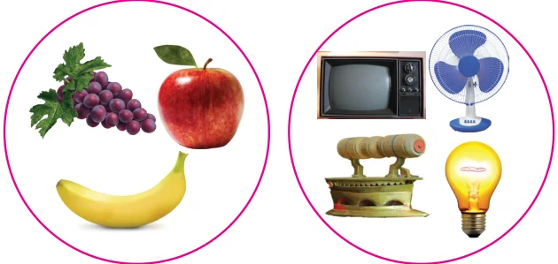
Fig. 1.1 Fig. 1.2
1.2 Set
A set is a well-defined collection of objects.
Here "well-defined collection of objects" means that given a specific object it must be possible for us to decide whether the object is an element of the given collection or not.
The objects of a set are called its members or elements.
For example,
The collection of all books in a District Central Library.
The collection of all colours in a rainbow.
The collection of prime numbers.
We see that in the adjacent box, statements (1), (2), and (4) are well defined and therefore they are sets. Whereas (3) and (5) are not well defined because the words good and beautiful are difficult to agree on. I might consider a student to be good and you may not. I might consider the Jasmine is the beautiful flower but you may not. So we will consider only those collections to be sets where there is no such ambiguity.
Which of the following are sets?
Collection of Natural numbers.
Collection of English alphabets.
Collection of good students in a class.
Collection of States in our country.
Collection of beautiful flowers in a garden.
Therefore (3) and (5) are not sets.
Activity - 1
Discuss and give as many examples of collections from your daily life situations, which are sets and which are not sets.
Note
Elements of a set are listed only once.
The order of listing the elements of the set does not change the set.
For example, the collection 1,2,3,4,5,6,7,8, … as well as the collection 1, 3, 2, 4, 5, 7, 6, 8, … are the same though listed in different order. Since it is necessary to know whether an object is an element in the set or not, we do not want to list that element many times.
Notation
A set is usually denoted by capital letters of the English Alphabets A, B, P, Q, X, Y, etc. The elements of a set is written within curly brackets "{ }"
If x is an element of a set A or x belongs to A, we write \(x \in A\).
If x is not an element of a set A or x does not belong to A, we write \(x \notin A\).
For example,
Consider the set \(A = \{2,3,5,7\}\) then
2 is an element of A; we write \(2 \in A\)
5 is an element of A; we write \(5 \in A\)
6 is not an element of A; we write \(6 \notin A\)
Consider the set \(A =\) {Ashwin, Murali Vijay, Vijay Shankar, Badrinath}.
Fill in the blanks with the appropriate symbol \(\in\) or \(\notin\).
Murali Vijay ______ A
Ashwin ______ A
Badrinath ______ A
Ganguly ______ A
Tendulkar ______ A
Solution
Murali Vijay \(\in A\)
Ashwin \(\in A\)
Badrinath \(\in A\)
Ganguly \(\notin A\)
Tendulkar \(\notin A\)
1.3 Representation of a Set
The collection of odd numbers can be described in many ways:
"The set of odd numbers" is a fine description, we understand it well.
It can be written as \(\{1, 3, 5, \ldots\}\)
Also, it can be said as the collection of all numbers \(x\) where \(x\) is an odd number.
All of them are equivalent and useful. For instance,the two descriptions "The collection of all solutions to the equation \(x - 5 = 3\)" and \(\{8\}\) refer to the same set.
A set can be represented in any one of the following three ways or forms:
1.3.1 Descriptive Form
In descriptive form, a set is described in words.
For example,
The set of all vowels in English alphabets.
The set of whole numbers.
1.3.2 Set Builder Form or Rule Form
In set builder form, all the elements are described by a rule.
For example,
\(A = \{x : x \text{ is a vowel in English alphabets}\}\)
\(B = \{x \mid x \text{ is a whole number}\}\)
1.3.3 Roster Form or Tabular Form
A set can be described by listing all the elements of the set.
Write the set of letters of the following words in Roster form
ASSESSMENT
PRINCIPAL
Solution
ASSESSMENT \(X = \{A, S, E, M, N, T\}\)
PRINCIPAL \(Y = \{P, R, I, N, C, A, L\}\)
Exercise 1.1
Which of the following are sets?
The collection of prime numbers upto 100.
The collection of rich people in India.
The collection of all rivers in India.
The collection of good Hockey players.
List the set of letters of the following words in Roster form.
INDIA
PARALLELOGRAM
MISSISSIPPI
CZECHOSLOVAKIA
Consider the following sets \(A = \{0, 3, 5, 8\}\), \(B = \{2, 4, 6, 10\}\) and \(C = \{12, 14, 18, 20\}\).
State whether True or False:
\(18 \in C\)
\(6 \notin A\)
\(14 \notin C\)
\(10 \in B\)
\(5 \in B\)
\(0 \in B\)
Fill in the blanks:
\(3 \in \underline{\qquad}\)
\(14 \in \underline{\qquad}\)
\(18 \ \underline{\qquad}\ B\)
\(4 \ \underline{\qquad}\ B\)
Represent the following sets in Roster form.
\(A =\) The set of all even natural numbers less than 20.
\(B = \left\{y : y = \dfrac{1}{2n},\ n \in \mathbb{N},\ n \le 5\right\}\)
\(C = \{x : x \text{ is perfect cube, } 27 < x < 216\}\)
\(D = \{x : x \in \mathbb{Z},\ -5 < x \le 2\}\)
Represent the following sets in set builder form.
\(B =\) The set of all Cricket players in India who scored double centuries in One day Internationals.
\(S = \{x : x \text{ is a consonant in English alphabet}\}\)
1.4 Types of Sets
There is a very special set of great interest: the empty collection ! Why should one care about the empty collection? Consider the set of solutions to the equation \(x^{2}+1 = 0\). It has no elements at all in the set of Real Numbers. Also consider all rectangles with one angle greater than 90 degrees. There is no such rectangle and hence this describes an empty set.
So, the empty set is important, interesting and deserves a special symbol too.
1.4.1 Empty Set or Null Set
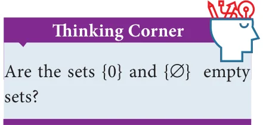
A set consisting of no element is called the empty set or null set or void set.
It is denoted by \(\emptyset\) or \(\{\ \}\).
For example,
\(A=\{x : x \text{ is an odd integer and divisible by } 2\}\) \(\therefore A=\{\ \}\) or \(\emptyset\)
The set of all integers between 1 and 2.
1.4.2.Singleton Set
A set which has only one element is called a singleton set.
For example,
\(A = \{x : 3 < x < 5,\ x \in \mathbb{N}\}\)
The set of all even prime numbers.
1.4.3 Finite Set
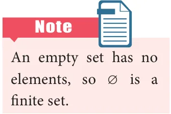
A set with finite number of elements is called a finite set.
For example,
The set of family members.
The set of indoor/outdoor games you play.
The set of curricular subjects you learn in school.
\(A = \{x : x \text{ is a factor of } 36\}\)
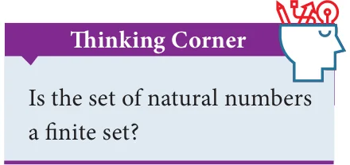
1.4.4 Infinite Set
A set which is not finite is called an infinite set.
For example,
\(\{5,10,15,\ldots\}\)
The set of all points on a line.
To discuss further about the types of sets, we need to know the cardinality of sets.
Cardinal number of a set : When a set is finite, it is very useful to know how many elements it has. The number of elements in a set is called the Cardinal number of the set.
The cardinal number of a set \(A\) is denoted by \(n(A)\)
If \(A = \{1,2,3,4,5,7,9,11\}\), find \(n(A)\).
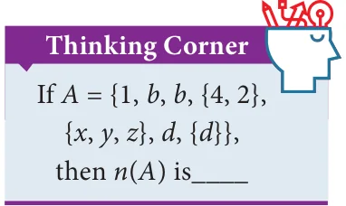
Solution
\(A = \{1,2,3,4,5,7,9,11\}\)
Since set \(A\) contains 8 elements, \(n(A) = 8\).
1.4.5 Equivalent Sets
Two finite sets \(A\) and \(B\) are said to be equivalent if they contain the same number of elements. It is written as \(A \approx B\).
If \(A\) and \(B\) are equivalent sets, then \(n(A) = n(B)\)
For example,
Consider \(A = \{\text{ball, bat}\}\) and \(B = \{\text{History, Geography}\}\).
Here \(A\) is equivalent to \(B\) because \(n(A) = n(B) = 2\).
Are \(P = \{x : -3 \le x \le 0,\ x \in \mathbb{Z}\}\) and \(Q =\) The set of all prime factors of 210, equivalent sets?
Solution
\(P = \{-3, -2, -1, 0\}\), The prime factors of 210 are 2,3,5,and 7 and so, \(Q = \{2, 3, 5, 7\}\)
\(n(P) = 4\) and \(n(Q) = 4\). Therefore \(P\) and \(Q\) are equivalent sets.
1.4.6 Equal Sets
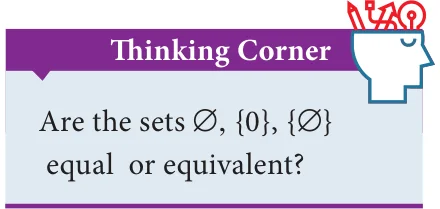
Two sets are said to be equal if they contain exactly the same elements, otherwise they are said to be unequal.
In other words, two sets \(A\) and \(B\) are said to be equal, if
every element of \(A\) is also an element of \(B\)
every element of \(B\) is also an element of \(A\)
For example,
Consider the sets \(A = \{1, 2, 3, 4\}\) and \(B = \{4, 2, 3, 1\}\)
Since \(A\) and \(B\) contain exactly the same elements, \(A\) and \(B\) are equal sets.
A set does not change, if one or more elements of the set are repeated.
For example, if we are given
\(A=\{a, b, c\}\) and \(B=\{a, a, b, b, b, c\}\) then, we write \(B = \{a, b, c\}\). Since, every element of \(A\) is also an element of \(B\) and every element of \(B\) is also an element of \(A\), the sets \(A\) and \(B\) are equal.
Are \(A = \{x : x \in \mathbb{N},\ 4 \le x \le 8\}\) and \(B = \{4, 5, 6, 7, 8\}\) equal sets?
Solution
\(A = \{4, 5, 6, 7, 8\},\ B = \{4, 5, 6, 7, 8\}\)
\(A\) and \(B\) are equal sets.
Note
Equal sets are equivalent sets but equivalent sets need not be equal sets. For example, if \(A = \{p,q,r,s,t\}\) and \(B = \{4,5,6,7,8\}\). Here \(n(A)=n(B)\), so \(A\) and \(B\) are equivalent but not equal.
1.4.7 Universal Set
A Universal set is a set which contains all the elements of all the sets under consideration and is usually denoted by U.
For example,
If we discuss about elements in Natural numbers, then the universal set U is the set of all Natural numbers. \(U=\{x : x \in \mathbb{N}\}\).
If \(A=\{\text{earth, mars, jupiter}\}\), then the universal set U is the planets of solar system.
1.4.8 Subset
Let A and B be two sets. If every element of \(A\) is also an element of \(B\), then \(A\) is called a subset of \(B\). We write \(A \subseteq B\).
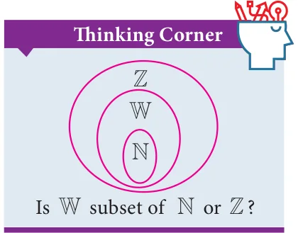
\(A \subseteq B\) is read as “\(A\) is a subset of \(B\)”
If \(A\) is not a subset of \(B\), we write \(A \not\subseteq B\)
Clearly, if \(A\) is a subset of \(B\), then \(n(A) \le n(B)\).
Since every element of \(A\) is also an element of \(B\), the set \(B\) must have at least as many elements as \(A\), thus \(n(A) \le n(B)\).
The other way is also true. Suppose that \(n(A) > n(B)\), then \(A\) has more elements than \(B\), and hence there is at least one element in \(A\) that cannot be in \(B\), so \(A\) is not a subset of \(B\).
For example,
\(\{1\} \subseteq \{1,2,3\}\)
\(\{2,4\} \not\subseteq \{1,2,3\}\)
Insert the appropriate symbol \(\subseteq\) or \(\not\subseteq\) in each blank to make a true statement. (i) \(\{10, 20, 30\}\ \underline{\qquad}\ \{10, 20, 30, 40\}\) (ii) \(\{p, q, r\}\ \underline{\qquad}\ \{w, x, y, z\}\)
Solution
\(\{10, 20, 30\}\ \underline{\qquad}\ \{10, 20, 30, 40\}\) Since every element of \(\{10, 20, 30\}\) is also an element of \(\{10, 20, 30, 40\}\), we get \(\{10, 20, 30\} \subseteq \{10, 20, 30, 40\}\).
\(\{p, q, r\}\ \underline{\qquad}\ \{w, x, y, z\}\) Since the element \(p\) belongs to \(\{p, q, r\}\) but does not belong to \(\{w, x, y, z\}\), shows that \(\{p, q, r\} \not\subseteq \{w, x, y, z\}\).
Write all the subsets of \(A = \{a, b\}\).
Solution
\(A= \{a,b\}\)
Subsets of \(A\) are \(\emptyset, \{a\}, \{b\}\) and \(\{a, b\}\).
Note
If \(A \subseteq B\) and \(B \subseteq A\), then \(A = B\). In fact this is how we defined equality of sets.
Empty set is a subset of every set. This is not easy to see ! Let \(A\) be any set. The only way for the empty set to be not a subset of \(A\) would be to have an element \(x\) in it but with \(x\) not in \(A\). But how can \(x\) be in the empty set ? That is impossible. So this only way being impossible, the empty set must be a subset of \(A\). (Is your head spinning? Think calmly, explain it to a friend, and you will agree it is alright !)
Every set is a subset of itself. (Try and argue why?)
1.4.9. Proper Subset
Let \(A\) and \(B\) be two sets. If \(A\) is a subset of \(B\) and \(A \ne B\), then \(A\) is called a proper subset of \(B\) and we write \(A \subset B\).
For example,
If \(A=\{1,2,5\}\) and \(B=\{1,2,3,4,5\}\) then \(A\) is a proper subset of \(B\) ie. \(A \subset B\).
1.4.10 Disjoint Sets
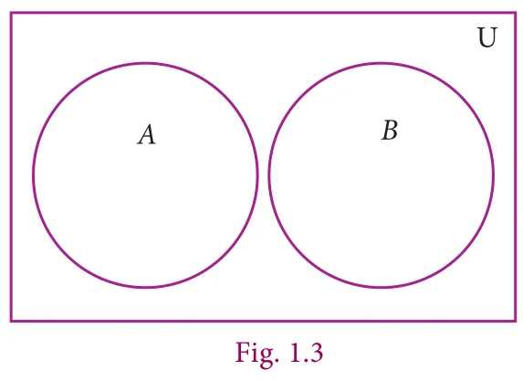
Two sets \(A\) and \(B\) are said to be disjoint if they do not have common elements.
In other words, if \(A \cap B = \emptyset\), then \(A\) and \(B\) are said to be disjoint sets.
Verify whether \(A=\{20, 22, 23, 24\}\) and \(B=\{25, 30, 40, 45\}\) are disjoint sets.
Since \(A \cap B = \emptyset\), \(A\) and \(B\) are disjoint sets.
1.4.11 Power Set
For example,
If \(A=\{2, 3\}\), then find the power set of \(A\). The subsets of \(A\) are \(\emptyset, \{2\}, \{3\}, \{2,3\}\). The power set of \(A\), \(P(A) = \{\emptyset, \{2\}, \{3\}, \{2,3\}\}\)
If \(A = \{\emptyset, \{\emptyset\}\}\), then the power set of \(A\) is \(\{\emptyset, \{\emptyset, \{\emptyset\}\}, \{\emptyset\}, \{\{\emptyset\}\}\}\).
An important property.
We already noted that \(n(A) \le n[P(A)]\). But how big is \(P(A)\) ? Think about this a bit, and see whether you come to the following conclusion:
If \(n(A) = m\), then \(n[P(A)] = 2^{m}\)
The number of proper subsets of a set \(A\) is \(n[P(A)]-1 = 2^{m}-1\).
Find the number of subsets and the number of proper subsets of a set \(X=\{a, b, c, x, y, z\}\).
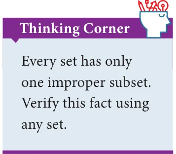
Solution
Given \(X=\{a, b, c, x, y, z\}\). Then, \(n(X) = 6\)
The number of subsets \(= n[P(X)] = 2^{6} = 64\)
The number of proper subsets \(= n[P(X)]-1 = 2^{6}-1\)
\(= 64 - 1 = 63\)
Exercise 1.2
Find the cardinal number of the following sets.
\(M = \{p, q, r, s, t, u\}\)
\(P = \{x : x = 3n+2,\ n \in \mathbb{W} \text{ and } x < 15\}\)
\(Q = \{y : y = \frac{4}{3n},\ n \in \mathbb{N} \text{ and } 2 < n \le 5\}\)
\(R = \{x : x \text{ is an integers, } x \in \mathbb{Z} \text{ and } -5 \le x < 5\}\)
\(S =\) The set of all leap years between 1882 and 1906.
Identify the following sets as finite or infinite.
\(X =\) The set of all districts in Tamilnadu.
\(Y =\) The set of all straight lines passing through a point.
\(A = \{x : x \in \mathbb{Z} \text{ and } x < 5\}\)
\(B = \{x : x^{2}-5x+6 = 0,\ x \in \mathbb{N}\}\)
Which of the following sets are equivalent or unequal or equal sets?
\(A =\) The set of vowels in the English alphabets. \(B =\) The set of all letters in the word “VOWEL”
\(C = \{2,3,4,5\}\) \(D = \{x : x \in \mathbb{W},\ 1 < x < 5\}\)
\(X = \{x : x \text{ is a letter in the word ``LIFE''}\}\) \(Y = \{F, I, L, E\}\)
\(G = \{x : x \text{ is a prime number and } 3 < x < 23\}\) \(H = \{x : x \text{ is a divisor of } 18\}\)
Identify the following sets as null set or singleton set.
\(A = \{x : x \in \mathbb{N},\ 1 < x < 2\}\)
\(B =\) The set of all even natural numbers which are not divisible by 2
\(C = \{0\}\).
\(D =\) The set of all triangles having four sides.
State which pairs of sets are disjoint or overlapping?
\(A = \{f, i, a, s\}\) and \(B = \{a, n, f, h, s\}\)
\(C = \{x : x \text{ is a prime number, } x > 2\}\) and \(D = \{x : x \text{ is an even prime number}\}\)
\(E = \{x : x \text{ is a factor of } 24\}\) and \(F = \{x : x \text{ is a multiple of } 3,\ x < 30\}\)
If \(S = \{\text{square, rectangle, circle, rhombus, triangle}\}\), list the elements of the following subset of \(S\).
The set of shapes which have 4 equal sides.
The set of shapes which have radius.
The set of shapes in which the sum of all interior angles is \(180^{\circ}\).
The set of shapes which have 5 sides.
If \(A = \{a, \{a, b\}\}\), write all the subsets of \(A\).
Write down the power set of the following sets:
\(A = \{a, b\}\)
\(B = \{1, 2, 3\}\)
\(D = \{p, q, r, s\}\)
\(E = \emptyset\)
Find the number of subsets and the number of proper subsets of the following sets.
\(W = \{\text{red, blue, yellow}\}\)
\(X = \{x^{2} : x \in \mathbb{N},\ x^{2} \le 100\}\).
If \(n(A) = 4\), find \(n[P(A)]\).
If \(n(A) = 0\), find \(n[P(A)]\).
If \(n[P(A)] = 256\), find \(n(A)\).
1.5 Set Operations
We started with numbers and very soon we learned arithmetical operations on them.
In algebra we learnt expressions and soon started adding and multiplying them as well, writing \((x^2+2)\), \((x-3)\) etc. Now that we know sets, the natural question is, what can we do with sets, what are natural operations on them?
When two or more sets combine together to form one set under the given conditions, then operations on sets can be carried out. We can visualize the relationship between sets and set operations using Venn diagram.
John Venn was an English mathematician. He invented Venn diagrams which pictorially represent the relations between sets. Venn diagrams are used in the field of Set Theory, Probability, Statistics, Logic and Computer Science.
1.5.1 Complement of a Set
The Complement of a set A is the set of all elements of U (the universal set) that are not in A. It is denoted by \(A'\) or \(A^{c}\). In symbols \(A' = \{x : x \in U, x \notin A\}\)
Venn diagram for complement of a set
Fig. 1.4 Fig. 1.5
A (shaded region) \(A'\) (shaded region)
For example,
If \(U =\) {all boys in a class} and \(A =\) {boys who play Cricket}, then complement of the set A is \(A' =\) {boys who do not play Cricket}.
Example 1.10
If \(U = \{c, d, e, f, g, h, i, j\}\) and \(A = \{c, d, g, j\}\), find \(A'\).
Solution
\(U = \{c, d, e, f, g, h, i, j\}\), \(A = \{c, d, g, j\}\)
\(A' = \{e, f, h, i\}\)
Note
\((A')' = A\)
\(U' = \varnothing\)
\(\varnothing' = U\)
1.5.2 Union of Two Sets
The union of two sets A and B is the set of all elements which are either in A or in B or in both. It is denoted by \(A \cup B\) and read as A union B.
In symbol, \(A \cup B = \{x : x \in A \text{ or } x \in B\}\)
The union of two sets can be represented by Venn diagram as given below
Fig. 1.6 Fig. 1.7
Sets A and B have common elements Sets A and B are disjoint
For example,
If \(P = \{\text{Asia, Africa, Antarctica, Australia}\}\) and \(Q = \{\text{Europe, North America, South America}\}\), then the union set of P and Q is \(P \cup Q = \{\text{Asia, Africa, Antartica, Australia, Europe, North America, South America}\}\).
Note
\(A \cup A = A\)
\(A \cup \varnothing = A\)
\(A \cup U = U\) where A is any subset of universal set U
\(A \subseteq A \cup B\) and \(B \subseteq A \cup B\)
\(A \cup B = B \cup A\) (union of two sets is commutative)
Example 1.11
If \(P = \{m, n\}\) and \(Q = \{m, i, j\}\), then, represent P and Q in Venn diagram and hence find \(P \cup Q\).
Solution
Given \(P = \{m, n\}\) and \(Q = \{m, i, j\}\)
From the Venn diagram, \(P \cup Q = \{n, m, i, j\}\).
Fig. 1.8
1.5.3 Intersection of Two Sets
The intersection of two sets A and B is the set of all elements common to both A and B. It is denoted by \(A \cap B\) and read as A intersection B.
In symbol, \(A \cap B = \{x : x \in A \text{ and } x \in B\}\)
Intersection of two sets can be represented by a Venn diagram as given below
For example,
If \(A = \{1, 2, 6\}\); \(B = \{2, 3, 4\}\), then \(A \cap B = \{2\}\) because 2 is common element of the sets A and B.
Fig. 1.9
Example 1.12
Let \(A = \{x : x \text{ is an even natural number and } 1 < x \le 12\}\) and \(B = \{x : x \text{ is a multiple of 3, } x \in \mathbb{N} \text{ and } x \le 12\}\) be two sets. Find \(A \cap B\).
Solution
Here \(A = \{2, 4, 6, 8, 10, 12\}\) and \(B = \{3, 6, 9, 12\}\)
\(A \cap B = \{6, 12\}\)
Example 1.13
If \(A = \{2, 3\}\) and \(C = \{\;\}\), find \(A \cap C\).
Solution
There is no common element and hence \(A \cap C = \{\;\}\)
Note
\(A \cap A = A\) \(A \cap \varnothing = \varnothing\)
\(A \cap U = A\) where A is any subset of universal set U
\(A \cap B \subseteq A\) and \(A \cap B \subseteq B\)
\(A \cap B = B \cap A\) (Intersection of two sets is commutative)
Note
When \(B \subset A\), the union and intersection of A and B are represented in Venn diagram as follows
Fig. 1.10 Fig. 1.11 Fig. 1.12
\(B \subset A\) shaded region is \(A \cup B = A\) shaded region is \(A \cap B = B\)
If A and B are any two non empty sets such that \(A \cup B = A \cap B\), then \(A = B\)
Let \(n(A) = p\) and \(n(B) = q\) then
Minimum of \(n(A \cup B) = \max\{p, q\}\)
Maximum of \(n(A \cup B) = p + q\)
Minimum of \(n(A \cap B) = 0\)
Maximum of \(n(A \cap B) = \min\{p, q\}\)
1.5.4 Difference of Two Sets
Let A and B be two sets, the difference of sets A and B is the set of all elements which are in A, but not in B. It is denoted by \(A - B\) or \(A \setminus B\) and read as A difference B.
In symbol, \(A - B = \{x : x \in A \text{ and } x \notin B\}\)
\(B - A = \{y : y \in B \text{ and } y \notin A\}\).
Venn diagram for set difference
Fig. 1.13 Fig. 1.14 Fig. 1.15
Example 1.14
If \(A = \{-3, -2, 1, 4\}\) and \(B = \{0, 1, 2, 4\}\), find (i) \(A - B\) (ii) \(B - A\).
(vii) What do you observe from the Venn diagram (iii) and (v)?
1.6 Properties of Set Operations
It is an interesting investigation to find out if operations among sets (like union, intersection, etc.) follow mathematical properties such as Commutativity, Associativity, etc. We have seen numbers having many of these properties; whether sets also possess these, is to be explored.
We first take up the properties of set operations on union and intersection.
1.6.1 Commutative Property
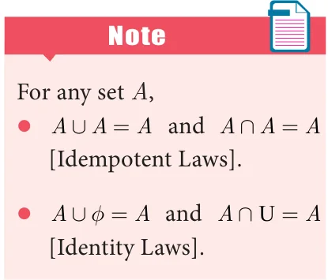
In set language, commutative situations can be seen when we perform operations. For example, we can look into the Union (and Intersection) of sets to find out if the operation is commutative.
Let \(A = \{2, 3, 8, 10\}\) and \(B = \{1, 3, 10, 13\}\) be two sets. Then, \(A \cup B = \{1, 2, 3, 8, 10, 13\}\) and
\(B \cup A = \{1, 2, 3, 8, 10, 13\}\)
From the above, we see that \(A \cup B = B \cup A\). This is called Commutative property of union of sets.
Now, \(A \cap B = \{3, 10\}\) and \(B \cap A = \{3, 10\}\). Then, we see that \(A \cap B = B \cap A\).
This is called Commutative property of intersection of sets.
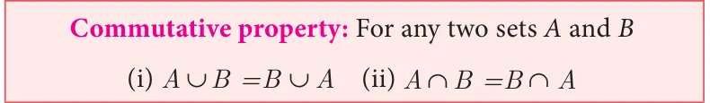
Example 1.19
If \(A = \{b, e, f, g\}\) and \(B = \{c, e, g, h\}\), then verify the commutative property of (i) union of sets (ii) intersection of sets.
Solution
Given, \(A = \{b, e, f, g\}\) and \(B = \{c, e, g, h\}\)
(i) \(A \cup B = \{b, c, e, f, g, h\}\) ... (1)
\(B \cup A = \{b, c, e, f, g, h\}\) ... (2)
From (1) and (2) we have \(A \cup B = B \cup A\). It is verified that union of sets is commutative.
(ii) \(A \cap B = \{e, g\}\) ... (3)
\(B \cap A = \{e, g\}\) ... (4)
From (3) and (4) we get, \(A \cap B = B \cap A\). It is verified that intersection of sets is commutative.
Note
Recall that subtraction on numbers is not commutative. Is set difference commutative? We expect that the set difference is not commutative as well. For instance, consider \(A = \{a, b, c\}\), \(B = \{b, c, d\}\). \(A - B = \{a\}\), \(B - A = \{d\}\); we see that \(A - B \ne B - A\).
1.6.2 Associative Property
Now, we perform operations on union and intersection for three sets.
Let \(A = \{-1, 0, 1, 2\}\), \(B = \{-3, 0, 2, 3\}\) and \(C = \{0, 1, 3, 4\}\) be three sets.
then verify \(A \cap (B \cap C) = (A \cap B) \cap C\).
Solution
Note
The set difference in general is not associative, that is, \((A - B) - C \ne A - (B - C)\). But, if the sets A, B and C are mutually disjoint then the set difference is associative, that is, \((A - B) - C = A - (B - C)\).
Now, \((B \cap C) = \left\{\frac{1}{4}, 2, \frac{5}{2}\right\}\)
\(A \cap (B \cap C) = \left\{\frac{1}{4}, 2\right\}\) ... (1)
Then, \(A \cap B = \left\{0, \frac{1}{4}, \frac{3}{4}, 2\right\}\)
\((A \cap B) \cap C = \left\{\frac{1}{4}, 2\right\}\) ... (2)
Test for the commutative property of union and intersection of the sets \(P = \{x : x \text{ is a real number between 2 and 7}\}\) and \(Q = \{x : x \text{ is a rational number between 2 and 7}\}\).
If \(A = \{p, q, r, s\}\), \(B = \{m, n, q, s, t\}\) and \(C = \{m, n, p, q, s\}\), then verify the associative property of union of sets.
Verify the associative property of intersection of sets for \(A = \{-11, \sqrt{2}, \sqrt{5}, 7\}\), \(B = \{\sqrt{3}, \sqrt{5}, 6, 13\}\) and \(C = \{\sqrt{2}, \sqrt{3}, \sqrt{5}, 9\}\).
If \(A = \{x : x = 2^n, n \in W \text{ and } n < 4\}\), \(B = \{x : x = 2n, n \in \mathbb{N} \text{ and } n \le 4\}\) and \(C = \{0, 1, 2, 5, 6\}\), then verify the associative property of intersection of sets.
1.6.3 Distributive Property
In lower classes, we have studied distributive property of multiplication over addition on numbers. That is, \(a \times (b + c) = (a \times b) + (a \times c)\). In the same way we can define distributive properties on sets.
Distributive property: For any three sets \(A\), \(B\) and \(C\)
\(A \cap (B \cup C) = (A \cap B) \cup (A \cap C)\) [Intersection over union]
\(A \cup (B \cap C) = (A \cup B) \cap (A \cup C)\) [Union over intersection]
Example 1.21
If \(A = \{0, 2, 4, 6, 8\}\), \(B = \{x : x \text{ is a prime number and } x < 11\}\) and \(C = \{x : x \in N \text{ and } 5 \le x < 9\}\) then verify \(A \cup (B \cap C) = (A \cup B) \cap (A \cup C)\).
Then, \((A \cup B) \cap (A \cup C) = \{0, 2, 4, 5, 6, 7, 8\}\) ... (2)
From (1) and (2), it is verified that \(A \cup (B \cap C) = (A \cup B) \cap (A \cup C)\).
Example 1.22
Verify \(A \cap (B \cup C) = (A \cap B) \cup (A \cap C)\) using Venn diagrams.
Solution
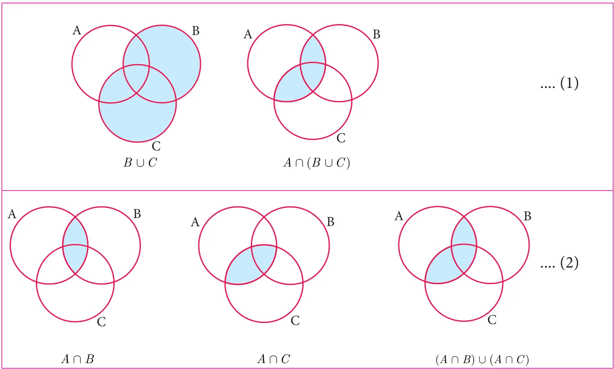
Fig.1.29
From (1) and (2), \(A \cap (B \cup C) = (A \cap B) \cup (A \cap C)\) is verified.
1.7 De Morgan's Laws
Augustus De Morgan \((1806 - 1871)\) was a British mathematician.
He was born on 27th June 1806 in Madurai, Tamilnadu, India. His father was posted in India by the East India Company. When he was seven months old, his family moved back to England. De Morgan was educated at Trinity College, Cambridge, London. He formulated laws for set difference and complementation. These are called De Morgan's laws.
1.7.1 De Morgan's Laws for Set Difference
These laws relate the set operations union, intersection and set difference.
Let us consider three sets A, B and C as \(A = \{-5, -2, 1, 3\}\), \(B = \{-3, -2, 0, 3, 5\}\) and \(C = \{-2, -1, 0, 4, 5\}\).
Now, \(B \cup C = \{-3, -2, -1, 0, 3, 4, 5\}\)
\(A - (B \cup C) = \{-5, 1\}\) ... (1)
Then, \(A - B = \{-5, 1\}\) and \(A - C = \{-5, 1, 3\}\)
\((A - B) \cup (A - C) = \{-5, 1, 3\}\) ... (2)
\((A - B) \cap (A - C) = \{-5, 1\}\) ... (3)
From (1) and (2), we see that
\(A - (B \cup C) \neq (A - B) \cup (A - C)\)
But note that from (1) and (3), we see that
\(A - (B \cup C) = (A - B) \cap (A - C)\)
Now, \(B \cap C = \{-2, 0, 5\}\)
\(A - (B \cap C) = \{-5, 1, 3\}\) ... (4)
From (3) and (4) we see that
\(A - (B \cap C) \neq (A - B) \cap (A - C)\)
But note that from (2) and (4), we get \(A - (B \cap C) = (A - B) \cup (A - C)\)
Verify \(A - (B \cup C) = (A - B) \cap (A - C)\) using Venn diagrams.
Solution
Fig.1.30
From (1) and (2), we get \(A - (B \cup C) = (A - B) \cap (A - C)\). Hence it is verified.
If \(P = \{x : x \in \mathbb{W} \text{ and } 0 < x < 10\}\), \(Q = \{x : x = 2n+1, n \in \mathbb{W} \text{ and } n < 5\}\) and \(R = \{2, 3, 5, 7, 11, 13\}\), then verify \(P - (Q \cap R) = (P - Q) \cup (P - R)\)
and so, \((P - Q) \cup (P - R) = \{1, 2, 4, 6, 8, 9\}\) ... (2)
Hence from (1) and (2), it is verified that \(P - (Q \cap R) = (P - Q) \cup (P - R)\).
1.7.2 De Morgan's Laws for Complementation
These laws relate the set operations on union, intersection and complementation. Let us consider universal set \(U = \{0, 1, 2, 3, 4, 5, 6\}\), \(A = \{1, 3, 5\}\) and \(B = \{0, 3, 4, 5\}\).
If \(A = \{x : x \in \mathbb{Z}, -2 < x \le 4\}\), \(B = \{x : x \in \mathbb{W}, x \le 5\}\), \(C = \{-4, -1, 0, 2, 3, 4\}\), then verify \(A \cup (B \cap C) = (A \cup B) \cap (A \cup C)\).
Verify \(A \cup (B \cap C) = (A \cup B) \cap (A \cup C)\) using Venn diagrams.
If \(A = \{b, c, e, g, h\}\), \(B = \{a, c, d, g, i\}\) and \(C = \{a, d, e, g, h\}\), then show that \(A - (B \cap C) = (A - B) \cup (A - C)\).
If \(A = \{x : x = 6n, n \in \mathbb{W} \text{ and } n < 6\}\), \(B = \{x : x = 2n, n \in \mathbb{N} \text{ and } 2 < n \le 9\}\) and \(C = \{x : x = 3n, n \in \mathbb{N} \text{ and } 4 \le n < 10\}\), then show that \(A - (B \cap C) = (A - B) \cup (A - C)\).
If \(A = \{-2, 0, 1, 3, 5\}\), \(B = \{-1, 0, 2, 5, 6\}\) and \(C = \{-1, 2, 5, 6, 7\}\), then show that \(A - (B \cup C) = (A - B) \cap (A - C)\).
If \(A = \left\{y : y = \dfrac{a+1}{2}, a \in \mathbb{W} \text{ and } a \le 5\right\}\), \(B = \left\{y : y = \dfrac{2n-1}{2}, n \in \mathbb{W} \text{ and } n < 5\right\}\) and \(C = \left\{-1, -\dfrac{1}{2}, 1, \dfrac{3}{2}, 2\right\}\), then show that \(A - (B \cup C) = (A - B) \cap (A - C)\).
Verify \(A - (B \cap C) = (A - B) \cup (A - C)\) using Venn diagrams.
If \(U = \{4, 7, 8, 10, 11, 12, 15, 16\}\), \(A = \{7, 8, 11, 12\}\) and \(B = \{4, 8, 12, 15\}\), then verify De Morgan's Laws for complementation.
Verify \((A \cap B)' = A' \cup B'\) using Venn diagrams.
1.8 Application on Cardinality of Sets:
We have learnt about the union, intersection, complement and difference of sets. Now we will go through some practical problems on sets related to everyday life.
Results:
Fig. 1.32
If A and B are two finite sets, then
\(n(A \cup B) = n(A) + n(B) - n(A \cap B)\)
\(n(A - B) = n(A) - n(A \cap B)\)
\(n(B - A) = n(B) - n(A \cap B)\)
\(n(A') = n(U) - n(A)\)
Note
From the above results we may get,
\(n(A \cap B) = n(A) + n(B) - n(A \cup B)\)
\(n(U) = n(A) + n(A')\)
If A and B are disjoint sets then, \(n(A \cup B) = n(A) + n(B)\).
Example 1.27
From the Venn diagram, verify that \(n(A \cup B) = n(A) + n(B) - n(A \cap B)\)
Solution
Fig. 1.33
From the venn diagram,
\(A = \{5, 10, 15, 20\}\)
\(B = \{10, 20, 30, 40, 50,\}\)
Then \(A \cup B = \{5, 10, 15, 20, 30, 40, 50\}\)
\(A \cap B = \{10, 20\}\)
\(n(A) = 4\), \(n(B) = 5\), \(n(A \cup B) = 7\), \(n(A \cap B) = 2\)
\(n(A \cup B) = 7\) \(\rightarrow\) (1)
\(n(A) + n(B) - n(A \cap B) = 4 + 5 - 2\)
\(= 7\) \(\rightarrow\) (2)
From (1) and (2), \(n(A \cup B) = n(A) + n(B) - n(A \cap B)\).
Example 1.28
If \(n(A) = 36\), \(n(B) = 10\), \(n(A \cup B) = 40\), and \(n(A') = 27\) find \(n(U)\) and \(n(A \cap B)\).
Fill in the blanks with appropriate cardinal numbers.
S.No.
\(n(A)\)
\(n(B)\)
\(n(A \cup B)\)
\(n(A \cap B)\)
\(n(A - B)\)
\(n(B - A)\)
1
30
45
65
2
20
55
10
3
50
65
25
4
30
43
70
Example 1.29
Let \(A = \{b, d, e, g, h\}\) and \(B = \{a, e, c, h\}\). Verify that \(n(A - B) = n(A) - n(A \cap B)\).
Solution
\(A = \{b, d, e, g, h\}\), \(B = \{a, e, c, h\}\)
\(A - B = \{b, d, g\}\)
\(n(A - B) = 3\) ... (1)
\(A \cap B = \{e, h\}\)
\(n(A \cap B) = 2\), \(n(A) = 5\)
\(n(A) - n(A \cap B) = 5 - 2\)
\(= 3\) ... (2)
Form (1) and (2) we get \(n(A - B) = n(A) - n(A \cap B)\).
Example 1.30
In a school, all students play either Hockey or Cricket or both. 300 play Hockey, 250 play Cricket and 110 play both games. Find
the number of students who play only Hockey.
the number of students who play only Cricket.
the total number of students in the School.
Solution:
Let H be the set of all students who play Hockey and C be the set of all students who play Cricket.
Fig. 1.34
Then \(n(H) = 300\), \(n(C) = 250\) and \(n(H \cap C) = 110\)
Using Venn diagram,
From the Venn diagram,
The number of students who play only Hockey \(= 190\)
The number of students who play only Cricket \(= 140\)
The total number of students in the school \(= 190 + 110 + 140 = 440\)
Aliter
The number of students who play only Hockey
\(n(H - C) = n(H) - n(H \cap C)\)
\(= 300 - 110 = 190\)
The number of students who play only Cricket
\(n(C - H) = n(C) - n(H \cap C)\)
\(= 250 - 110 = 140\)
The total number of students in the school
\(n(H \cup C) = n(H) + n(C) - n(H \cap C)\)
\(= 300 + 250 - 110 = 440\)
Example 1.31
In a party of 60 people, 35 had Vanilla ice cream, 30 had Chocolate ice cream. All the people had at least one ice cream. Then how many of them had,
both Vanilla and Chocolate ice cream.
only Vanilla ice cream.
only Chocolate ice cream.
Solution:
Let V be the set of people who had Vanilla ice cream and C be the set of people who had Chocolate ice cream.
Then \(n(V) = 35\), \(n(C) = 30\), \(n(V \cup C) = 60\),
Let x be the number of people who had both ice creams.
Fig. 1.35
From the Venn diagram
\(35 - x + x + 30 - x = 60\)
\(65 - x = 60\)
\(x = 5\)
Hence 5 people had both ice creams.
Number of people who had only Vanilla ice cream \(= 35 - x = 35 - 5 = 30\)
Number of people who had only Chocolate ice cream \(= 30 - x = 30 - 5 = 25\)
We have learnt to solve problems involving two sets using the formula \(n(A \cup B) = n(A) + n(B) - n(A \cap B)\). Suppose we have three sets, we can apply this formula to get a similar formula for three sets.
For any three finite sets A, B and C
\(n(A \cup B \cup C) = n(A) + n(B) + n(C) - n(A \cap B) - n(B \cap C) - n(A \cap C) + n(A \cap B \cap C)\)
Note
Let us consider the following results which will be useful in solving problems using Venn diagram. Let three sets A, B and C represent the students. From the Venn diagram,
Fig. 1.36
Number of students in only set \(A = a\), only set \(B = b\), only set \(C = c\).
Total number of students in only one set \(= (a + b + c)\)
Total number of students in only two sets \(= (x + y + z)\)
Number of students exactly in three sets \(= r\)
Total number of students in atleast two sets (two or more sets) \(= x + y + z + r\)
Total number of students in 3 sets \(= (a + b + c + x + y + z + r)\)
Example 1.32
In a college, 240 students play cricket, 180 students play football, 164 students play hockey, 42 play both cricket and football, 38 play both football and hockey, 40 play both cricket and hockey and 16 play all the three games. If each student participate in atleast one game, then find (i) the number of students in the college (ii) the number of students who play only one game.
Solution
Let C, F and H represent sets of students who play Cricket, Football and Hockey respectively.
Let us represent the given data in a Venn diagram.
(i) The number of students in the college
\(= 174 + 26 + 116 + 22 + 102 + 24 + 16 = 480\)
(ii) The number of students who play only one game
\(= 174 + 116 + 102 = 392\)
Example 1.33
In a residential area with 600 families \(\frac{3}{5}\) owned scooter, \(\frac{1}{3}\) owned car, \(\frac{1}{4}\) owned bicycle, 120 families owned scooter and car, 86 owned car and bicylce while 90 families owned scooter and bicylce. If \(\frac{2}{15}\) of families owned all the three types of vehicles, then find (i) the number of families owned atleast two types of vehicle. (ii) the number of families owned no vehicle.
Solution
Let S, C and B represent sets of families who owned Scooter, Car and Bicycle respectively.
\(n(S \cap C \cap B) = \frac{2}{15} \times 600 = 80\)
From Venn diagram,
The number of families owned atleast two types of vehicles \(= 40 + 6 + 10 + 80 = 136\)
The number of families owned no vehicle
\(= 600 -\) (owned atleast one vehicle)
\(= 600 - (230 + 40 + 74 + 6 + 54 + 10 + 80)\)
\(= 600 - 494 = 106\)
Example 1.34
In a group of 100 students, 85 students speak Tamil, 40 students speak English, 20 students speak French, 32 speak Tamil and English, 13 speak English and French and 10 speak Tamil and French. If each student knows atleast any one of these languages, then find the number of students who speak all these three languages.
Solution
Let A, B and C represent sets of students who speak Tamil, English and French respectively.
Given, \(n(A \cup B \cup C) = 100\), \(n(A) = 85\), \(n(B) = 40\), \(n(C) = 20\),
\(n(A \cap B) = 32\), \(n(B \cap C) = 13\), \(n(A \cap C) = 10\).
We know that,
\(n(A \cup B \cup C) = n(A) + n(B) + n(C) - n(A \cap B) - n(B \cap C) - n(A \cap C) + n(A \cap B \cap C)\)
Therefore, 10 students speak all the three languages.
Example 1.35
A survey was conducted among 200 magazine subscribers of three different magazines A, B and C. It was found that 75 members do not subscribe magazine A, 100 members do not subscribe magazine B, 50 members do not subscribe magazine C and 125 subscribe atleast two of the three magazines. Find
Number of members who subscribe exactly two magazines.
Number of members who subscribe only one magazine.
Solution
Fig. 1.39
Total number of subscribers \(= 200\)
Magazine
Do not subscribe
Subscribe
A
75
125
B
100
100
C
50
150
From the Venn diagram,
Number of members who subscribe only one magazine \(= a + b + c\)
Number of members who subscribe exactly two magazines \(= x + y + z\)
and 125 members subscribe atleast two magazines.
That is, \(x + y + z + r = 125\) ... (1)
Now, \(n(A \cup B \cup C) = 200\), \(n(A) = 125\), \(n(B) = 100\), \(n(C) = 150\), \(n(A \cap B) = x + r\)
\(n(B \cap C) = y + r\), \(n(A \cap C) = z + r\), \(n(A \cap B \cap C) = r\)
We know that,
\(n(A \cup B \cup C) = n(A) + n(B) + n(C) - n(A \cap B) - n(B \cap C) - n(A \cap C) + n(A \cap B \cap C)\)
\(200 = 125 + 100 + 150 - x - r - y - r - z - r + r\)
\(= 375 - (x + y + z + r) - r\)
\(= 375 - 125 - r\) \(\left[\because\ x + y + z + r = 125\right]\)
\(200 = 250 - r\) \(\Rightarrow r = 50\)
From (1) \(x + y + z + 50 = 125\)
We get, \(x + y + z = 75\)
Therefore, number of members who subscribe exactly two magazines \(= 75\).
From Venn diagram,
\((a + b + c) + (x + y + z + r) = 200\) ... (2)
substitute (1) in (2),
\(a + b + c + 125 = 200\)
\(a + b + c = 75\)
Therefore, number of members who subscribe only one magazine \(= 75\).
Exercise 1.6
If \(n(A) = 25\), \(n(B) = 40\), \(n(A \cup B) = 50\) and \(n(B') = 25\), find \(n(A \cap B)\) and \(n(U)\).
If \(n(A) = 300\), \(n(A \cup B) = 500\), \(n(A \cap B) = 50\) and \(n(B') = 350\), find \(n(B)\) and \(n(U)\).
If \(U = \{x : x \in \mathbb{N},\ x \le 10\}\), \(A = \{2,3,4,8,10\}\) and \(B = \{1,2,5,8,10\}\), then verify that \(n(A \cup B) = n(A) + n(B) - n(A \cap B)\)
Verify \(n(A \cup B \cup C) = n(A) + n(B) + n(C) - n(A \cap B) - n(B \cap C) - n(A \cap C) + n(A \cap B \cap C)\) for the following sets.
\(A = \{a, c, e, f, h\}\), \(B = \{c, d, e, f\}\) and \(C = \{a, b, c, f\}\)
In a class, all students take part in either music or drama or both. 25 students take part in music, 30 students take part in drama and 8 students take part in both music and drama. Find
The number of students who take part in only music.
The number of students who take part in only drama.
The total number of students in the class.
In a party of 45 people, each one likes tea or coffee or both. 35 people like tea and 20 people like coffee. Find the number of people who
like both tea and coffee.
do not like tea.
do not like coffee.
In an examination 50% of the students passed in Mathematics and 70% of students passed in Science while 10% students failed in both subjects. 300 students passed in both the subjects. Find the total number of students who appeared in the examination, if they took examination in only two subjects.
\(A\) and \(B\) are two sets such that \(n(A - B) = 32 + x\), \(n(B - A) = 5x\) and \(n(A \cap B) = x\). Illustrate the information by means of a Venn diagram. Given that \(n(A) = n(B)\), calculate the value of \(x\).
Out of 500 car owners investigated, 400 owned car \(A\) and 200 owned car \(B\), 50 owned both \(A\) and \(B\) cars. Is this data correct?
In a colony, 275 families buy Tamil newspaper, 150 families buy English newspaper, 45 families buy Hindi newspaper, 125 families buy Tamil and English newspapers, 17 families buy English and Hindi newspapers, 5 families buy Tamil and Hindi newspapers and 3 families buy all the three newspapers. If each family buy atleast one of these newspapers then find
Number of families buy only one newspaper
Number of families buy atleast two newspapers
Total number of families in the colony.
A survey of 1000 farmers found that 600 grew paddy, 350 grew ragi, 280 grew corn, 120 grew paddy and ragi, 100 grew ragi and corn, 80 grew paddy and corn. If each farmer grew atleast any one of the above three, then find the number of farmers who grew all the three.
In the adjacent diagram, if \(n(U) = 125\), \(y\) is two times of \(x\) and \(z\) is 10 more than \(x\), then find the value of \(x\), \(y\) and \(z\).
Each student in a class of 35 plays atleast one game among chess, carrom and table tennis. 22 play chess, 21 play carrom, 15 play table tennis, 10 play chess and table tennis, 8 play carrom and table tennis and 6 play all the three games. Find the number of students who play (i) chess and carrom but not table tennis (ii) only chess (iii) only carrom (Hint: Use Venn diagram)
In a class of 50 students, each one come to school by bus or by bicycle or on foot. 25 by bus, 20 by bicycle, 30 on foot and 10 students by all the three. Now how many students come to school exactly by two modes of transport?
Exercise 1.7
Multiple Choice Questions
Which of the following is correct?
(1) \(\{7\} \in \{1,2,3,4,5,6,7,8,9,10\}\)
(2) \(7 \in \{1,2,3,4,5,6,7,8,9,10\}\)
(3) \(7 \notin \{1,2,3,4,5,6,7,8,9,10\}\)
(4) \(\{7\} \nsubseteq \{1,2,3,4,5,6,7,8,9,10\}\)
The set \(P = \{x \mid x \in \mathbb{Z},\ -1 < x < 1\}\) is a
(1) Singleton set (2) Power set (3) Null set (4) Subset
If \(U = \{x \mid x \in \mathbb{N},\ x < 10\}\) and \(A = \{x \mid x \in \mathbb{N},\ 2 \le x < 6\}\) then \((A')'\) is
(1) \(\{1, 6, 7, 8, 9\}\) (2) \(\{1, 2, 3, 4\}\) (3) \(\{2, 3, 4, 5\}\) (4) \(\{\ \}\)
If \(B \subseteq A\) then \(n(A \cap B)\) is
(1) \(n(A - B)\) (2) \(n(B)\) (3) \(n(B - A)\) (4) \(n(A)\)
If \(A = \{x, y, z\}\) then the number of non- empty subsets of \(A\) is
(1) 8 (2) 5 (3) 6 (4) 7
Which of the following is correct?
(1) \(\emptyset \subseteq \{a, b\}\) (2) \(\emptyset \in \{a, b\}\) (3) \(\{a\} \in \{a, b\}\) (4) \(a \subseteq \{a, b\}\)
If \(A \cup B = A \cap B\), then
(1) \(A \ne B\) (2) \(A = B\) (3) \(A \subset B\) (4) \(B \subset A\)
If \(B - A\) is \(B\), then \(A \cap B\) is
(1) \(A\) (2) \(B\) (3) U (4) \(\emptyset\)
Fig. 1.40From the adjacent diagram \(n[P(A \triangle B)]\) is
(1) 8 (2) 16 (3) 32 (4) 64
If \(n(A) = 10\) and \(n(B) = 15\), then the minimum and maximum number of elements in \(A \cap B\) is
(1) 10,15 (2) 15,10 (3) 10,0 (4) 0,10
Let \(A = \{\emptyset\}\) and \(B = P(A)\), then \(A \cap B\) is
(1) \(\{\emptyset, \{\emptyset\}\}\) (2) \(\{\emptyset\}\) (3) \(\emptyset\) (4) \(\{0\}\)
In a class of 50 boys, 35 boys play Carrom and 20 boys play Chess then the number of boys play both games is
(1) 5 (2) 30 (3) 15 (4) 10.
If \(U = \{x : x \in \mathbb{N} \text{ and } x < 10\}\), \(A = \{1, 2, 3, 5, 8\}\) and \(B = \{2, 5, 6, 7, 9\}\), then \(n\left[(A \cup B)'\right]\) is
(1) 1 (2) 2 (3) 4 (4) 8
For any three sets P, Q and R, \(P - (Q \cap R)\) is
(1) \(P - (Q \cup R)\) (2) \((P \cap Q) - R\)
(3) \((P - Q) \cup (P - R)\) (4) \((P - Q) \cap (P - R)\)
Which of the following is true?
(1) \(A - B = A \cap B\) (2) \(A - B = B - A\)
(3) \((A \cup B)' = A' \cup B'\) (4) \((A \cap B)' = A' \cup B'\)
If \(n(A \cup B \cup C) = 100\), \(n(A) = 4x\), \(n(B) = 6x\), \(n(C) = 5x\), \(n(A \cap B) = 20\), \(n(B \cap C) = 15\), \(n(A \cap C) = 25\) and \(n(A \cap B \cap C) = 10\), then the value of \(x\) is
(1) 10 (2) 15 (3) 25 (4) 30
For any three sets A, B and C, \((A - B) \cap (B - C)\) is equal to
(1) A only (2) B only (3) C only (4) \(\phi\)
If \(J =\) Set of three sided shapes, \(K =\) Set of shapes with two equal sides and \(L =\) Set of shapes with right angle, then \(J \cap K \cap L\) is
(1) Set of isoceles triangles (2) Set of equilateral triangles
(3) Set of isoceles right triangles (4) Set of right angled triangles
The shaded region in the Venn diagram is
(1) \(Z - (X \cup Y)\) (2) \((X \cup Y) \cap Z\)
(3) \(Z - (X \cap Y)\) (4) \(Z \cup (X \cap Y)\)
In a city, 40% people like only one fruit, 35% people like only two fruits, 20% people like all the three fruits. How many percentage of people do not like any one of the above three fruits?
(1) 5 (2) 8 (3) 10 (4) 15
Points to Remember
Points to Remember
A set is a well defined collection of objects.
Sets are represented in three forms (i) Descriptive form (ii) Set – builder form (iii) Roster form.
If every element of \(A\) is also an element of \(B\), then \(A\) is called a subset of \(B\).
If \(A \subseteq B\) and \(A \ne B\), then \(A\) is a proper subset of \(B\).
The power set of the set \(A\) is the set of all the subsets of \(A\) and it is denoted by \(P(A)\).
The number of subsets of a set with \(m\) elements is \(2^{m}\).
The number of proper subsets of a set with \(m\) elements is \(2^{m} - 1\).
If \(A \cap B = \emptyset\) then \(A\) and \(B\) are disjoint sets. If \(A \cap B \ne \emptyset\) then \(A\) and \(B\) are overlapping.
The difference of two sets \(A\) and \(B\) is the set of all elements in \(A\) but not in \(B\).
The symmetric difference of two sets \(A\) and \(B\) is the union of \(A - B\) and \(B - A\).
Commutative Property
For any two sets \(A\) and \(B\),
\(A \cup B = B \cup A\) ; \(A \cap B = B \cap A\)
Associative Property
For any three sets \(A\), \(B\) and \(C\)
\(A \cup (B \cup C) = (A \cup B) \cup C\) ; \(A \cap (B \cap C) = (A \cap B) \cap C\)
Distributive Property
For any three sets \(A\), \(B\) and \(C\)
\(A \cap (B \cup C) = (A \cap B) \cup (A \cap C)\) [Intersection over union]
\(A \cup (B \cap C) = (A \cup B) \cap (A \cup C)\) [Union over intersection]
De Morgan's Laws for Set Difference
For any three sets \(A\), \(B\) and \(C\)
\(A - (B \cup C) = (A - B) \cap (A - C)\)
\(A - (B \cap C) = (A - B) \cup (A - C)\)
De Morgan's Laws for Complementation
Consider an Universal set and \(A\), \(B\) are two subsets, then
\((A \cup B)' = A' \cap B'\) ; \((A \cap B)' = A' \cup B'\)
Cardinality of Sets
If \(A\) and \(B\) are any two sets, then \(n(A \cup B) = n(A) + n(B) - n(A \cap B)\)
If \(A\), \(B\) and \(C\) are three sets, then
\[n(A \cup B \cup C) = n(A) + n(B) + n(C) - n(A \cap B) - n(B \cap C) - n(A \cap C) + n(A \cap B \cap C)\]
ICT Corner 1
ICT Corner 1
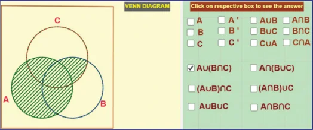
Expected Result is shown in this picture
Step – 1 : Open the Browser, type the URL Link given below (or) Scan the QR Code. GeoGebra work sheet named "Set Language" will open. In the work sheet there are two activities. 1. Venn Diagram for two sets and 2. Venn Diagram for three sets. In the first activity Click on the boxes on the right side to see the respective shading and analyse.
Step - 2 : Do the same for the second activity for three sets.
Do you have a phone at home? How many digits does its dial have?
What is the Pincode of your locality? How is it useful?
When you park a vehicle, do you get a 'token'? What is its purpose?
Have you handled 24 'carat' gold? How do you decide its purity?
How high is the 'power' of your spectacles?
How much water does the overhead tank in your house can hold?
Does your friend have fever? What is his body temperature?
You have learnt about many types of numbers so far. Now is the time to extend the ideas further.
2.2 Rational Numbers
2.2 Rational Numbers
When you want to count the number of books in your cupboard, you start with 1, 2, 3, … and so on. These counting numbers 1, 2, 3, … , are called Natural numbers. You know to show these numbers on a line (see Fig. 2.1).
Fig. 2.1
We use \(\mathbb{N}\) to denote the set of all Natural numbers.
\(\mathbb{N} = \{ 1, 2, 3, \ldots \}\)
If the cupboard is empty (since no books are there). To denote such a situation we use the symbol 0. Including zero as a digit you can now consider the numbers 0, 1, 2, 3, … and call them Whole numbers. With this additional entity, the number line will look as shown below
Fig. 2.2
We use \(\mathbb{W}\) to denote the set of all Whole numbers.
\(\mathbb{W} = \{ 0, 1, 2, 3, \ldots \}\)
Certain conventions lead to more varieties of numbers. Let us agree that certain conventions may be thought of as "positive" denoted by a '+' sign. A thing that is 'up' or 'forward' or 'more' or 'increasing' is positive; and anything that is 'down' or 'backward' or 'less' or 'decreasing' is "negative" denoted by a '–' sign.
You can treat natural numbers as positive numbers and rename them as positive integers; thereby you have enabled the entry of negative integers \(- 1\), \(- 2\), \(- 3\), … . Note that \(- 2\) is "more negative" than \(- 1\). Therefore, among \(- 1\) and \(- 2\), you find that \(- 2\) is smaller and \(- 1\) is bigger. Are \(- 2\) and \(- 1\) smaller or greater than \(- 3\)? Think about it. The number line at this stage may be given as follows:
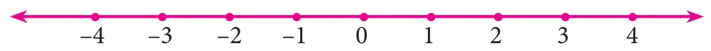
Fig. 2.3
We use \(\mathbb{Z}\) to denote the set of all Integers.
When you look at the figures (Fig. 2.2 and 2.3) above, you are sure to get amused by the gap between any pair of consecutive integers. Could there be some numbers in between?
You have come across fractions already. How will you mark the point that shows \(\frac{1}{2}\) on \(\mathbb{Z}\)? It is just midway between 0 and 1. In the same way, you can plot \(\frac{1}{3}\), \(\frac{1}{4}\), \(\frac{1}{5}\), \(2\frac{3}{4}\) ... etc. These are all fractions of the form \(\frac{a}{b}\) where \(a\) and \(b\) are integers with one restriction that \(b \ne 0\). (Why?) If a fraction is in decimal form, even then the setting is same.
Because of the connection between fractions and ratios of lengths, we name them as Rational numbers. Here is a rough picture of the situation:
Fig. 2.4
A rational number is a fraction indicating the quotient of two integers, excluding division by zero.
Since a fraction can have many equivalent fractions , there are many possible forms for the same rational number. Thus \(\frac{1}{3}\), \(\frac{2}{6}\), \(\frac{8}{24}\) all these denote the same rational number.
2.2.1 Denseness Property of Rational Numbers
Consider \(a, b\) where \(a > b\) and their AM(Arithmetic Mean) given by \(\frac{a + b}{2}\). Is this AM a rational number? Let us see. If \(a = \frac{p}{q}\) (\(p, q\) integers and \(q \neq 0\)); \(b = \frac{r}{s}\) (\(r, s\) integers and \(s \neq 0\)), then \(\frac{a + b}{2} = \frac{\frac{p}{q} + \frac{r}{s}}{2} = \frac{ps + qr}{2qs}\) which is a rational number.
We have to show that this rational number lies between \(a\) and \(b\). \(a - \left(\frac{a+b}{2}\right) = \frac{2a - a - b}{2} = \frac{a-b}{2}\) which is \(> 0\) since \(a > b\).
From (1) and (2) we see that \(a > \left(\frac{a+b}{2}\right) > b\), which can be visualized as follows:
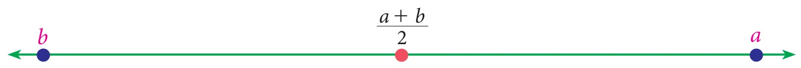
Fig. 2.5
Thus, for any two rational numbers, their average/mid point is rational. Proceeding similarly, we can generate infinitely many rational numbers.
Find any two rational numbers between \(\frac{1}{2}\) and \(\frac{2}{3}\).
Solution 1
A rational number between \(\frac{1}{2}\) and \(\frac{2}{3} = \frac{1}{2}\left(\frac{1}{2} + \frac{2}{3}\right) = \frac{1}{2}\left(\frac{3 + 4}{6}\right) = \frac{1}{2}\left(\frac{7}{6}\right) = \frac{7}{12}\)
A rational number between \(\frac{1}{2}\) and \(\frac{7}{12} = \frac{1}{2}\left(\frac{1}{2} + \frac{7}{12}\right) = \frac{1}{2}\left(\frac{6 + 7}{12}\right) = \frac{1}{2}\left(\frac{13}{12}\right) = \frac{13}{24}\)
Hence two rational numbers between \(\frac{1}{2}\) and \(\frac{2}{3}\) are \(\frac{7}{12}\) and \(\frac{13}{24}\) (of course, there are many more!)
There is an interesting result that could help you to write instantly rational numbers between any two given rational numbers.
Let us take the same example: Find any two rational numbers between \(\frac{1}{2}\) and \(\frac{2}{3}\)
Any more new methods to solve? Yes, if decimals are your favourites, then the above example can be given an alternate solution as follows:
\(\frac{1}{2} = 0.5\) and \(\frac{2}{3} = 0.66...\)
Hence rational numbers between \(\frac{1}{2}\) and \(\frac{2}{3}\) can be listed as 0.51, 0.57, 0.58, ...
Solution 4
There is one more way to solve some problems. For example, to find four rational numbers between \(\frac{4}{9}\) and \(\frac{3}{5}\), note that the LCM of 9 and 5 is 45; so we can write \(\frac{4}{9} = \frac{20}{45}\) and \(\frac{3}{5} = \frac{27}{45}\). Therefore, four rational numbers between \(\frac{4}{9}\) and \(\frac{3}{5}\) are \(\frac{21}{45}\), \(\frac{22}{45}\), \(\frac{23}{45}\), \(\frac{24}{45}\), ...
Exercise 2.1
Which arrow best shows the position of \(\frac{11}{3}\) on the number line?
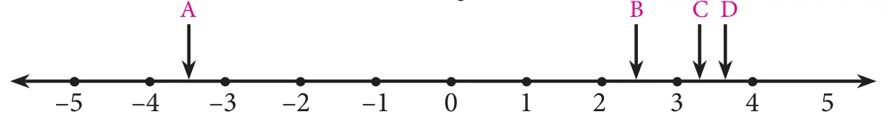
Find any three rational numbers between \(\frac{-7}{11}\) and \(\frac{2}{11}\).
Find any five rational numbers between (i) \(\frac{1}{4}\) and \(\frac{1}{5}\) (ii) 0.1 and 0.11 (iii) \(-1\) and \(-2\)
2.3 Irrational Numbers
Fig.2.6
You know that each rational number is assigned to a point on the number line and learnt about the denseness property of the rational numbers. Does it mean that the line is entirely filled with the rational numbers and there are no more numbers on the number line? Let us explore.
Consider an isosceles right-angled triangle whose base and height are each 1 unit long. Using Pythagoras theorem, the hypotenuse can be seen having a length \(\sqrt{1^2 + 1^2} = \sqrt{2}\) (see Fig. 2.6). Greeks found that this \(\sqrt{2}\) is neither a whole number nor an ordinary fraction. The belief of relationship between points on the number line and all numbers was shattered! \(\sqrt{2}\) was called an irrational number.
An irrational number is a number that cannot be expressed as an ordinary ratio of two integers.
Examples
Apart from \(\sqrt{2}\), one can produce a number of examples for such irrational numbers. Here are a few: \(\sqrt{5}, \sqrt{7}, 2\sqrt{3}, \ldots\)
\(\pi\), the ratio of the circumference of a circle to the diameter of that same circle, is another example for an irrational number.
\(e\), also known as Euler's number, is another common irrational number.
GOLDEN RATIO (1:1.6)
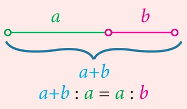
The Golden Ratio has been heralded as the most beautiful ratio in art and architecture.
Take a line segment and divide it into two smaller segments such that the ratio of the whole line segment \((a+b)\) to segment \(a\) is the same as the ratio of segment \(a\) to the segment \(b\).
This gives the proportion \(\frac{a+b}{a} = \frac{a}{b}\)
Notice that 'a' is the geometric mean of \(a+b\) and \(b\).
The golden ratio, also known as golden mean, or golden section, is a number often stumbled upon when taking the ratios of distances in simple geometric figures such as the pentagon, the pentagram, decagon and dodecahedron, etc., it is an irrational number.
2.3.1 Irrational Numbers on the Number Line
Where are the points on the number line that correspond to the irrational numbers? As an example, let us locate \(\sqrt{2}\) on the number line. This is easy.
Remember that \(\sqrt{2}\) is the length of the diagonal of the square whose side is 1 unit (How?)Simply construct a square and transfer the length of one of its diagonals to our number line. (see Fig.2.7).
Fig.2.7
We draw a circle with centre at 0 on the number line,with a radius equal to that of diagonal of the square. This circle cuts the number line in two points, locating \(\sqrt{2}\) on the right of 0 and \(-\sqrt{2}\) on its left. (You wanted to locate \(\sqrt{2}\); you have also got a bonus in \(-\sqrt{2}\))
Squares on grid sheets can be used to produce irrational lengths.
Here are a few examples :
You started with Natural numbers and extended it to rational numbers and then irrational numbers. You may wonder if further extension on the number line waits for us. Fortunately it stops and you can learn about it in higher classes.
Representation of a Rational number as terminating and non terminating decimal helps us to understand irrational numbers. Let us see the decimal expansion of rational numbers.
2.3.2 Decimal Representation of a Rational Number
If you have a rational number written as a fraction, you get the decimal representation by long division. Study the following examples where the remainder is always zero.
Consider the examples,
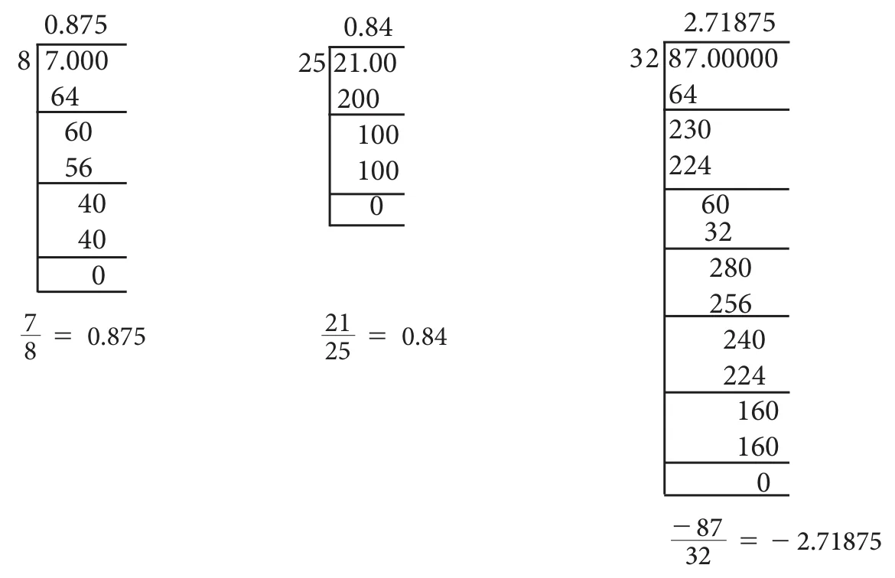
Note
These show that the process could lead to a decimal with finite number of decimal places. They are called terminating decimals.
Can the decimal representation of a rational number lead to forms of decimals that do not terminate? The following examples (with non-zero remainder) throw some light on this point.
Example 2.2
Represent the following as decimal form (i) \(\frac{-4}{11}\) (ii) \(\frac{11}{75}\)
Solution
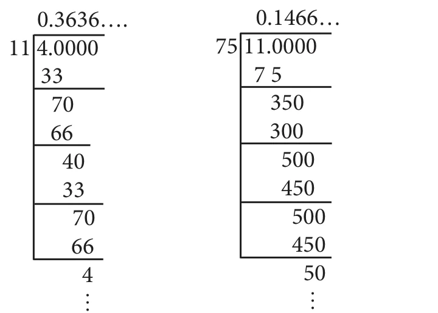
Thus we see that, \(\frac{-4}{11} = -0.\overline{36}\) \(\frac{11}{75} = 0.14\overline{6}\)
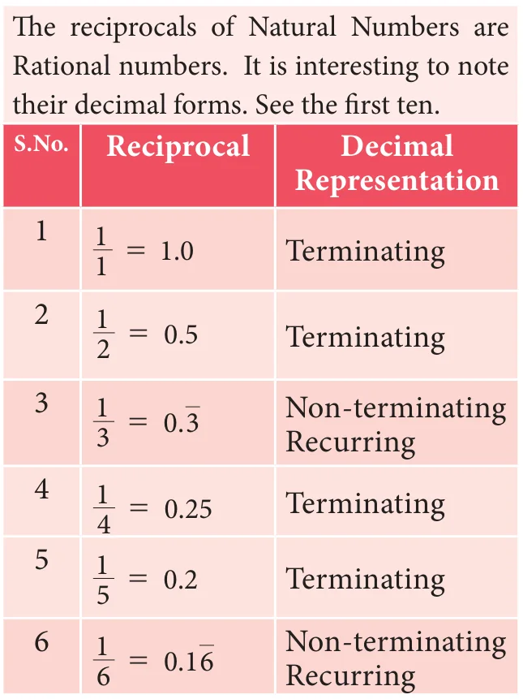
A rational number can be expressed by
either a terminating
or a non-terminating and recurring (repeating) decimal expansion.
The converse of this statement is also true. That is, if the decimal expansion of a number is terminating or non-terminating and recurring, then the number is a rational number.
Note
In this case the decimal expansion does not terminate!
The remainders repeat again and again! We get non-terminating but recurring block of digits.
2.3.3 Period of Decimal
In the decimal expansion of the rational numbers, the number of repeating decimals is called the length of the period of decimals.
For example,
(i) \(\frac{25}{7} = 3.\overline{571428}\) has the length of the period of decimal = 6
(ii) \(\frac{27}{110} = 0.2\overline{45}\) has the length of the period of decimal = 2
Example 2.3
Express the rational number \(\frac{1}{27}\) in recurring decimal form by using the recurring decimal expansion of \(\frac{1}{3}\). Hence write \(\frac{59}{27}\) in recurring decimal form.
\(= \frac{2945}{1000}\) or \(\frac{589}{200}\) which is required
(In the above, is it possible to write directly \(2.945 = \frac{2945}{1000}\)?)
Example 2.4
Convert the following decimal numbers in the form of \(\frac{p}{q}\), where \(p\) and \(q\) are integers and \(q \neq 0\): (i) 0.35 (ii) 2.176 (iii) \(-0.0028\)
Solution
(i) \(0.35 = \frac{35}{100} = \frac{7}{20}\)
(ii) \(2.176 = \frac{2176}{1000} = \frac{272}{125}\)
2.3.5 Conversion of Non-terminating and recurring decimals into Rational Numbers
It was very easy to handle a terminating decimal. When we come across a decimal such as 2.4, we get rid of the decimal point, by just divide it by 10.
Thus \(2.4 = \frac{24}{10}\), which is simplified as \(\frac{12}{5}\). But, when we have a decimal such as \(2.\overline{4}\), the problem is that we have infinite number of 4s and hence will need infinite number of 0s in the denominator. For example,
How tough it is to have infinite 4's and work with them. We need to get rid of the infinite sequence in some way. The good thing about the infinite sequence is that even if we pull away one , two or more 4 out of it, the sequence still remains infinite.
Let \(x = 2.\overline{4}\) ...(1)
Then, \(10x = 24.\overline{4}\) ...(2) [When you multiply by 10, the decimal moves one place to the right but you still have infinite 4s left over).
Subtract the first equation from the second to get,
\(9x = 24.\overline{4} - 2.\overline{4} = 22\) (Infinite 4s subtract out the infinite 4s and the left out is \(24 - 2 = 22\))
\(x = \frac{22}{9}\), the required value.
We use the same exact logic to convert any number with a non terminating repeating part into a fraction.
Example 2.5
Convert the following decimal numbers in the form of \(\frac{p}{q}\) \((p, q \in Z \text{ and } q \neq 0)\).
(i) \(0.\overline{3}\) (ii) \(2.\overline{124}\) (iii) \(0.4\overline{5}\) (iv) \(0.5\overline{68}\)
Solution
(i) Let \(x = 0.\overline{3} = 0.3333\ldots\) (1)
(Here period of decimal is 1, multiply equation (1) by 10)
\(10x = 3.3333\ldots\) (2)
\((2) - (1)\): \(9x = 3\) or \(x = \frac{1}{3}\)
(ii) Let \(x = 2.\overline{124} = 2.124124124\ldots\) (1)
(Here period of decimal is 3, multiply equation (1) by 1000.)
(iii) Let \(x = 0.4\overline{5} = 0.45555\ldots\) (1)
(Here the repeating decimal digit is 5, which is the second digit after the decimal point, multiply equation (1) by 10)
\(10x = 4.5555\ldots\) (2)
(Now period of decimal is 1, multiply equation (2) by 10)
\(100x = 45.5555\ldots\) (3)
\((3) - (2)\): \(90x = 41\) or \(x = \frac{41}{90}\)
(iv) Let \(x = 0.5\overline{68} = 0.5686868\ldots\) (1)
(Here the repeating decimal digit is 68, which is the second digit after the decimal point, so multiply equation (1) by 10)
\(10x = 5.686868\ldots\) (2)
(Now period of decimal is 2, multiply equation (2) by 100)
\(1000x = 568.686868\ldots\) (3)
\((3) - (2)\): \(990x = 563\) or \(x = \frac{563}{990}\).
Note
To determine whether the decimal form of a rational number will terminate or non - terminate, we can make use of the following rule
If a rational number \(\frac{p}{q}\), \(q \neq 0\) can be expressed in the form \(\frac{p}{2^m \times 5^n}\), where \(p \in \mathbb{Z}\) and \(m, n \in \mathbb{W}\), then rational number will have a terminating decimal expansion. Otherwise, the rational number will have a non- terminating and recurring decimal expansion
Example 2.6
Without actual division, classify the decimal expansion of the following numbers as terminating or non – terminating and recurring.
(i) \(\frac{13}{64}\) (ii) \(\frac{-71}{125}\) (iii) \(\frac{43}{375}\) (iv) \(\frac{31}{400}\)
Solution
(a) \(\frac{13}{64} = \frac{13}{2^6}\), So \(\frac{13}{64}\) has a terminating decimal expansion.
(b) \(\frac{-71}{125} = \frac{-71}{5^3}\), So \(\frac{-71}{125}\) has a terminating decimal expansion.
(c) \(\frac{43}{375} = \frac{43}{3^1 \times 5^3}\), So \(\frac{43}{375}\) has a non – terminating recurring decimal expansion.
(d) \(\frac{31}{400} = \frac{31}{2^4 \times 5^2}\), So \(\frac{31}{400}\) has a terminating decimal expansion.
Example 2.7
Verify that \(1 = 0.\overline{9}\)
Solution
Let \(x = 0.\overline{9} = 0.99999\ldots\) (1)
(Multiply equation (1) by 10)
\(10x = 9.99999\ldots\) (2)
Subtract (1) from (2)
\(9x = 9\) or \(x = 1\)
Thus, \(0.\overline{9} = 1\)
\(1 = 0.9999\ldots\)
\(7 = 6.9999\ldots\)
\(3.7 = 3.6999\ldots\)
The pattern suggests that any terminating decimal can be represented as a non-terminating and recurring decimal expansion with an endless block of 9's.
Exercise 2.2
Express the following rational numbers into decimal and state the kind of decimal expansion.
(i) \(\frac{2}{7}\) (ii) \(-5\frac{3}{11}\) (iii) \(\frac{22}{3}\) (iv) \(\frac{327}{200}\)
Express \(\frac{1}{13}\) in decimal form. Find the length of the period of decimals.
Express the rational number \(\frac{1}{33}\) in recurring decimal form by using the recurring decimal expansion of \(\frac{1}{11}\). Hence write \(\frac{71}{33}\) in recurring decimal form.
Express the following decimal expression into rational numbers.
(i) \(0.\overline{24}\) (ii) \(2.\overline{327}\) (iii) \(-5.132\)
Without actual division, find which of the following rational numbers have terminating decimal expansion.
(i) \(\frac{7}{128}\) (ii) \(\frac{21}{15}\) (iii) \(4\frac{9}{35}\) (iv) \(\frac{219}{2200}\)
2.3.6 Decimal Representation to Identify Irrational Numbers
It can be shown that irrational numbers, when expressed as decimal numbers, do not terminate nor do they repeat. For example, the decimal representation of the number \(\pi\) starts with 3.14159265358979..., but no finite number of digits can represent \(\pi\) exactly, nor does it repeat.
Consider the following decimal expansions:
(i) \(0.1011001110001111\ldots\) (ii) \(3.012012120121212\ldots\)
Are the above numbers terminating (or) recurring and non- terminating? No… They are neither terminating, nor non–terminating and recurring. Hence they are not rational numbers. They cannot be written in the form of \(\frac{p}{q}\), where \(p, q \in \mathbb{Z}\) and \(q \neq 0\). They are irrational numbers.
Thus, by division method, \(\sqrt{3} = 1.7320508\ldots\)
It is found that the square root of every positive non-perfect square number is an irrational number. \(\sqrt{2}, \sqrt{3}, \sqrt{5}, \sqrt{6}, \sqrt{7}, \ldots\) are all irrational numbers.
\(\sqrt{10}\) is an irrational number ( since 10 is not a perfect square number).
\(\sqrt{49} = 7 = \frac{7}{1}\), a rational number(since 49 is a perfect square number).
\(0.025\) is a rational number (since it is a terminating decimal).
\(0.7\overline{6} = 0.7666\ldots\) is a rational number ( since it is a non – terminating and recurring decimal expansion).
\(2.505500555\ldots\) is an irrational number ( since it is a non – terminating and non–recurring decimal).
\(\frac{\sqrt{2}}{2} = \frac{\sqrt{2}}{\sqrt{2 \times \sqrt{2}}} = \frac{1}{\sqrt{2}}\) is an irrational number ( since 2 is not a perfect square number).
Note
The above example(vi) it is not to be misunderstood as \(\frac{p}{q}\) form, because both p and q must be integers and not an irrational number.
Example 2.10
Find any 3 irrational numbers between 0.12 and 0.13 .
Solution
Three irrational numbers between 0.12 and 0.13 are
For example, when you consider the rational number 4 and the irrational number \(\sqrt{5}\), then \(4 + \sqrt{5}\), \(4 - \sqrt{5}\), \(4\sqrt{5}\), \(\frac{4}{\sqrt{5}}\), \(\frac{\sqrt{5}}{4}\) ... are all irrational numbers.
Example 2.11
Give any two rational numbers lying between \(0.5151151115\ldots\) and \(0.5353353335\ldots\)
Solution
Two rational numbers between the given two irrational numbers are 0.5152 and 0.5352
Example 2.12
Find whether \(x\) and \(y\) are rational or irrational in the following.
\(a = 2 + \sqrt{3},\ b = 2 - \sqrt{3};\ x = a + b,\ y = a - b\)
\(a = \sqrt{2} + 7,\ b = \sqrt{2} - 7;\ x = a + b,\ y = a - b\)
\(a = \sqrt{75},\ b = \sqrt{3};\ x = ab,\ y = \frac{a}{b}\)
\(a = \sqrt{18},\ b = \sqrt{3};\ x = ab,\ y = \frac{a}{b}\)
Note
From these examples, it is clear that the sum , difference, product, quotient of any two irrational numbers could be rational or irrational.
Solution
Given that \(a = 2 + \sqrt{3}, b = 2 - \sqrt{3}\)
\(x = a + b = (2 + \sqrt{3}) + (2 - \sqrt{3}) = 4\), a rational number.
\(y = a - b = (2 + \sqrt{3}) - (2 - \sqrt{3}) = 2\sqrt{3}\), an irrational number.
Given that \(a = \sqrt{2} + 7, b = \sqrt{2} - 7\)
\(x = a + b = (\sqrt{2} + 7) + (\sqrt{2} - 7) = 2\sqrt{2}\), an irrational number.
\(y = a - b = (\sqrt{2} + 7) - (\sqrt{2} - 7) = 14\), a rational number.
Mark a point \(C\) on this line such that \(BC = 1\) cm.
Find the midpoint of \(AC\) by drawing perpendicular bisector of \(AC\) and let it be \(O\)
With \(O\) as center and \(OC = OA\) as radius, draw a semicircle.
Draw a line \(BD\), which is perpendicular to \(AB\) at \(B\).
With \(B\) as centre \(BD\) as radius draw an arc which intersects the line \(AC\) at \(E\).
Now \(BD = \sqrt{9.3}\), which can be marked in the number line as the value of \(BE = BD = \sqrt{9.3}\)
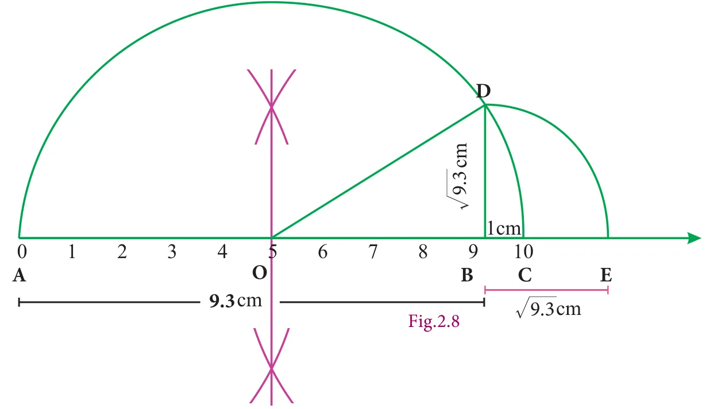
Exercise 2.3
Represent the following irrational numbers on the number line.
(i) \(\sqrt{3}\) (ii) \(\sqrt{4.7}\) (iii) \(\sqrt{6.5}\)
Find any two irrational numbers between
(i) 0.3010011000111... and 0.3020020002... (ii) \(\frac{6}{7}\) and \(\frac{12}{13}\) (iii) \(\sqrt{2}\) and \(\sqrt{3}\)
Find any two rational numbers between 2.2360679... and 2.236505500....
2.4 Real Numbers
The real numbers consist of all the rational numbers and all the irrational numbers. Real numbers can be thought of as points on an infinitely long number line called the real line, where the points corresponding to integers are equally spaced.
Any real number can be determined by a possibly infinite decimal representation, (as we have already seen decimal representation of the rational numbers and the irrational numbers).
2.4.1 The Real Number Line
Visualisation through Successive Magnification.
We can visualise the representation of numbers on the number line, as if we glimpse through a magnifying glass.
Example 2.14
Represent 4.863 on the number line.
Solution
4.863 lies between 4 and 5(see Fig. 2.9)
Divide the distance between 4 and 5 into 10 equal intervals.
Mark the point 4.8 which is second from the left of 5 and eighth from the right of 4
4.86 lies between 4.8 and 4.9. Divide the distance into 10 equal intervals.
Mark the point 4.86 which is fourth from the left of 4.9 and sixth from the right of 4.8
4.863 lies between 4.86 and 4.87. Divide the distance into 10 equal intervals.
Mark point 4.863 which is seventh from the left of 4.87 and third from the right of 4.86.
Fig. 2.9
Example 2.15
Represent \(3.\overline{45}\) on the number line upto 4 decimal places.
Solution
\(3.\overline{45} = 3.45454545\ldots\)
\(= 3.4545\) ( correct to 4 decimal places).
The number lies between 3 and 4
Fig. 2.10
Exercise 2.4; 2.5 Radical Notation
Exercise 2.4
Represent the following numbers on the number line.
Let \(n\) be a positive integer and \(r\) be a real number. If \(r^{n} = x\), then \(r\) is called the \(n^{\text{th}}\) root of \(x\) and we write
\(\sqrt[n]{x} = r\)
The symbol \(\sqrt[n]{\;}\) (read as \(n^{\text{th}}\) root) is called a radical; \(n\) is the index of the radical (hitherto we named it as exponent); and \(x\) is called the radicand.
Note
It is worth spending some time on the concepts of the 'square root' and the 'cube root', for better understanding of surds.
What happens when \(n = 2\)? Then we get \(r^{2} = x\), so that \(r\) is \(\sqrt[2]{x}\), our good old friend, the square root of \(x\). Thus \(\sqrt[2]{16}\) is written as \(\sqrt{16}\), and when \(n = 3\), we get the cube root of \(x\), namely \(\sqrt[3]{x}\). For example, \(\sqrt[3]{8}\) is cube root of 8, giving 2. (Is not \(8 = 2^{3}\)?)
How many square roots are there for 4? Since \((+2) \times (+2) = 4\) and also \((-2) \times (-2) = 4\), we can say that both \(+2\) and \(-2\) are square roots of 4. But it is incorrect to write that \(\sqrt{4} = \pm 2\). This is because, when \(n\) is even, it is an accepted convention to reserve the symbol \(\sqrt[n]{x}\) for the positive \(n^{\text{th}}\) root and to denote the negative \(n^{\text{th}}\) root by \(-\sqrt[n]{x}\). Therefore we need to write \(\sqrt{4} = 2\) and \(-\sqrt{4} = -2\).
When \(n\) is odd, for any value of \(x\), there is exactly one real \(n^{\text{th}}\) root. For example, \(\sqrt[3]{8} = 2\) and \(\sqrt[5]{-32} = -2\).
2.5.1 Fractional Index
Consider again results of the form \(r = \sqrt[n]{x}\).
In the adjacent notation, the index of the radical (namely \(n\) which is 3 here) tells you how many times the answer (that is 4) must be multiplied with itself to yield the radicand. To express the powers and roots, there is one more way of representation. It involves the use of fractional indices.
We write \(\sqrt[n]{x}\) as \(x^{\frac{1}{n}}\).
With this notation, for example
\(\sqrt[3]{64}\) is \(64^{\frac{1}{3}}\) and \(\sqrt{25}\) is \(25^{\frac{1}{2}}\).
Observe in the following table just some representative patterns arising out of this new acquaintance:
Example 2.16
Express the following in the form \(2^{n}\):
(i) 8 (ii) 32 (iii) \(\frac{1}{4}\) (iv) \(\sqrt{2}\) (v) \(\sqrt{8}\).
(v) \(\sqrt{8} = \sqrt{2} \times \sqrt{2} \times \sqrt{2} = \left(2^{\frac{1}{2}}\right)^{3}\) which may be written as \(2^{\frac{3}{2}}\)
Meaning of \(x^{\frac{m}{n}}\), (where \(m\) and \(n\) are Positive Integers)
We interpret \(x^{\frac{m}{n}}\) either as the \(n^{\text{th}}\) root of the \(m^{\text{th}}\) power of \(x\) or as the \(m^{\text{th}}\) power of the \(n^{\text{th}}\) root of \(x\).
In symbols, \(x^{\frac{m}{n}} = \left(x^{m}\right)^{\frac{1}{n}}\) or \(\left(x^{\frac{1}{n}}\right)^{m} = \sqrt[n]{x^{m}}\) or \(\left(\sqrt[n]{x}\right)^{m}\)
Example 2.17
Find the value of (i) \(81^{\frac{5}{4}}\) (ii) \(64^{\frac{-2}{3}}\)
(i) 625 (ii) \(\frac{1}{5}\) (iii) \(\sqrt{5}\) (iv) \(\sqrt{125}\)
Write the following in the form of \(4^{n}\):
(i) 16 (ii) 8 (iii) 32
Find the value of
(i) \((49)^{\frac{1}{2}}\) (ii) \((243)^{\frac{2}{5}}\) (iii) \(9^{\frac{-3}{2}}\) (vi) \(\left(\dfrac{64}{125}\right)^{\frac{-2}{3}}\)
Use a fractional index to write:
(i) \(\sqrt{5}\) (ii) \(\sqrt[2]{7}\) (iii) \(\left(\sqrt[3]{49}\right)^{5}\) (iv) \(\left(\dfrac{1}{\sqrt[3]{100}}\right)^{7}\)
Find the \(5^{\text{th}}\) root of
(i) 32 (ii) 243 (iii) 100000 (iv) \(\frac{1024}{3125}\)
2.6 Surds
Having familiarized with the concept of Real numbers, representing them on the number line and manipulating them, we now learn about surds, a distinctive way of representing certain approximate values.
Can you simplify \(\sqrt{4}\) and remove the \(\sqrt{\phantom{x}}\) symbol? Yes; one can replace \(\sqrt{4}\) by the number 2. How about \(\sqrt{\frac{1}{9}}\)? It is easy; without \(\sqrt{\phantom{x}}\) symbol, the answer is \(\frac{1}{3}\). What about \(\sqrt{0.01}\)?. This is also easy and the solution is 0.1
In the cases of \(\sqrt{4}\), \(\sqrt{\frac{1}{9}}\) and \(\sqrt{0.01}\), you can resolve to get a solution and make sure that the symbol \(\sqrt{\phantom{x}}\) is not seen in your solution. Is this possible at all times?
Consider \(\sqrt{18}\). Can you evaluate it and also remove the radical symbol? Surds are unresolved radicals, such as square root of 2, cube root of 5, etc.
They are irrational roots of equations with rational coefficients.
A surd is an irrational root of a rational number. \(\sqrt[n]{a}\) is a surd, provided \(n \in \mathbb{N}\), \(n > 1\), ‘\(a\)’ is rational.
Examples: \(\sqrt{2}\) is a surd. It is an irrational root of the equation \(x^2 = 2\). (Note that \(x^2 - 2 = 0\) is an equation with rational coefficients. \(\sqrt{2}\) is irrational and may be shown as 1.4142135… a non-recurring, non-terminating decimal).
\(\sqrt[3]{3}\) (which is same as \(3^{\frac{1}{3}}\)) is a surd since it is an irrational root of the equation \(x^3 - 3 = 0\). (\(\sqrt{3}\) is irrational and may be shown as 1.7320508… a non-recurring, non-terminating decimal).
You will learn solving (quadratic) equations like \(x^2 - 6x + 7 = 0\) in your next class. This is an equation with rational coefficients and one of its roots is \(3 + \sqrt{2}\), which is a surd.
Is \(\sqrt{\frac{1}{25}}\) a surd? No; it can be simplified and written as rational number \(\frac{1}{5}\). How about \(\sqrt[4]{\frac{16}{81}}\)? It is not a surd because it can be simplified as \(\frac{2}{3}\).
The famous irrational number \(\pi\) is not a surd! Though it is irrational, it cannot be expressed as a rational number under the \(\sqrt{\phantom{x}}\) symbol. (In other words, it is not a root of any equation with rational co-efficients).
Why surds are important? For calculation purposes we assume approximate value as \(\sqrt{2} = 1.414\), \(\sqrt{3} = 1.732\) and so on.
Hence, we observe that \(\sqrt{2}\) and \(\sqrt{3}\) represent the more accurate and precise values than their assumed values. Engineers and scientists need more accurate values while constructing the bridges and for architectural works. Thus it becomes essential to learn surds.
(ii) \(\sqrt{7}\), \(\sqrt{48}\), \(\sqrt[3]{36}\), \(\sqrt{5} + \sqrt{3}\), \(\sqrt{1.21}\), \(\sqrt{\frac{1}{10}}\)
Are all surds irrational numbers? - Discuss with your answer.
Are all irrational numbers surds? Verify with some examples.
2.6.1 Order of a Surd
The order of a surd is the index of the root to be extracted. The order of the surd \(\sqrt[n]{a}\) is \(n\). What is the order of \(\sqrt[5]{99}\)? It is 5.
Surds can be classified in different ways:
(i) Surds of same order : Surds of same order are surds for which the index of the root to be extracted is same. (They are also called equiradical surds).
For example, \(\sqrt{x}\), \(a^{\frac{3}{2}}\), \(\sqrt[2]{m}\) are all 2nd order (called quadratic) surds.
\(\sqrt[3]{5}\), \(\sqrt[3]{(x-2)}\), \((ab)^{\frac{1}{3}}\) are all 3rd order (called cubic) surds.
\(\sqrt{3}\), \(\sqrt[3]{10}\), \(\sqrt[4]{6}\) and \(8^{\frac{2}{5}}\) are surds of different order.
(ii) Simplest form of a surd : A surd is said to be in simplest form, when it is expressed as the product of a rational factor and an irrational factor. In this form the surd has
the smallest possible index of the radical sign.
no fraction under the radical sign.
no factor is of the form \(a^n\), where \(a\) is a positive integer under index \(n\).
Example 2.18
Can you reduce the following numbers to surds of same order :
(i) \(\sqrt{3}\) (ii) \(\sqrt[4]{3}\) (iii) \(\sqrt[3]{3}\)
(iii) Pure and Mixed Surds : A surd is called a pure surd if its coefficient in its simplest form is 1. For example, \(\sqrt{3}\), \(\sqrt[3]{6}\), \(\sqrt[4]{7}\), \(\sqrt[5]{49}\) are pure surds. A surd is called a mixed surd if its co-efficient in its simplest form is other than 1. For example, \(5\sqrt{3}\), \(2\sqrt[4]{5}\), \(3\sqrt[4]{6}\) are mixed surds.
(iv) Simple and Compound Surds : A surd with a single term is said to be a simple surd. For example, \(\sqrt{3}\), \(2\sqrt{5}\) are simple surds. The algebraic sum of two (or more) surds is called a compound surd. For example, \(\sqrt{5} + 3\sqrt{2}\), \(\sqrt{3} - 2\sqrt{7}\), \(\sqrt{5} - 7\sqrt{2} + 6\sqrt{3}\) are compound surds.
(v) Binomial Surd : A binomial surd is an algebraic sum (or difference) of 2 terms both of which could be surds or one could be a rational number and another a surd. For example, \(\frac{1}{2} - \sqrt{19}\), \(5 + 3\sqrt{2}\), \(\sqrt{3} - 2\sqrt{7}\) are binomial surds.
Example 2.20
Arrange in ascending order: \(\sqrt[3]{2}\), \(\sqrt[2]{4}\), \(\sqrt[4]{3}\)
Solution
The order of the surds \(\sqrt[3]{2}\), \(\sqrt[2]{4}\) and \(\sqrt[4]{3}\) are 3, 2, 4.
We shall now discuss certain problems which require the laws of radicals for simplifying.
Example 2.21
Express each of the following surds in its simplest form (i) \(\sqrt[3]{108}\) (ii) \(\sqrt[3]{(1024)^{-2}}\) and find its order, radicand and coefficient.
Solution
(i) \(\sqrt[3]{108} = \sqrt[3]{27 \times 4}\)
\(= \sqrt[3]{3^3 \times 4}\)
\(= \sqrt[3]{3^3} \times \sqrt[3]{4}\) (Laws of radicals - ii)
order = 3; radicand \(= \frac{1}{4}\) ; coefficient \(= \frac{1}{64}\)
(These results can also be obtained using index notation).
Note
Consider the numbers 5 and 6. As \(5 = \sqrt{25}\) and \(6 = \sqrt{36}\)
Therefore, \(\sqrt{26}\), \(\sqrt{27}\), \(\sqrt{28}\), \(\sqrt{29}\), \(\sqrt{30}\), \(\sqrt{31}\), \(\sqrt{32}\), \(\sqrt{33}\), \(\sqrt{34}\), and \(\sqrt{35}\) are surds between 5 and 6.
Therefore, \(\sqrt{17}\), \(\sqrt{15}\), \(\sqrt{14}\), \(\sqrt{13}\) are surds between \(2\sqrt{3}\) and \(3\sqrt{2}\).
2.6.3 Four Basic Operations on Surds
(i) Addition and subtraction of surds : Like surds can be added and subtracted using the following rules:
\(a\sqrt[n]{b} \pm c\sqrt[n]{b} = (a \pm c)\sqrt[n]{b}\), where \(b > 0\).
Example 2.22
(i) Add \(3\sqrt{7}\) and \(5\sqrt{7}\). Check whether the sum is rational or irrational. (ii) Subtract \(4\sqrt{5}\) from \(7\sqrt{5}\). Is the answer rational or irrational?
Solution
(i) \(3\sqrt{7} + 5\sqrt{7} = (3 + 5)\sqrt{7} = 8\sqrt{7}\). The answer is irrational.
(ii) \(7\sqrt{5} - 4\sqrt{5} = (7 - 4)\sqrt{5} = 3\sqrt{5}\). The answer is irrational.
If \(\sqrt{2} = 1.414\), \(\sqrt{3} = 1.732\), \(\sqrt{5} = 2.236\), \(\sqrt{10} = 3.162\), then find the values of the following correct to 3 places of decimals.
(i) \(\sqrt{40} - \sqrt{20}\) (ii) \(\sqrt{300} + \sqrt{90} - \sqrt{8}\)
Arrange surds in descending order : (i) \(\sqrt[3]{5}, \sqrt[9]{4}, \sqrt[6]{3}\) (ii) \(\sqrt[2]{\sqrt[3]{5}}, \sqrt[3]{\sqrt[4]{7}}, \sqrt{\sqrt{3}}\)
Can you get a pure surd when you find
(i) the sum of two surds (ii) the difference of two surds
(iii) the product of two surds (iv) the quotient of two surds
Justify each answer with an example.
Can you get a rational number when you compute
(i) the sum of two surds (ii) the difference of two surds
(iii) the product of two surds (iv) the quotient of two surds
Justify each answer with an example.
2.7 Rationalisation of Surds
Rationalising factor is a term with which a term is multiplied or divided to make the whole term rational.
Examples:
\(\sqrt{3}\) is a rationalising factor of \(\sqrt{3}\) (since \(\sqrt{3} \times \sqrt{3} =\) the rational number 3)
\(\sqrt[7]{5^4}\) is a rationalising factor of \(\sqrt[7]{5^3}\) (since their product \(= \sqrt[7]{5^7} = 5\), a rational)
Thinking Corner
In the example (i) above, can \(\sqrt{12}\) also be a rationalising factor? Can you think of any other number as a rationalising factor for \(\sqrt{3}\)?
Can you think of any other number as a rationalising factor for \(\sqrt[7]{5^3}\) in example (ii)?
If there can be many rationalising factors for an expression containing a surd, is there any advantage in choosing the smallest among them for manipulation?
Progress Check
Identify a rationalising factor for each one of the following surds and verify the same in each case:
(i) \(\sqrt{18}\) (ii) \(5\sqrt{12}\) (iii) \(\sqrt[3]{49}\) (iv) \(\frac{1}{\sqrt{8}}\)
2.7.1 Conjugate Surds
Can you guess a rationalising factor for \(3 + \sqrt{2}\)? This surd has one rational part and one radical part. In such cases, the rationalising factor has an interesting form.
A rationalising factor for \(3 + \sqrt{2}\) is \(3 - \sqrt{2}\). You can very easily check this.
What is the rationalising factor for \(a + \sqrt{b}\) where a and b are rational numbers? Is it \(a - \sqrt{b}\)? Check it. What could be the rationalising factor for \(\sqrt{a} + \sqrt{b}\) where a and b are rational numbers? Is it \(\sqrt{a} - \sqrt{b}\)? Or, is it \(-\sqrt{a} + \sqrt{b}\)? Investigate.
Surds like \(a + \sqrt{b}\) and \(a - \sqrt{b}\) are called conjugate surds. What is the conjugate of \(\sqrt{b} + a\)? It is \(-\sqrt{b} + a\). You would have perhaps noted by now that a conjugate is usually obtained by changing the sign in front of the surd!
Example 2.27
Rationalise the denominator of (i) \(\frac{7}{\sqrt{14}}\) (ii) \(\frac{5 + \sqrt{3}}{5 - \sqrt{3}}\)
Solution
(i) Multiply both numerator and denominator by the rationalising factor \(\sqrt{14}\).
Find the value of \(a\) and \(b\) if \(\frac{\sqrt{7} - 2}{\sqrt{7} + 2} = a\sqrt{7} + b\)
If \(x = \sqrt{5} + 2\), then find the value of \(x^2 + \frac{1}{x^2}\)
Given \(\sqrt{2} = 1.414\), find the value of \(\frac{8 - 5\sqrt{2}}{3 - 2\sqrt{2}}\) (to 3 places of decimals).
2.8 Scientific Notation
Suppose you are told that the diameter of the Sun is 13,92,000 km and that of the Earth is 12,740 km, it would seem to be a daunting task to compare them. In contrast, if 13,92,000 is written as \(1.392 \times 10^6\) and 12,740 as \(1.274 \times 10^4\), one will feel comfortable. This sort of representation is known as scientific notation.
You can imagine 108 Earths could line up across the face of the sun. Scientific notation is a way of representing numbers that are too large or too small, to be conveniently written in decimal form. It allows the numbers to be easily recorded and handled.
2.8.1 Writing a Decimal Number in Scientific Notation
Here are steps to help you to represent a number in scientific form:
Move the decimal point so that there is only one non-zero digit to its left.
Count the number of digits between the old and new decimal point. This gives 'n', the power of 10.
If the decimal is shifted to the left, the exponent n is positive. If the decimal is shifted to the right, the exponent n is negative.
Expressing a number N in the form of \(N = a \times 10^n\) where \(1 \le a < 10\) and 'n' is an integer is called as Scientific Notation.
The following table of base 10 examples may make things clearer:
Let us look into few more examples.
Example 2.28
Express in scientific notation (i) 9768854 (ii) 0.04567891 (iii) 72006865.48
Solution
(i) \(9768854.0 = 9.768854 \times 10^6\)
The decimal point is to be moved six places to the left. Therefore \(n = 6\).
(ii) \(0.04567891 = 4.567891 \times 10^{-2}\)
The decimal point is to be moved two places to the right. Therefore \(n = -2\).
(iii) \(72006865.48 = 7.200686548 \times 10^7\)
The decimal point is to be moved seven places to the left. Therefore \(n = 7\).
2.8.2 Converting Scientific Notation to Decimal Form
The reverse process of converting a number in scientific notation to the decimal form is easily done when the following steps are followed:
Write the decimal number.
Move the decimal point by the number of places specified by the power of 10, to the right if positive, or to the left if negative. Add zeros if necessary.
Rewrite the number in decimal form.
Example 2.29
Write the following numbers in decimal form:
(i) \(6.34 \times 10^4\) (ii) \(2.00367 \times 10^{-5}\)
Solution
(i)V \(6.34 \times 10^4\)
\(\Rightarrow 6.3400 = 63400\)
(ii) \(2.00367 \times 10^{-5}\)
\(000002.00367\)
\(= 0.0000200367\)
2.8.3 Arithmetic of Numbers in Scientific Notation
If the indices in the scientific notation of two numbers are the same, addition (or subtraction) is easily performed.
Example 2.30
The mass of the Earth is \(5.97 \times 10^{24}\) kg and that of the Moon is \(0.073 \times 10^{24}\) kg. What is their total mass?
Solution
Total mass \(= 5.97 \times 10^{24}\) kg \(+ 0.073 \times 10^{24}\) kg
\(= (5.97 + 0.073) \times 10^{24}\) kg
\(= 6.043 \times 10^{24}\) kg
The product or quotient of numbers in scientific notation can be easily done if we make use of the laws of radicals appropriately.
The following list shows the mean distance of the planets of the solar system from the Sun. Complete the following table. Then arrange in order of magnitude starting with the distance of the planet closest to the Sun.
Planet
Decimal form (in Km)
Scientific Notation (in Km)
Jupiter
\(7.78 \times 10^{8}\)
Mercury
58000000
Mars
\(2.28 \times 10^{8}\)
Uranus
2870000000
Venus
108000000
Neptune
4500000000
Earth
\(1.5 \times 10^{8}\)
Saturn
\(1.43 \times 10^{8}\)
Exercise 2.9
Exercise 2.9
Multiple Choice Questions
If \(n\) is a natural number then \(\sqrt{n}\) is (1) always a natural number. (2) always an irrational number. (3) always a rational number (4) may be rational or irrational
Which of the following is not true?. (1) Every rational number is a real number. (2) Every integer is a rational number. (3) Every real number is an irrational number. (4) Every natural number is a whole number.
Which one of the following, regarding sum of two irrational numbers, is true? (1) always an irrational number. (2) may be a rational or an irrational number. (3) always a rational number. (4) always an integer.
Which one of the following has a terminating decimal expansion?. (1) \(\frac{5}{64}\) (2) \(\frac{8}{9}\) (3) \(\frac{14}{15}\) (4) \(\frac{1}{12}\)
Which one of the following is an irrational number (1) \(\sqrt{25}\) (2) \(\sqrt{\frac{9}{4}}\) (3) \(\frac{7}{11}\) (4) \(\pi\)
An irrational number between 2 and 2.5 is (1) \(\sqrt{11}\) (2) \(\sqrt{5}\) (3) \(\sqrt{2.5}\) (4) \(\sqrt{8}\)
The smallest rational number by which \(\frac{1}{3}\) should be multiplied so that its decimal expansion terminates with one place of decimal is (1) \(\frac{1}{10}\) (2) \(\frac{3}{10}\) (3) 3 (4) 30
If \(\frac{1}{7} = 0.\overline{142857}\) then the value of \(\frac{5}{7}\) is (1) \(0.\overline{142857}\) (2) \(0.\overline{714285}\) (3) \(0.\overline{571428}\) (4) \(0.714285\)
Find the odd one out of the following. (1) \(\sqrt{32} \times \sqrt{2}\) (2) \(\frac{\sqrt{27}}{\sqrt{3}}\) (3) \(\sqrt{72} \times \sqrt{8}\) (4) \(\frac{\sqrt{54}}{\sqrt{18}}\)
Which of the following statement is false? (1) The square root of 25 is 5 or \(-5\) (2) \(-\sqrt{25} = -5\) (3) \(\sqrt{25} = 5\) (4) \(\sqrt{25} = \pm 5\)
Which one of the following is not a rational number? (1) \(\sqrt{\frac{8}{18}}\) (2) \(\frac{7}{3}\) (3) \(\sqrt{0.01}\) (4) \(\sqrt{13}\)
When written with a rational denominator, the expression \(\frac{2\sqrt{3}}{3\sqrt{2}}\) can be simplified as (1) \(\frac{\sqrt{2}}{3}\) (2) \(\frac{\sqrt{3}}{2}\) (3) \(\frac{\sqrt{6}}{3}\) (4) \(\frac{2}{3}\)
When \(\left(2\sqrt{5} - \sqrt{2}\right)^2\) is simplified, we get (1) \(4\sqrt{5} + 2\sqrt{2}\) (2) \(22 - 4\sqrt{10}\) (3) \(8 - 4\sqrt{10}\) (4) \(2\sqrt{10} - 2\)
If \(\sqrt{9^x} = \sqrt[3]{9^2}\), then \(x = \underline{\qquad}\) (1) \(\frac{2}{3}\) (2) \(\frac{4}{3}\) (3) \(\frac{1}{3}\) (4) \(\frac{5}{3}\)
The length and breadth of a rectangular plot are \(5 \times 10^5\) and \(4 \times 10^4\) metres respectively. Its area is \(\underline{\qquad}\). (1) \(9 \times 10^1\ m^2\) (2) \(9 \times 10^9\ m^2\) (3) \(2 \times 10^{10}\ m^2\) (4) \(20 \times 10^{20}\ m^2\)
Points to Remember
Points to Remember
When the decimal expansion of \(\frac{p}{q}\), \(q \neq 0\) terminates, that is, comes to an end, the decimal is called a terminating decimal.
In the decimal expansion of \(\frac{p}{q}\), \(q \neq 0\) when the remainder is not zero, we have a repeating (recurring) block of digits in the quotient. In this case, the decimal expansion is called non-terminating and recurring.
If a rational number \(\frac{p}{q}\), \(q \neq 0\) can be expressed in the form \(\frac{p}{2^m \times 5^n}\), where \(p \in \mathbb{Z}\) and \(m, n \in \mathbb{W}\), then the rational number will have a terminating decimal. Otherwise, the rational number will have a non-terminating repeating (recurring) decimal.
A rational number can be expressed either as a terminating or a non-terminating recurring decimal.
An irrational number is a non-terminating and non-recurring decimal, i.e. it cannot be written in form \(\frac{p}{q}\), where \(p\) and \(q\) are both integers and \(q \neq 0\).
The union of all rational numbers and all irrational numbers is called the set of real numbers.
Every real number is either a rational number or an irrational number.
If a real number is not a rational number, then it must be an irrational number.
If 'a' is a positive rational number, 'n' is a positive integer and if \(\sqrt[n]{a}\) is an irrational number, then \(\sqrt[n]{a}\) is called a surd.
If 'm', 'n' are positive integers and \(a\), \(b\) are positive rational numbers, then
The process of multiplying a surd by another surd to get a rational number is called Rationalisation.
Expressing a number \(N\) in the form of \(N = a \times 10^n\) where \(1 \le a < 10\) and 'n' is an integer is called Scientific Notation.
ICT Corner-1
ICT Corner-1
Expected Result is shown in this picture
Step – 1
Open the Browser and copy and paste the Link given below (or) by typing the URL given (or) Scan the QR Code.
Step - 2
GeoGebra workbook named “Real Numbers” will open. There are several worksheets in the workbook. Open the worksheet named “Square root spiral – 1st part”
Step-3
Drag the slider named “Steps “. The construction of Square root of numbers 2,3,4,5,…. will appear step by step.
Step-4
By dragging the slider named “Unit segment” you can enlarge the diagram for more clarity. Now you can draw the same in a paper and measure the values obtained
Open the Browser type the URL Link given below (or) Scan the QR Code. GeoGebra work sheet named “Real Numbers” will open. In the work sheet there are two activities. 1. Rationalising the denominator for surds and 2. Law of exponents.
In the first activity procedure for rationalising the denominator is given. Also, example is given under. To change the values of a and b enter the value in the input box given.
Step - 2
In the second activity law of exponents is given. Also, example is given on right side. To change the value of \(m\) and \(n\) move the sliders and check the answers.
This chapter is going to be all about polynomial expressions in Algebra. These are your friends, you have already met, without being properly introduced! We will properly introduce them to you, and they are going to be your friends in whatever mathematical journey you undertake from here on.
\((a+1)^{2} = a^{2} + 2a + 1\)
Now that's a polynomial. That does not look very special, does it? We have seen lots of algebraic expressions already, so why to bother about these? There are many reasons why polynomials are interesting and important in mathematics.
For now, we will just take one example showing their use. Remember, we studied lots of arithmetic and then came to algebra, thinking of variables as unknown numbers. Actually we can now get back to numbers and try to write them in the language of algebra.
Consider a number like 5418. It is actually 5 thousand 4 hundred and eighteen. Write it as:
Now it should be clear what this is about. This is of the form \(5x^{3} + 4x^{2} + x + 8\), which is a polynomial. How does writing in this form help? We always write numbers in decimal system, and hence always \(x = 10\). Then what is the fun? Remember divisibility rules? Recall that a number is divisible by 3 only if the sum of its digits is divisible by 3. Now notice that if \(x\) divided by 3 gives 1 as remainder, then it is the same for \(x^{2}\), \(x^{3}\), etc. They all give remainder 1 when divided by 3. So you get each digit multiplied by 1, added together, which is the sum of digits. If that is divisible by 3, so is the whole number. You can check that the rule for divisibility by 9, or even divisibility by 2 or 5, can be proved similarly with great ease. Our purpose is not to prove divisibility rules but to show that representing numbers as polynomials shows us many new number patterns. In fact, many objects of study, not just numbers, can be represented as polynomials and then we can learn many things about them.
Fig. 3.1Fig. 3.2
In algebra we think of \(x^{2}\), \(5x^{2} - 3\), \(2x + 7\) etc., as functions of \(x\). We draw pictures to see how the function varies as \(x\) varies, and this is very helpful to understand the function. And now, it turns out that a good number of functions that we encounter in science, engineering, business studies, economics, and of course in mathematics, all can be approximated by polynomials, if not actually be represented as polynomials. In fact, approximating functions using polynomials is a fundamental theme in all of higher mathematics and a large number of people make a living, simply by working on this idea.
Polynomials are extensively used in biology, computer science, communication systems ... the list goes on. The given pictures (Fig. 3.1, 3.2 & 3.3) may be repsresented as a quadratic polynomial. We will not only learn what polynomials are but also how we can use them like in numbers, we add them, multiply them, divide one by another, etc.,
Fig. 3.3
Observe the given figures.
Fig. 3.4Fig. 3.5Fig. 3.6
The total area of the above 3 figures is \(4x^{2} + 2xy + y^{2}\), we call this expression as an algebraic expression. Here for different values of \(x\) and \(y\) we get different values of areas. Since the sides \(x\) and \(y\) can have different values, they are called variables. Thus, a variable is a symbol which can have various numerical values.
Variables are usually denoted by letters such as \(x, y, z\), etc. In the above algebraic expression the numbers 4, 2 are called constants. Hence the constant is a symbol, which has a fixed numeric value.
Constants
Any real number is a constant. We can form numerical expressions using constants and the four arithmetical operations.
Examples of constant are 1, 5, \(-32\), \(\frac{3}{7}\), \(-\sqrt{2}\), 8.432, 1000000 and so on.
Variables
The use of variables and constants together in expressions give us ways of representing a range of numbers, one for each value of the variable. For instance, we know the expression \(2\pi r\), it stands for the circumference of a circle of radius \(r\). As we vary \(r\), say, 1cm, 4cm, 9cm etc., we get larger and larger circles of circumference \(2\pi\), \(8\pi\), \(18\pi\) etc.
The single expression \(2\pi r\) is a short and compact description for the circumference of all these circles. We can use arithmetical operations to combine algebraic expressions and get a rich language of functions and numbers. Letters used for representing unknown real numbers called variables are \(x, y, a, b\) and so on.
Algebraic Expression
An algebraic expression is a combination of constants and variables combined together with the help of the four fundamental signs.
Any part of a term that is multiplied by the variable of the term is called the coefficient of the remaining term.
For example,
\(x^{2} + 5x - 24\) is an algebraic expression containing three terms. The variable of this expression is \(x\), coefficient of \(x^{2}\) is 1, the coefficient of \(x\) is 5 and the constant is \(-24\) (not 24).
3.2 Polynomials
A polynomial is an arithmetic expression consisting of variables and constants that involves four fundamental arithmetic operations and non-negative integer exponents of variables.
Polynomial in One Variable
An algebraic expression of the form \(p(x) = a_n x^n + a_{n-1} x^{n-1} + \ldots + a_2 x^2 + a_1 x + a_0\) is called Polynomial in one variable \(x\) of degree '\(n\)' where \(a_0, a_1, a_2, \ldots, a_n\) are constants \(a_n \neq 0\) and \(n\) is a whole number. In general polynomials are denoted by \(f(x), g(x), p(t), q(z)\) and \(r(x)\) and so on.
Note
The coefficient of variables in the algebraic expression may have any real numbers, where as the powers of variables in polynomial must have only non-negative integral powers that is, only whole numbers. Recall that \(a^0 = 1\) for all \(a\).
For example,
Standard Form of a Polynomial
We can write a polynomial \(p(x)\) in the decreasing or increasing order of the powers of \(x\). This way of writing the polynomial is called the standard form of a polynomial.
In a polynomial of one variable, the highest power of the variable is called the degree of the polynomial. In case of a polynomial of more than one variable, the sum of the powers of the variables in each term is considered and the highest sum so obtained is called the degree of the polynomial. This is intended as the most significant power of the polynomial. Obviously when
we write \(x^2 + 5x\) the value of \(x^2\) becomes much larger than \(5x\) for large values of \(x\). So we could think of \(x^2 + 5x\) being almost the same as \(x^2\) for large values of \(x\). So the higher the power, the more it dominates. That is why we use the highest power as important information about the polynomial and give it a name.
Example 3.1
Find the degree of each term for the following polynomial and also find the degree of the polynomial \(6ab^8 + 5a^2 b^3 c^2 - 7ab + 4b^2 c + 2\)
Solution
Given polynomial is \(6ab^8 + 5a^2 b^3 c^2 - 7ab + 4b^2 c + 2\)
Degree of each of the terms is given below.
\(6ab^8\) has degree \((1+8) = 9\)
\(5a^2 b^3 c^2\) has degree \((2+3+2) = 7\)
\(7ab\) has degree \((1+1) = 2\)
\(4b^2 c\) has degree \((2+1) = 3\)
The constant term 2 is always regarded as having degree Zero.
The degree of the polynomial \(6ab^8 + 5a^2 b^3 c^2 - 7ab + 4b^2 c + 2\)
= the largest exponent in the polynomial = 9
A very Special Polynomial
We have said that coefficients can be any real numbers. What if the coefficient is zero? Well that term becomes zero, so we won't write it. What if all the coefficients are zero? We acknowledge that it exists and give it a name.
It is the polynomial having all its coefficients to be zero.
From the above example we see that we cannot talk of the degree of the zero polynomial, since the above two have different degrees but both are zero polynomial. So we say that the degree of the zero polynomial is not defined.
The degree of the zero polynomial is not defined
Types of Polynomials
3.2.1 Arithmetic of Polynomials
We now have a rich language of polynomials, and we have seen that they can be classified in many ways as well. Now, what can we do with polynomials? Consider a polynomial on x. We can evaluate the polynomial at a particular value of x. We can ask how the function given by the polynomial changes as x varies. Write the polynomial equation \(p(x) = 0\) and solve for \(x\). All this is interesting, and we will be doing plenty of all this as we go along. But there is something else we can do with polynomials, and that is to treat them like numbers! We already have a clue to this at the beginning of the chapter when we saw that every positive integer could be represented as a polynomial. Following arithmetic, we can try to add polynomials, subtract one from another, multiply polynomials, divide one by another. As it turns out, the analogy between numbers and polynomials runs deep, with many interesting properties relating them. For now, it is fun to simply try and define these operations on polynomials and work with them.
Addition of Polynomials
The addition of two polynomials is also a polynomial.
Note
Only like terms can be added. \(3x^2 + 5x^2\) gives \(8x^2\) but unlike terms such as \(3x^2\) and \(5x^3\) when added gives \(3x^2 + 5x^3\), a new polynomial.
Example 3.4
If \(p(x) = 4x^2 - 3x + 2x^3 + 5\) and \(q(x) = x^2 + 2x + 4\), then find \(p(x) + q(x)\)
Solution
We see that \(p(x) + q(x)\) is also a polynomial. Hence the sum of any two polynomials is also a polynomial.
Subtraction of Polynomials
The subtraction of two polynomials is also a polynomial.
Note
Only like terms can be subtracted. \(8x^2 - 5x^2\) gives \(3x^2\) but when \(5x^3\) is subtracted from \(3x^2\) we get, \(3x^2 - 5x^3\), a new polynomial.
Example 3.5
If \(p(x) = 4x^2 - 3x + 2x^3 + 5\) and \(q(x) = x^2 + 2x + 4\), then find \(p(x) - q(x)\)
Solution
We see that \(p(x) - q(x)\) is also a polynomial. Hence the subtraction of any two polynomials is also a polynomial.
Multiplication of Two Polynomials
Divide a rectangle with 8 units of length and 7 units of breadth into 4 rectangles as shown below, and observe that the area is same, this motivates us to study the multiplication of polynomials.
For example, considering length as \((x+1)\) and breadth as \((3x+2)\) the area of the rectangle can be found by the following way.
Hence the area of the rectangle is
\(= 3x^2 + 3x + 2x + 2\)
\(= 3x^2 + 5x + 2\)
If \(x\) is a variable and \(m, n\) are positive integers then \(x^m \times x^n = x^{m+n}\).
When two polynomials are multiplied the product will also be a polynomial.
Example 3.6
Find the product \((4x - 5)\) and \((2x^2 + 3x - 6)\).
Solution
To multiply \((4x - 5)\) and \((2x^2 + 3x - 6)\) distribute each term of the first polynomial to
every term of the second polynomial. In this case, we need to distribute the terms \(4x\) and \(- 5\). Then gather the like terms and combine them:
What should be added to \(2x^{3} + 6x^{2} - 5x + 8\) to get \(3x^{3} - 2x^{2} + 6x + 15\) ?
What must be subtracted from \(2x^{4} + 4x^{2} - 3x + 7\) to get \(3x^{3} - x^{2} + 2x + 1\) ?
Multiply the following polynomials and find the degree of the resultant polynomial:
\(p(x) = x^{2} - 9\) \(q(x) = 6x^{2} + 7x - 2\)
\(f(x) = 7x + 2\) \(g(x) = 15x - 9\)
\(h(x) = 6x^{2} - 7x + 1\) \(f(x) = 5x - 7\)
The cost of a chocolate is Rs. \((x + y)\) and Amir bought \((x + y)\) chocolates. Find the total amount paid by him in terms of \(x\) and \(y\). If \(x = 10\), \(y = 5\) find the amount paid by him.
The length of a rectangle is \((3x+2)\) units and it's breadth is \((3x - 2)\) units. Find its area in terms of \(x\). What will be the area if \(x = 20\) units.
\(p(x)\) is a polynomial of degree 1 and \(q(x)\) is a polynomial of degree 2. What kind of the polynomial \(p(x) \times q(x)\) is ?
3.2.2 Value and Zeros of a Polynomial
Consider the two graphs given below. The first is linear, the second is quadratic. The first intersects the X axis at one point \((x = -3)\) and the second at two points \((x = -1\) and \(x = 2)\). They both intersect the Y axis only at one point. In general, every polynomial has a graph and the graph is shown as a picture (since we all like pictures more than formulas, don't we?). But also, the graph contains a lot of useful information like whether it is a straight line, what is the shape of the curve, how many places it cuts the x-axis, etc.
Fig. 3.7 Fig. 3.8
In general, the value of a polynomial \(p(x)\) at \(x = a\), denoted \(p(a)\), is obtained by replacing \(x\) by \(a\), where \(a\) is any real number.
Notice that the value of \(p(x)\) can be zero for many possible values of \(x\) as in the second graph 3.8. So it is interesting to ask, for how many values of \(x\), does \(p(x)\) become zero, and for which values? We call these values of \(x\), the zeros of the polynomial \(p(x)\).
Once we see that the values of the polynomial are what we plot in the graph of the polynomial, it is also easy to notice that the polynomial becomes zero exactly when the graph intersects the X-axis.
For Fig. 3.7, Number of zeros is equal to 1
For Fig. 3.8, Number of zeros is equal to 2
Note
Number of zeros of a polynomial \(\le\) the degree of the polynomial
Value of a Polynomial
Value of a polynomial \(p(x)\) at \(x = a\) is \(p(a)\) obtained on replacing \(x\) by \(a\) \((a \in R)\)
Since \(f\left(\frac{5}{3}\right) = 0\), \(x = \frac{5}{3}\) is the zero of \(f(x)\).
Find the roots of the following polynomial equations.
(i) \(5x - 3 = 0\) (ii) \(-7 - 4x = 0\)
Solution
(i) \(5x - 3 = 0\)
(or) \(5x = 3\)
Then, \(x = \frac{3}{5}\)
(ii) \(-7 - 4x = 0\)
(or) \(4x = -7\)
Then, \(x = \frac{7}{-4} = -\frac{7}{4}\)
Note
(i) A zero of a polynomial can be any real number not necessarily zero.
(ii) A non zero constant polynomial has no zero.
(iii) By convention, every real number is zero of the zero polynomial.
Check whether \(-3\) and 3 are zeros of the polynomial \(x^2 - 9\).
Solution
Let \(f(x) = x^2 - 9\)
Then, \(f(-3) = (-3)^2 - 9 = 9 - 9 = 0\)
\(f(+3) = 3^2 - 9 = 9 - 9 = 0\)
\(\therefore\) \(-3\) and 3 are zeros of the polynomial \(x^2 - 9\).
Exercise 3.2
Find the value of the polynomial \(f(y) = 6y - 3y^{2} + 3\) at
\(y = 1\)
\(y = -1\)
\(y = 0\)
If \(p(x) = x^{2} - 2\sqrt{2}\,x + 1\), find \(p(2\sqrt{2})\).
Find the zeros of the polynomial in each of the following :
\(p(x) = x - 3\)
\(p(x) = 2x + 5\)
\(q(y) = 2y - 3\)
\(f(z) = 8z\)
\(p(x) = ax\) when \(a \neq 0\)
\(h(x) = ax + b\), \(a \neq 0\), \(a, b \in R\)
Find the roots of the polynomial equations .
\(5x - 6 = 0\)
\(x + 3 = 0\)
\(10x + 9 = 0\)
\(9x - 4 = 0\)
Verify whether the following are zeros of the polynomial indicated against them, or not.
\(p(x) = 2x - 1\), \(x = \frac{1}{2}\)
\(p(x) = x^{3} - 1\), \(x = 1\)
\(p(x) = ax + b\), \(x = \frac{-b}{a}\)
\(p(x) = (x + 3)(x - 4)\), \(x = 4\), \(x = -3\)
Find the number of zeros of the following polynomials represented by their graphs.
Fig. 3.10Fig. 3.11Fig. 3.12 Fig. 3.13 Fig. 3.14
3.3 Remainder Theorem
In this section , we shall study a simple and an elegant method of finding the remainder. In the case of divisibility of a polynomial by a linear polynomial we use a well known theorem called Remainder Theorem.
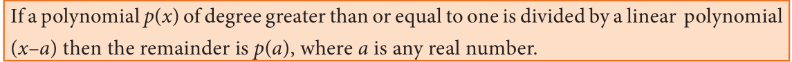
Significance of Remainder theorem : It enables us to find the remainder without actually following the cumbersome process of long division.
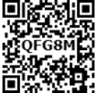
Note
If \(p(x)\) is divided by \((x + a)\), then the remainder is \(p(-a)\)
If \(p(x)\) is divided by \((ax - b)\), then the remainder is \(p\left(\frac{b}{a}\right)\)
If \(p(x)\) is divided by \((ax + b)\), then the remainder is \(p\left(-\frac{b}{a}\right)\)
Example 3.12 Without actual division, prove that \(f(x) = 2x^4 - 6x^3 + 3x^2 + 3x - 2\) is exactly divisible by \(x^2 - 3x + 2\)
Solution :
Let \(f(x) = 2x^4 - 6x^3 + 3x^2 + 3x - 2\)
\(g(x) = x^2 - 3x + 2\)
\(= x^2 - 2x - x + 2\)
\(= x(x - 2) - 1(x - 2)\)
\(= (x - 2)(x - 1)\)
we show that \(f(x)\) is exactly divisible by \((x - 1)\) and \((x - 2)\) using remainder theorem
\(f(1) = 2(1)^4 - 6(1)^3 + 3(1)^2 + 3(1) - 2\)
\(= 2 - 6 + 3 + 3 - 2\)
\(= 0\)
\(f(2) = 2(2)^4 - 6(2)^3 + 3(2)^2 + 3(2) - 2\)
\(= 32 - 48 + 12 + 6 - 2\)
\(= 0\)
\(\therefore\) \(f(x)\) is exactly divisible by \((x - 1)(x - 2)\)
i.e., \(f(x)\) is exactly divisible by \(x^2 - 3x + 2\)
If \(p(x)\) is divided by \((x - a)\) with the remainder \(p(a) = 0\), then \((x - a)\) is a factor of \(p(x)\). Remainder Theorem leads to Factor Theorem.
3.3.1 Factor Theorem
If \(p(x)\) is a polynomial of degree \(n \ge 1\) and ‘\(a\)’ is any real number then
\(p(a) = 0\) implies \((x - a)\) is a factor of \(p(x)\).
\((x - a)\) is a factor of \(p(x)\) implies \(p(a) = 0\).
Proof
If \(p(x)\) is the dividend and \((x - a)\) is a divisor, then by division algorithm we write, \(p(x) = (x - a)q(x) + p(a)\) where \(q(x)\) is the quotient and \(p(a)\) is the remainder.
If \(p(a) = 0\), we get \(p(x) = (x - a)q(x)\) which shows that \((x - a)\) is a factor of \(p(x)\).
Since \((x - a)\) is a factor of \(p(x)\), \(p(x) = (x - a)g(x)\) for some polynomial \(g(x)\). In this case
\(p(a) = (a - a)g(a)\)
\(= 0 \times g(a)\)
\(= 0\)
Hence, \(p(a) = 0\), when \((x - a)\) is a factor of \(p(x)\).
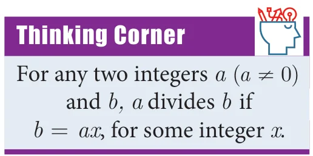
Note
\((x - a)\) is a factor of \(p(x)\), if \(p(a) = 0\) \(\quad (\because x - a = 0,\ x = a)\)
\((x + a)\) is a factor of \(p(x)\), if \(p(-a) = 0\) \(\quad (\because x + a = 0,\ x = -a)\)
\((ax + b)\) is a factor of \(p(x)\), if \(p\left(-\frac{b}{a}\right) = 0\) \(\quad \left(\because ax + b = 0,\ ax = -b,\ x = -\frac{b}{a}\right)\)
\((ax - b)\) is a factor of \(p(x)\), if \(p\left(\frac{b}{a}\right) = 0\) \(\quad \left(\because ax - b = 0,\ ax = b,\ x = \frac{b}{a}\right)\)
\((x - a)(x - b)\) is a factor of \(p(x)\), if \(p(a) = 0\) and \(p(b) = 0\) \(\quad \left(\because \begin{array}{l} x - a = 0 \text{ or } x - b = 0 \\ x = a \text{ or } x = b \end{array}\right)\)
Example 3.13 Show that \((x + 2)\) is a factor of \(x^3 - 4x^2 - 2x + 20\)
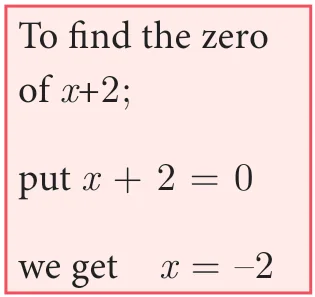
Solution
Let \(p(x) = x^3 - 4x^2 - 2x + 20\)
By factor theorem, \((x + 2)\) is factor of \(p(x)\), if \(p(-2) = 0\)
\(p(-2) = (-2)^3 - 4(-2)^2 - 2(-2) + 20\)
\(= -8 - 4(4) + 4 + 20\)
\(p(-2) = 0\)
Therefore, \((x + 2)\) is a factor of \(x^3 - 4x^2 - 2x + 20\)
Example 3.14 Is \((3x - 2)\) a factor of \(3x^3 + x^2 - 20x + 12\)?
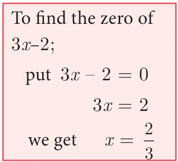
Solution
Let \(p(x) = 3x^3 + x^2 - 20x + 12\)
By factor theorem, \((3x - 2)\) is a factor, if \(p\left(\frac{2}{3}\right) = 0\)
Find the remainder when \(3x^3 - 4x^2 + 7x - 5\) is divided by \((x + 3)\)
What is the remainder when \(x^{2018} + 2018\) is divided by \(x - 1\)
For what value of \(k\) is the polynomial \(p(x) = 2x^3 - kx^2 + 3x + 10\) exactly divisible by \((x - 2)\)
If two polynomials \(2x^3 + ax^2 + 4x - 12\) and \(x^3 + x^2 - 2x + a\) leave the same remainder when divided by \((x - 3)\), find the value of \(a\) and also find the remainder.
Determine whether \((x - 1)\) is a factor of the following polynomials:
\(x^3 + 5x^2 - 10x + 4\)
\(x^4 + 5x^2 - 5x + 1\)
Using factor theorem, show that \((x - 5)\) is a factor of the polynomial \(2x^3 - 5x^2 - 28x + 15\)
Determine the value of \(m\), if \((x + 3)\) is a factor of \(x^3 - 3x^2 - mx + 24\).
If both \((x - 2)\) and \(\left(x - \frac{1}{2}\right)\) are the factors of \(ax^2 + 5x + b\), then show that \(a = b\).
If \((x - 1)\) divides the polynomial \(kx^3 - 2x^2 + 25x - 26\) without remainder, then find the value of \(k\).
Check if \((x + 2)\) and \((x - 4)\) are the sides of a rectangle whose area is \(x^2 - 2x - 8\) by using factor theorem.
3.4 Algebraic Identities
An identity is an equality that remains true regardless of the values chosen for its variables.
We have already learnt about the following identities:
If \(2x - 3y - 4z = 0\), then find \(8x^3 - 27y^3 - 64z^3\).
3.5 Factorisation
Factorisation is the reverse of multiplication.
For Example : Multiply 3 and 5; we get product 15.
Factorise 15; we get factors 3 and 5.
For Example : Multiply \((x + 2)\) and \((x + 3)\); we get product \(x^2 + 5x + 6\).
Factorise \(x^2 + 5x + 6\); we get factors \((x + 2)\) and \((x + 3)\).
\((x + 3)(x + 2)\)
\(x(x + 2) + 3(x + 2)\)
\(x^2 + 2x + 3x + 6\)
\(x^2 + 5x + 6\)
Thus, the process of converting the given higher degree polynomial as the product of factors of its lower degree, which cannot be further factorised is called factorisation.
Two important ways of factorisation are :
(i) By taking common factor (ii) By grouping them
\(ab + ac\) \(a + b - pa - pb\)
\(a \times b + a \times c\) \((a + b) - p(a + b)\) group in pairs
\(a(b + c)\) factored form \((a + b)(1 - p)\) factored form
When a polynomial is factored, we "factored out" the common factor.
\(\therefore\) we split the middle term as \(-18x\) and \(3x\)
\(2x^2 - 15x - 27 = 2x^2 - 18x + 3x - 27\)
\(= 2x(x - 9) + 3(x - 9)\)
\(= (x - 9)(2x + 3)\)
Therefore, \((x - 9)\) and \((2x + 3)\) are the factors of \(2x^2 - 15x - 27\)
Example 3.31
Factorise \((x + y)^2 + 9(x + y) + 20\)
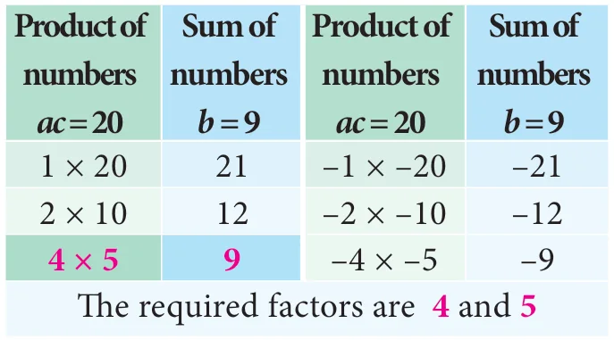
Solution
Let \(x + y = p\), we get \(p^2 + 9p + 20\)
Compare with \(ax^2 + bx + c\),
We get \(a = 1\), \(b = 9\), \(c = 20\)
product \(ac = 1 \times 20 = 20\), sum \(b = 9\)
\(\therefore\) we split the middle term as \(4p\) and \(5p\)
\(p^2 + 9p + 20 = p^2 + 4p + 5p + 20\)
\(= p(p + 4) + 5(p + 4)\)
\(= (p + 4)(p + 5)\)
Put, \(p = x + y\) we get, \((x + y)^2 + 9(x + y) + 20 = (x + y + 4)(x + y + 5)\)
Exercise 3.6
Factorise the following:
\(x^2 + 10x + 24\)
\(z^2 + 4z - 12\)
\(p^2 - 6p - 16\)
\(t^2 + 72 - 17t\)
\(y^2 - 16y - 80\)
\(a^2 + 10a - 600\)
Factorise the following:
\(2a^2 + 9a + 10\)
\(5x^2 - 29xy - 42y^2\)
\(9 - 18x + 8x^2\)
\(6x^2 + 16xy + 8y^2\)
\(12x^2 + 36x^2y + 27y^2x^2\)
\((a + b)^2 + 9(a + b) + 18\)
Factorise the following:
\((p - q)^2 - 6(p - q) - 16\)
\(m^2 + 2mn - 24n^2\)
\(\sqrt{5}a^2 + 2a - 3\sqrt{5}\)
\(a^4 - 3a^2 + 2\)
\(8m^3 - 2m^2n - 15mn^2\)
\(\frac{1}{x^2} + \frac{1}{y^2} + \frac{2}{xy}\)
3.6 Division of Polynomials
Let us consider the numbers 13 and 5. When 13 is divided by 5 what is the quotient and remainder.?
Yes, of course, the quotient is 2 and the remainder is 3. We write \(13 = (5 \times 2)+3\)
Let us try.
From the above examples, we observe that the remainder is less than the divisor.
3.6.1 Division Algorithm for Polynomials
Let \(p(x)\) and \(g(x)\) be two polynomials such that degree of \(p(x) \ge\) degree of \(g(x)\) and \(g(x) \neq 0\). Then there exists unique polynomials \(q(x)\) and \(r(x)\) such that
If it looks complicated, don't worry! it is important to know how to divide polynomials, and that comes easily with practice. The examples below will help you.
Example 3.32
Divide \(x^{3} - 4x^{2} + 6x\) by \(x\), where , \(x \neq 0\)
Synthetic Division is a shortcut method of polynomial division. The advantage of synthetic division is that it allows one to calculate without writing variables, than long division.
Example 3.35
Find the quotient and remainder when \(p(x) = (3x^{3} - 2x^{2} - 5 + 7x)\) is divided by \(d(x) = x + 3\) using synthetic division.
Solution
Step 1 Arrange dividend and the divisor in standard form.
\(3x^{3} - 2x^{2} + 7x - 5\) (standard form of dividend)
\(x + 3\) (standard form of divisor)
Write the coefficients of dividend in the first row. Put '0' for missing term(s).
\(3 \qquad -2 \qquad 7 \qquad -5\) (first row)
Step 2 Find out the zero of the divisor.
\(x + 3 = 0\) implies \(x = -3\)
Step 3 Write the zero of divisor in front of dividend in the first row. Put '0' in the first column of second row.
Hence the quotient is \(\left(x^{2} - \dfrac{5}{3}x + \dfrac{5}{9}\right)\) and remainder is \(\dfrac{-50}{9}\)
Example 3.37
If the quotient on dividing \(x^{4} + 10x^{3} + 35x^{2} + 50x + 29\) by \((x + 4)\) is \(x^{3} - ax^{2} + bx + 6\), then find the value of \(a\), \(b\) and also remainder.
The area of a rectangle is \(x^{2} + 7x + 12\). If its breadth is \((x+3)\), then find its length.
The base of a parallelogram is \((5x+4)\). Find its height, if the area is \(25x^{2} - 16\).
The sum of \((x+5)\) observations is \((x^{3} + 125)\). Find the mean of the observations.
Find the quotient and remainder for the following using synthetic division:
\((x^{3} + x^{2} - 7x - 3) \div (x - 3)\)
\((x^{3} + 2x^{2} - x - 4) \div (x + 2)\)
\((8x^{4} - 2x^{2} + 6x + 5) \div (4x + 1)\)
If the quotient obtained on dividing \((8x^{4} - 2x^{2} + 6x - 7)\) by \((2x + 1)\) is \((4x^{3} + px^{2} - qx + 3)\), then find p, q and also the remainder.
If the quotient obtained on dividing \(3x^{3} + 11x^{2} + 34x + 106\) by \(x - 3\) is \(3x^{2} + ax + b\), then find a, b and also the remainder.
3.6.3 Factorisation using Synthetic Division
In this section, we use the synthetic division method that helps to factorise a cubic polynomial into linear factors. If we identify one linear factor of cubic polynomial \(p(x)\) then using synthetic division we can get the quadratic factor of \(p(x)\). Further if possible one can factorise the quadratic factor into linear factors.
Note
For any non constant polynomial \(p(x)\), \(x = a\) is zero if and only if \(p(a) = 0\)
\(x - a\) is a factor for \(p(x)\) if and only if \(p(a) = 0\) (Factor theorem)
To identify \((x - 1)\) and \((x + 1)\) are the factors of a polynomial
\((x - 1)\) is a factor of \(p(x)\) if and only if the sum of coefficients of \(p(x)\) is 0.
\((x + 1)\) is a factor of \(p(x)\) if and only if the sum of the coefficients of even power of \(x\), including constant is equal to the sum of the coefficients of odd powers of \(x\)
Example 3.38
Prove that \((x - 1)\) is a factor of \(x^{3} - 7x^{2} + 13x - 7\)
Prove that \((x + 1)\) is a factor of \(x^{3} + 7x^{2} + 13x + 7\)
Solution
Let \(p(x) = x^{3} - 7x^{2} + 13x - 7\) Sum of coefficients \(= 1 - 7 + 13 - 7 = 0\) Thus \((x - 1)\) is a factor of \(p(x)\)
Let \(q(x) = x^{3} + 7x^{2} + 13x + 7\) Sum of coefficients of even powers of \(x\) and constant term \(= 7 + 7 = 14\) Sum of coefficients of odd powers of \(x = 1 + 13 = 14\) Hence, \((x + 1)\) is a factor of \(q(x)\)
Example 3.39
Factorise \(x^{3} + 13x^{2} + 32x + 20\) into linear factors.
Solution
Let, \(p(x) = x^{3} + 13x^{2} + 32x + 20\)
Sum of all the coefficients \(= 1 + 13 + 32 + 20 = 66 \neq 0\)
Hence, \((x - 1)\) is not a factor.
Sum of coefficients of even powers and constant term \(= 13 + 20 = 33\)
Sum of coefficients of odd powers \(= 1 + 32 = 33\)
Hence, \((x + 1)\) is a factor of \(p(x)\)
Now we use synthetic division to find the other factors
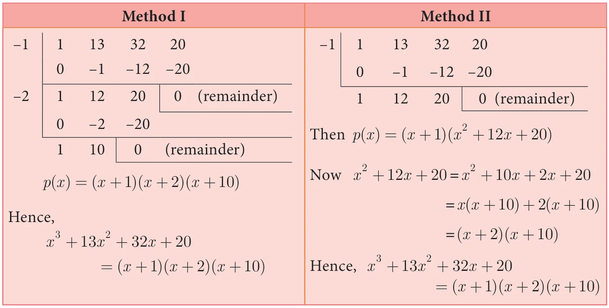
Example 3.40
Factorise \(x^{3} - 5x^{2} - 2x + 24\)
Solution
Let \(p(x) = x^{3} - 5x^{2} - 2x + 24\)
When \(x = 1\), \(p(1) = 1 - 5 - 2 + 24 = 18 \neq 0\) \((x - 1)\) is not a factor.
When \(x = -1\), \(p(-1) = -1 - 5 + 2 + 24 = 20 \neq 0\) \((x + 1)\) is not a factor.
Therefore, we have to search for different values of \(x\) by trial and error method.
Factorise each of the following polynomials using synthetic division:
\(x^{3} - 3x^{2} - 10x + 24\)
\(2x^{3} - 3x^{2} - 3x + 2\)
\(-7x + 3 + 4x^{3}\)
\(x^{3} + x^{2} - 14x - 24\)
\(x^{3} - 7x + 6\)
\(x^{3} - 10x^{2} - x + 10\)
3.7 Greatest Common Divisor (GCD)
The Greatest Common Divisor, abbreviated as GCD, of two or more polynomials is a polynomial, of the highest common possible degree, that is a factor of the given two or more polynomials. It is also known as the Highest Common Factor (HCF).
This concept is similar to the greatest common divisor of two integers.
For example, Consider the expressions \(14xy^{2}\) and \(42xy\). The common divisors of 14 and 42 are 2, 7 and 14. Their GCD is thus 14. The only common divisors of \(xy^{2}\) and \(xy\) are \(x\), \(y\) and \(xy\); their GCD is thus \(xy\).
\(14xy^{2} = 1 \times 2 \times 7 \times x \times y \times y\)
A linear equation in two variables is of the form \(ax + by + c = 0\) where \(a\), \(b\) and \(c\) are real numbers, both \(a\) and \(b\) are not zero (The two variables are denoted here by \(x\) and \(y\) and \(c\) is a constant).
Examples
If an equation has two variables each of which is in first degree such that the variables are not multiplied with each other, then it is a linear equation in two variables (If the degree of an equation in two variables is 1, then it is called a linear equation in two variables).
An understanding of linear equation in two variables will be easy if it is done along with a geometrical visualization (through graphs). We will make use of this resource.
Why do we classify, for example, the equation \(2x + y = 4\) is a linear equation? You are right; because its graph will be a line. Shall we check it up?
We try to draw its graph. To draw the graph of \(2x + y = 4\), we need some points on the line so that we can join them. (These are the ordered pairs satisfying the equation).
To prepare table giving ordered pairs for \(2x + y = 4\). It is better, to take it as \(y = 4 - 2x\). (Why? How?)
When \(x = -4\), \(y = 4 - 2(-4) = 4 + 8 = 12\)
When \(x = -2\), \(y = 4 - 2(-2) = 4 + 4 = 8\)
When \(x = 0\), \(y = 4 - 2(0) = 4 + 0 = 4\)
When \(x = +1\), \(y = 4 - 2(+1) = 4 - 2 = 2\)
When \(x = +3\), \(y = 4 - 2(+3) = 4 - 6 = -2\)
Thus the values are tabulated as follows:
\(x\)-value
\(-4\)
\(-2\)
\(0\)
\(1\)
\(3\)
\(y\)-value
\(12\)
\(8\)
\(4\)
\(2\)
\(-2\)
(To fix a line, do we need so many points? It is enough if we have two and probably one more for verification.)
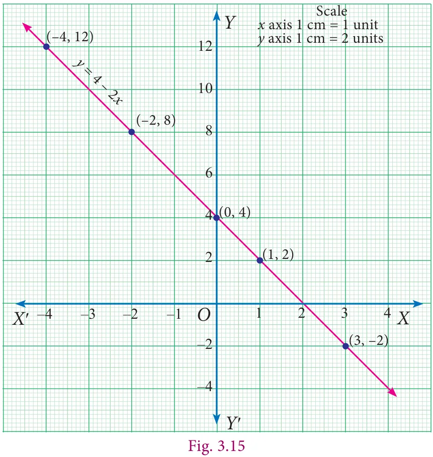
Fig. 3.15
When you plot the points \((-4,12)\), \((-2,8)\), \((0,4)\), \((1,2)\) and \((3,-2)\), you find that they all lie on a line.
This clearly shows that the equation \(2x + y = 4\) represents a line (and hence said to be linear).
All the points on the line satisfy this equation and hence the ordered pairs of all the points on the line are the solutions of the equation.
(i) Let us prepare a table to find the ordered pairs of points for the line \(y = 3x - 1\).
We shall assume any value for \(x\), for our convenience let us take \(-1\), \(0\) and \(1\).
When \(x = -1\), \(y = 3(-1) - 1 = -4\)
When \(x = 0\), \(y = 3(0) - 1 = -1\)
When \(x = 1\), \(y = 3(1) - 1 = 2\)
\(x\)
\(-1\)
\(0\)
\(1\)
\(y\)
\(-4\)
\(-1\)
\(2\)
The points \((x,y)\) to be plotted : \((-1, -4)\), \((0, -1)\) and \((1, 2)\).
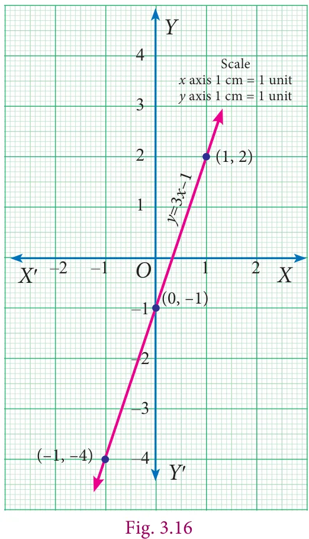
Fig. 3.16
(ii) Let us prepare a table to find the ordered pairs of points for the line \(y = \left(\frac{2}{3}\right)x + 3\).
Let us assume \(-3\), \(0\), \(3\) as \(x\) values. (why?)
When \(x = -3\), \(y = \frac{2}{3}(-3) + 3 = 1\)
When \(x = 0\), \(y = \frac{2}{3}(0) + 3 = 3\)
When \(x = 3\), \(y = \frac{2}{3}(3) + 3 = 5\)
\(x\)
\(-3\)
\(0\)
\(3\)
\(y\)
\(1\)
\(3\)
\(5\)
The points \((x,y)\) to be plotted : \((-3,1)\), \((0,3)\) and \((3,5)\).
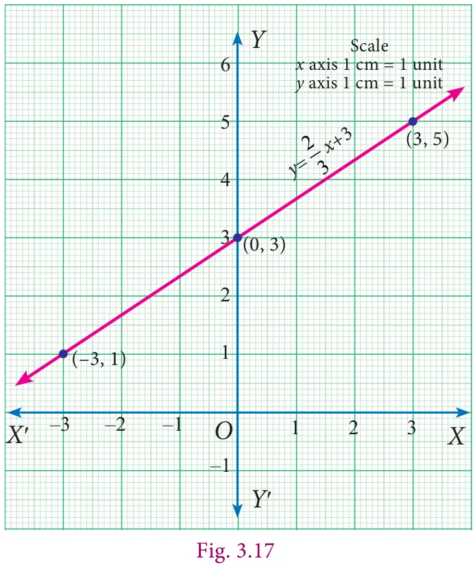
Fig. 3.17
3.8.1 Simultaneous Linear Equations
With sufficient background of graphing an equation, now we are set to study about system of equations, particularly pairs of simultaneous equations.
What are simultaneous linear equations? These consists of two or more linear equations with the same variables.
Why do we need them? A single equation like \(2x + y = 10\) has an unlimited number of solutions. The points \((1,8)\), \((2,6)\), \((3,4)\) and many more lie on the graph of the equation, which means these are some of its endless list of solutions. To be able to solve an equation like this, another equation needs to be used alongside it; then it is possible to find a single ordered pair that solves both equations at the same time.
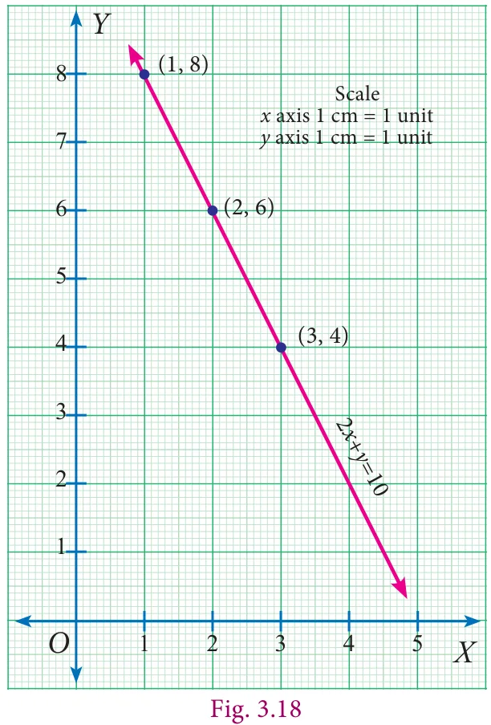
Fig. 3.18
The equations we consider together in such settings make a meaningful situation and are known as simultaneous linear equations.
Real life Situation to understand the simultaneous linear equations
Consider the situation, Anitha bought two erasers and a pencil for ₹10. She does not know the individual cost of each. We shall form an equation by considering the cost of eraser as ‘\(x\)’ and that of pencil as ‘\(y\)’.
That is \(2x + y = 10\) ... (1)
Now, Anitha wants to know the individual cost of an eraser and a pencil. She tries to solve the first equation, assuming various values of \(x\) and \(y\).
\(2 \times\) cost of eraser \(+\ 1 \times\) cost of pencil \(= 10\)
\(2(1) + 8 = 10\)
\(2(1.5) + 7 = 10\)
\(2(2) + 6 = 10\)
\(2(2.5) + 5 = 10\)
\(2(3) + 4 = 10\)
\(\vdots \qquad \vdots\)
Points to be plotted :
\(x\)
\(1\)
\(1.5\)
\(2\)
\(2.5\)
\(3\)
\(\ldots\)
\(y\)
\(8\)
\(7\)
\(6\)
\(5\)
\(4\)
\(\ldots\)
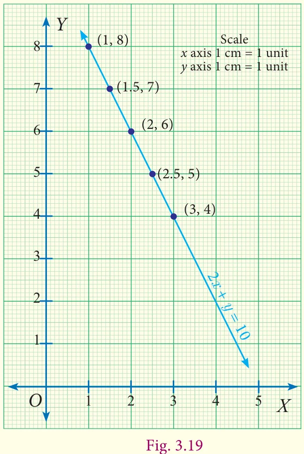
Fig. 3.19
She gets infinite number of answers. So she tries to find the cost with the second equation.
Again, Anitha needs some more pencils and erasers. This time, she bought 3 erasers and 4 pencils and the shopkeeper received ₹30 as the total cost from her. We shall form an equation like the previous one.
The equation is \(3x + 4y = 30\) ...(2)
Even then she arrives at an infinite number of answers.
\(3 \times\) cost of eraser \(+\ 4 \times\) cost of pencil \(= 30\)
\(3(2) + 4(6) = 30\)
\(3(4) + 4(4.5) = 30\)
\(3(6) + 4(3) = 30\)
\(3(8) + 4(1.5) = 30\)
\(\vdots \qquad \vdots\)
Points to be plotted :
\(x\)
\(2\)
\(4\)
\(6\)
\(8\)
\(\ldots\)
\(y\)
\(6\)
\(4.5\)
\(3\)
\(1.5\)
\(\ldots\)
While discussing this with her teacher, the teacher suggested that she can get a unique answer if she solves both the equations together.
By solving equations (1) and (2) we have the cost of an eraser as ₹2 and cost of a pencil as ₹6. It can be visualised in the graph.
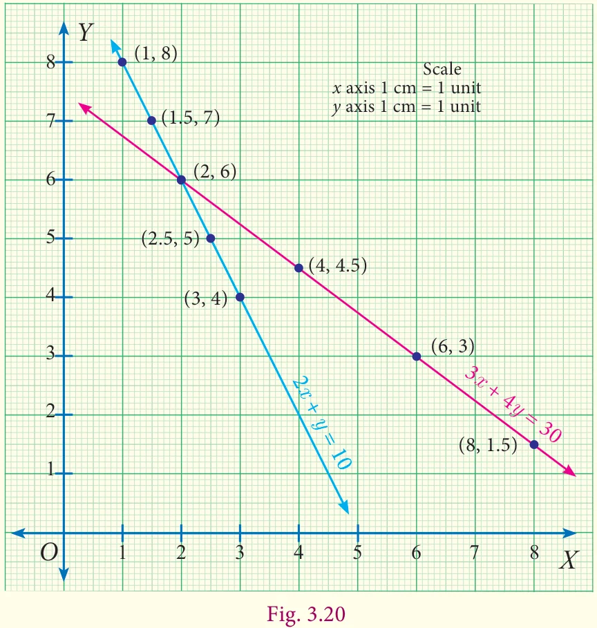
Fig. 3.20
The equations we consider together in such settings make a meaningful situation and are known as simultaneous linear equations.
Thus a system of linear equations consists of two or more linear equations with the same variables. Then such equations are called Simultaneous linear equations or System of linear equations or a Pair of linear equations.
Example 3.43
Check whether \((5, -1)\) is a solution of the simultaneous equations \(x - 2y = 7\) and \(2x + 3y = 7\).
Solution
Given \(x - 2y = 7\) …(1)
\(2x + 3y = 7\) …(2)
When \(x = 5\), \(y = -1\) we get
From (1): \(x - 2y = 5 - 2(-1) = 5 + 2 = 7\) which is RHS of (1)
From (2): \(2x + 3y = 2(5) + 3(-1) = 10 - 3 = 7\) which is RHS of (2)
Thus the values \(x = 5\), \(y = -1\) satisfy both (1) and (2) simultaneously. Therefore \((5, -1)\) is a solution of the given equations.
Progress Check
Examine if \((3,3)\) will be a solution for the simultaneous linear equations \(2x - 5y - 2 = 0\) and \(x + y - 6 = 0\) by drawing a graph.
3.8.2 Methods of solving simultaneous linear equations
There are different methods to find the solution of a pair of simultaneous linear equations. It can be broadly classified as geometric way and algebraic ways.
Already we have seen graphical representation of linear equation in two variables. Here we shall learn, how we are graphically representing a pair of linear equations in two variables and find the solution of simultaneous linear equations.
Example 3.44
Use graphical method to solve the following system of equations:
\(x + y = 5\); \(2x - y = 4\).
Solution
Given \(x + y = 5\) …(1)
\(2x - y = 4\) …(2)
To draw the graph (1) is very easy. We can find the \(x\) and \(y\) values and thus two of the points on the line (1).
When \(x = 0\), (1) gives \(y = 5\).
Thus \(A(0,5)\) is a point on the line.
When \(y = 0\), (1) gives \(x = 5\).
Thus \(B(5,0)\) is another point on the line.
Plot \(A\) and \(B\); join them to produce the line (1).
To draw the graph of (2), we can adopt the same procedure.
When \(x = 0\), (2) gives \(y = -4\).
Thus \(P(0,-4)\) is a point on the line.
When \(y = 0\), (2) gives \(x = 2\).
Thus \(Q(2,0)\) is another point on the line.
Plot \(P\) and \(Q\); join them to produce the line (2).
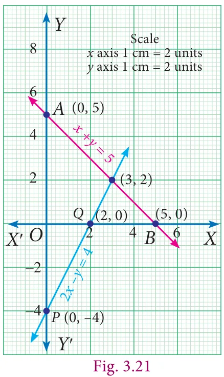
Fig. 3.21
The point of intersection \((3, 2)\) of lines (1) and (2) is a solution.
The solution is the point that is common to both the lines. Here we find it to be \((3,2)\). We can give the solution as \(x = 3\) and \(y = 2\).
Note
It is always good to verify if the answer obtained is correct and satisfies both the given equations.
Example 3.45
Use graphical method to solve the following system of equations:
\(3x + 2y = 6\); \(6x + 4y = 8\)
Solution
Let us form table of values for each line and then fix the ordered pairs to be plotted.
Graph of \(3x + 2y = 6\)
\(x\)
\(-2\)
\(0\)
\(2\)
\(y\)
\(6\)
\(3\)
\(0\)
Points to be plotted : \((-2,6)\), \((0,3)\), \((2,0)\)
Graph of \(6x + 4y = 8\)
\(x\)
\(-2\)
\(0\)
\(2\)
\(y\)
\(5\)
\(2\)
\(-1\)
Points to be plotted : \((-2,5)\), \((0,2)\), \((2,-1)\)
When we draw the graphs of these two equations, we find that they are parallel and they fail to meet to give a point of intersection. As a result there is no ordered pair that can be common to both the equations. In this case there is no solution to the system.
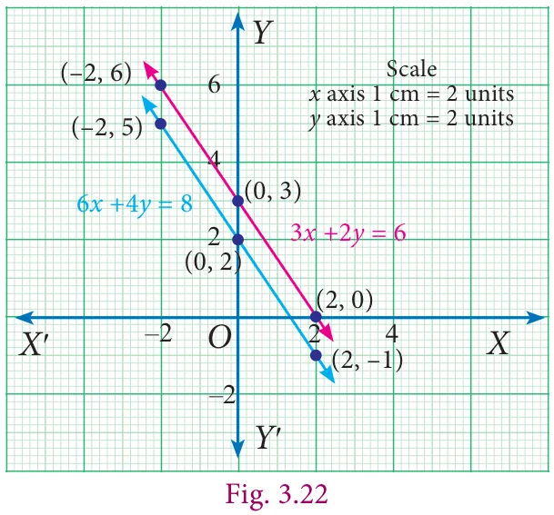
Fig. 3.22
Example 3.46
Use graphical method to solve the following system of equations:
\(y = 2x + 1\); \(-4x + 2y = 2\)
Solution
Let us form table of values for each line and then fix the ordered pairs to be plotted.
Graph of \(y = 2x + 1\)
\(x\)
\(-2\)
\(-1\)
\(0\)
\(1\)
\(2\)
\(2x\)
\(-4\)
\(-2\)
\(0\)
\(2\)
\(4\)
\(1\)
\(1\)
\(1\)
\(1\)
\(1\)
\(1\)
\(y = 2x+1\)
\(-3\)
\(-1\)
\(1\)
\(3\)
\(5\)
Points to be plotted : \((-2, -3)\), \((-1, -1)\), \((0,1)\), \((1,3)\), \((2, 5)\)
Points to be plotted : \((-2, -3)\), \((-1, -1)\), \((0, 1)\), \((1, 3)\), \((2, 5)\)
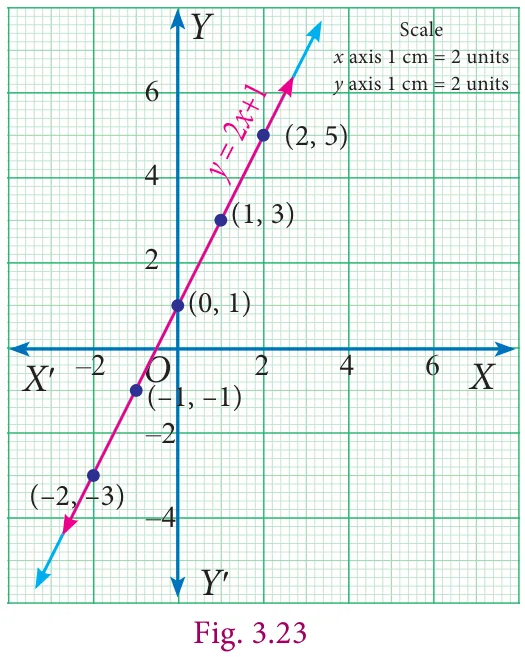
Fig. 3.23
Here both the equations are identical; they were only represented in different forms. Since they are identical, their solutions are same. All the points on one line are also on the other!
This means we have an infinite number of solutions which are the ordered pairs of all the points on the line.
Example 3.47
The perimeter of a rectangle is 36 metres and the length is 2 metres more than three times the width. Find the dimension of rectangle by using the method of graph.
Solution
Let us form equations for the given statement.
Let us consider \(l\) and \(b\) as the length and breadth of the rectangle respectively.
Now let us frame the equation for the first statement
Two cars are 100 miles apart. If they drive towards each other they will meet in 1 hour. If they drive in the same direction they will meet in 2 hours. Find their speed by using graphical method.
Some special terminology
We found that the graphs of equations within a system tell us how many solutions are there for that system. Here is a visual summary.
When a system of linear equation has one solution (the graphs of the equations intersect once), the system is said to be a consistent system.
When a system of linear equation has no solution (the graphs of the equations don't intersect at all), the system is said to be an inconsistent system.
When a system of linear equation has infinitely many solutions, the lines are the same (the graph of lines are identical at all points), the system is consistent.
Solving by Substitution Method
In this method we substitute the value of one variable, by expressing it in terms of the other variable to reduce the given equation of two variables into equation of one variable (in order to solve the pair of linear equations). Since we are substituting the value of one variable in terms of the other variable, this method is called substitution method.
The procedure may be put shortly as follows:
Step 1: From any of the given two equations, find the value of one variable in terms of the other.
Step 2: Substitute the value of the variable, obtained in step 1 in the other equation and solve it.
Step 3: Substitute the value of the variable obtained in step 2 in the result of step 1 and get the value of the remaining unknown variable.
Example 3.48
Solve the system of linear equations \(x + 3y = 16\) and \(2x - y = 4\) by substitution method.
Solution
Given \(x + 3y = 16\) ... (1)
\(2x - y = 4\) ... (2)
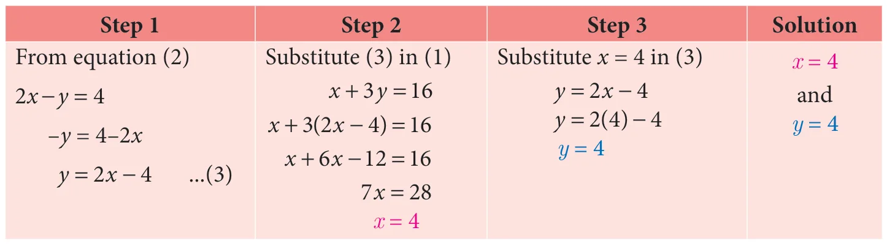
Example 3.49
The sum of the digits of a given two digit number is 5. If the digits are reversed, the new number is reduced by 27. Find the given number.
Solution
Let \(x\) be the digit at ten’s place and \(y\) be the digit at unit place.
Given that \(x + y = 5\) …… (1)
Given, Original number − reversing number \(= 27\)
\((10x + y) - (10y + x) = 27\)
\(10x - x + y - 10y = 27\)
\(9x - 9y = 27\)
\(\Rightarrow x - y = 3\) ... (2)
Also from (1), \(y = 5 - x\) ... (3)
Substitute (3) in (2) to get \(x - (5 - x) = 3\)
\(x - 5 + x = 3\)
\(2x = 8\)
\(x = 4\)
Substituting \(x = 4\) in (3), we get \(y = 5 - x = 5 - 4\)
Raman's age is three times the sum of the ages of his two sons. After 5 years his age will be twice the sum of the ages of his two sons. Find the age of Raman.
The middle digit of a number between 100 and 1000 is zero and the sum of the other digit is 13. If the digits are reversed, the number so formed exceeds the original number by 495. Find the number.
Solving by Elimination Method
This is another algebraic method for solving a pair of linear equations. This method is more convenient than the substitution method. Here we eliminate (i.e. remove) one of the two variables in a pair of linear equations, so as to get a linear equation in one variable which can be solved easily.
The various steps involved in the technique are given below:
Step 1: Multiply one or both of the equations by a suitable number(s) so that either the coefficients of first variable or the coefficients of second variable in both the equations become numerically equal.
Step 2: Add both the equations or subtract one equation from the other, as obtained in step 1, so that the terms with equal numerical coefficients cancel mutually.
Step 3: Solve the resulting equation to find the value of one of the unknowns.
Step 4: Substitute this value in any of the two given equations and find the value of the other unknown.
Given \(4a + 3b = 65\) and \(a + 2b = 35\) solve by elimination method.
Solution
Given, \(4a + 3b = 65\) .....(1)
\(a + 2b = 35\) .....(2)
\((2) \times 4\) gives \(4a + 8b = 140\)
Already (1) is \(\underline{\overset{(-)}{4a} + \overset{(-)}{3b} = \overset{(-)}{65}}\)
\(5b = 75\) which gives \(b = 15\)
Put \(b = 15\) in (2):
\(a + 2(15) = 35\) which simplifies to \(a = 5\)
Thus the solution is \(a = 5\), \(b = 15\).
Solve for \(x\) and \(y\): \(8x - 3y = 5xy\), \(6x - 5y = -2xy\) by the method of elimination.
Solution
The given system of equations are \(8x - 3y = 5xy\) ...(1)
\(6x - 5y = -2xy\) ...(2)
Observe that the given system is not linear because of the occurrence of \(xy\) term. Also note that if \(x = 0\), then \(y = 0\) and vice versa. So, (0,0) is a solution for the system and any other solution would have both \(x \neq 0\) and \(y \neq 0\)
The monthly income of \(A\) and \(B\) are in the ratio 3:4 and their monthly expenditures are in the ratio 5:7. If each saves ₹ 5,000 per month, find the monthly income of each.
Five years ago, a man was seven times as old as his son, while five year hence, the man will be four times as old as his son. Find their present age.
Solving by Cross Multiplication Method
The substitution and elimination methods involves many arithmetic operations, whereas the cross multiplication method utilize the coefficients effectively, which simplifies the procedure to get the solution. This method of cross multiplication is so called because we draw cross ways between the numbers in the denominators and cross multiply the coefficients along the arrows ahead. Now let us discuss this method as follows:
Suppose we are given a pair of linear simultaneous equations such as
\(a_1x + b_1y + c_1 = 0 \quad ...(1)\)
\(a_2x + b_2y + c_2 = 0 \quad ...(2)\)
such that \(\frac{a_1}{a_2} \neq \frac{b_1}{b_2}\). We can solve them as follows :
Akshaya has 2 rupee coins and 5 rupee coins in her purse. If in all she has 80 coins totalling ₹ 220, how many coins of each kind does she have.
It takes 24 hours to fill a swimming pool using two pipes. If the pipe of larger diameter is used for 8 hours and the pipe of the smaller diameter is used for 18 hours. Only half of the pool is filled. How long would each pipe take to fill the swimming pool.
3.8.3 Consistency and Inconsistency of Linear Equations in Two Variables
Consider linear equations in two variables say
\(a_1x + b_1y + c_1 = 0 \quad ...(1)\)
\(a_2x + b_2y + c_2 = 0 \quad ...(2)\)
where \(a_1, a_2, b_1, b_2, c_1\) and \(c_2\) are real numbers. Then the system has :
a unique solution if \(\frac{a_1}{a_2} \neq \frac{b_1}{b_2}\) (Consistent)
an Infinite number of solutions if \(\frac{a_1}{a_2} = \frac{b_1}{b_2} = \frac{c_1}{c_2}\) (Consistent)
no solution if \(\frac{a_1}{a_2} = \frac{b_1}{b_2} \neq \frac{c_1}{c_2}\) (Inconsistent)
Example 3.54
Check whether the following system of equation is consistent or inconsistent and say how many solutions we can have if it is consistent.
\(2x - 4y = 7\); \(x - 3y = -2\)
\(4x + y = 3\); \(8x + 2y = 6\)
\(4x + 7 = 2y\); \(2x + 9 = y\)
Solution
Example 3.55 Check the value of \(k\) for which the given system of equations \(kx + 2y = 3\); \(2x - 3y = 1\) has a unique solution.
For unique solution we take \(\frac{a_1}{a_2} \neq \frac{b_1}{b_2}\); therefore \(\frac{k}{2} \neq \frac{2}{-3}\); \(k \neq \frac{4}{-3}\), that is \(k \neq -\frac{4}{3}\).
Example 3.56 Find the value of \(k\), for the following system of equation has infinitely many solutions. \(2x - 3y = 7\); \((k + 2)x - (2k + 1)y = 3(2k - 1)\)
For no solution, we know that \(\frac{a_1}{a_2} = \frac{b_1}{b_2} \neq \frac{c_1}{c_2}\) and so, \(\frac{8}{k} = \frac{5}{10} \neq \frac{9}{15}\)
\(80 = 5k\)
\(k = 16\)
Exercise 3.14
Solve by any one of the methods
The sum of a two digit number and the number formed by interchanging the digits is 110. If 10 is subtracted from the first number, the new number is 4 more than 5 times the sums of the digits of the first number. Find the first number.
The sum of the numerator and denominator of a fraction is 12. If the denominator is increased by 3, the fraction becomes \(\frac{1}{2}\). Find the fraction.
ABCD is a cyclic quadrilateral such that \(\angle A = (4y + 20)^{\circ}\), \(\angle B = (3y - 5)^{\circ}\), \(\angle C = (4x)^{\circ}\) and \(\angle D = (7x + 5)^{\circ}\). Find the four angles.
On selling a T.V. at 5% gain and a fridge at 10% gain, a shopkeeper gains ₹2000. But if he sells the T.V. at 10% gain and the fridge at 5% loss, he gains Rs.1500 on the transaction. Find the actual price of the T.V. and the fridge.
Two numbers are in the ratio 5 : 6. If 8 is subtracted from each of the numbers, the ratio becomes 4 : 5. Find the numbers.
4 Indians and 4 Chinese can do a piece of work in 3 days. While 2 Indians and 5 Chinese can finish it in 4 days. How long would it take for 1 Indian to do it? How long would it take for 1 Chinese to do it?
Exercise 3.15
Multiple choice questions
If \(x^{3} + 6x^{2} + kx + 6\) is exactly divisible by \((x + 2)\), then \(k = ?\) (1) \(-6\) (2) \(-7\) (3) \(-8\) (4) \(11\)
The root of the polynomial equation \(2x + 3 = 0\) is (1) \(\frac{1}{3}\) (2) \(-\frac{1}{3}\) (3) \(-\frac{3}{2}\) (4) \(-\frac{2}{3}\)
The type of the polynomial \(4 - 3x^{3}\) is (1) constant polynomial (2) linear polynomial (3) quadratic polynomial (4) cubic polynomial.
If \(x^{51} + 51\) is divided by \(x + 1\), then the remainder is (1) \(0\) (2) \(1\) (3) \(49\) (4) \(50\)
The zero of the polynomial \(2x + 5\) is (1) \(\frac{5}{2}\) (2) \(-\frac{5}{2}\) (3) \(\frac{2}{5}\) (4) \(-\frac{2}{5}\)
\((a + b - c)^{2}\) is equal to \(\underline{\qquad\qquad}\) (1) \((a - b + c)^{2}\) (2) \((-a - b + c)^{2}\) (3) \((a + b + c)^{2}\) (4) \((a - b - c)^{2}\)
If \((x + 5)\) and \((x - 3)\) are the factors of \(ax^{2} + bx + c\), then values of a, b and c are (1) \(1, 2, 3\) (2) \(1, 2, 15\) (3) \(1, 2, -15\) (4) \(1, -2, 15\)
Cubic polynomial may have maximum of \(\underline{\qquad\qquad}\) linear factors (1) \(1\) (2) \(2\) (3) \(3\) (4) \(4\)
Degree of the constant polynomial is \(\underline{\qquad\qquad}\) (1) \(3\) (2) \(2\) (3) \(1\) (4) \(0\)
Find the value of \(m\) from the equation \(2x + 3y = m\). If its one solution is \(x = 2\) and \(y = -2\). (1) \(2\) (2) \(-2\) (3) \(10\) (4) \(0\)
Which of the following is a linear equation (1) \(x + \frac{1}{x} = 2\) (2) \(x(x - 1) = 2\) (3) \(3x + 5 = \frac{2}{3}\) (4) \(x^{3} - x = 5\)
Which of the following is a solution of the equation \(2x - y = 6\) (1) \((2, 4)\) (2) \((4, 2)\) (3) \((3, -1)\) (4) \((0, 6)\)
If \((2, 3)\) is a solution of linear equation \(2x + 3y = k\) then, the value of \(k\) is (1) \(12\) (2) \(6\) (3) \(0\) (4) \(13\)
Which condition does not satisfy the linear equation \(ax + by + c = 0\) (1) \(a \neq 0,\ b = 0\) (2) \(a = 0,\ b \neq 0\) (3) \(a = 0,\ b = 0\) (4) \(a \neq 0,\ b \neq 0\)
Which of the following is not a linear equation in two variable (1) \(ax + by + c = 0\) (2) \(0x + 0y + c = 0\) (3) \(0x + by + c = 0\) (4) \(ax + 0y + c = 0\)
The value of \(k\) for which the pair of linear equations \(4x + 6y - 1 = 0\) and \(2x + ky - 7 = 0\) represents parallel lines is (1) \(k = 3\) (2) \(k = 2\) (3) \(k = 4\) (4) \(k = -3\)
A pair of linear equations has no solution then the graphical representation is
If \(\frac{a_{1}}{a_{2}} \neq \frac{b_{1}}{b_{2}}\) where \(a_{1}x + b_{1}y + c_{1} = 0\) and \(a_{2}x + b_{2}y + c_{2} = 0\) then the given pair of linear equation has \(\underline{\qquad\qquad}\) solution(s) (1) no solution (2) two solutions (3) unique (4) infinite
If \(\frac{a_{1}}{a_{2}} = \frac{b_{1}}{b_{2}} \neq \frac{c_{1}}{c_{2}}\) where \(a_{1}x + b_{1}y + c_{1} = 0\) and \(a_{2}x + b_{2}y + c_{2} = 0\) then the given pair of linear equation has \(\underline{\qquad\qquad}\) solution(s) (1) no solution (2) two solutions (3) infinite (4) unique
GCD of any two prime numbers is \(\underline{\qquad\qquad}\) (1) \(-1\) (2) \(0\) (3) \(1\) (4) \(2\)
The GCD of \(x^{4} - y^{4}\) and \(x^{2} - y^{2}\) is (1) \(x^{4} - y^{4}\) (2) \(x^{2} - y^{2}\) (3) \((x + y)^{2}\) (4) \((x + y)^{4}\)
Points to Remember
An algebraic expression of the form \(p(x) = a_{n}x^{n} + a_{n-1}x^{n-1} + \ldots + a_{2}x^{2} + a_{1}x + a_{0}\) is called Polynomial in one variable \(x\) of degree '\(n\)' where \(a_{0}, a_{1}, a_{2}, \ldots a_{n}\) are constants \((a_{n} \neq 0)\) and \(n\) is a whole number.
Let \(p(x)\) be a polynominal. If \(p(a) = 0\) then we say that '\(a\)' is a zero of the polynomial \(p(x)\)
If \(x = a\) statisfies the polynominal \(p(x) = 0\) then \(x = a\) is called a root of the polynominal equation \(p(x) = 0\).
Remainder Theorem: If a polynomial \(p(x)\) of degree greater than or equal to one is divided by a linear polynomial \((x - a)\), then the remainder is \(p(a)\), where \(a\) is any real number.
Factor Theorem If \(p(x)\) is divided by \((x - a)\) and the remainder \(p(a) = 0\), then \((x - a)\) is a factor of the polynomial \(p(x)\)
Solution of an equation is the set of all values that when substituted for unknowns make an equation true.
An equation with two variables each with degree one and not multiplied with each other is called a linear equation with two variables.
A linear equation in two variables has infinite number of solutions.
The graph of a linear equation in two variables is a straight line.
Simultaneous linear equations consists of two or more linear equations with the same variables.
ICT Corner-1
ICT Corner-1
Expected Result is shown in this picture
Step – 1 Open the Browser and copy and paste the Link given below (or) by typing the URL given (or) Scan the QR Code.
Step - 2 GeoGebra Work Book called "Polynomials and Quadratic Equations" will appear. There are several work sheets in this work Book. Open the worksheet named "Zeroes: Quadratic Polynomial".
Step-3 Drag the sliders a, b and c to change the quadratic co-efficient. Follow the changes in points \(A\) and \(B\) where the curve cuts the \(x\)-axis. These points are called Zeroes of a Polynomial.
Step – 1 Open the Browser, type the URL Link given below (or) Scan the QR Code. GeoGebra work sheet named "Algebraic Identities" will open. In the work sheet, there are many activities on Algebraic Identities.
In the first activity diagrammatic approach for \((a+b)^{2}\) is given. Move the sliders a and b and compare the areas with the Identity given.
Step - 2 Similarly move the sliders a and b and compare the areas with the remaining Identities.
Step – 1 Open the Browser by typing the URL Link given below (or) Scan the QR Code. GeoGebra work sheet named "Algebra" will open. There are three worksheets under the title Solving by rule of cross multiplication, Graphical method and Chick-Goat puzzle.
Step - 2 Move the sliders or type the respective values in the respective boxes to change the equations. Work out the solution and check the solutions. In third title click on new problem and solve. Move the slider to see the steps.
Inspiration is needed in geometry just as much as in poetry. - Alexander Pushkin
Thales (Pronounced THAYLEES) was born in the Greek city of Miletus. He was known for theoretical and practical understanding of geometry, especially triangles. He used geometry to solve many problems such as calculating the height of pyramids and the distance of ships from the sea shore. He was one of the so-called Seven Sagas or Seven Wise Men of Greece and many regarded him as the first philosopher in the western tradition.
Learning Outcomes
To understand theorems on linear pairs and vertically opposite angles.
To understand the angle sum property of triangle.
To understand the properties of quadrilaterals and use them in problem solving.
To understand, interpret and apply theorems on the chords and the angles subtended by arcs of a circle
To understand, interpret and apply theorems on the cyclic quadrilaterals.
To construct and locate centroid, orthocentre, circumcentre and incentre of a triangle.
4.1 Introduction
In geometry, we study shapes. But what is there to study in shapes, you may ask. Think first, what are all the things we do with shapes? We draw shapes, we compare shapes, we measure shapes. What do we measure in shapes?
Take some shapes like this:
In both of them, there is a curve forming the shape: one is a closed curve, enclosing a region, and the other is an open curve. We can use a rope (or a thick string) to measure the length of the open curve and the length of the boundary of the region in the case of the closed curve.
Curves are tricky, aren't they? It is so much easier to measure length of straight lines using the scale, isn't it? Consider the two shapes below.
Fig. 4.2
Now we are going to focus our attention only on shapes made up of straight lines and on closed figures. As you will see, there is plenty of interesting things to do. Fig.4.2 shows an open figure.
Fig. 4.3
We not only want to draw such shapes, we want to compare them, measure them and do much more. For doing so, we want to describe them. How would you describe these closed shapes? (See Fig 4.3) They are all made up of straight lines and are closed.
4.2 Types of Angles-Recall
4.2 Types of Angles-Recall
Plumbers measure the angle between connecting pipes to make a good fitting. Wood workers adjust their saw blades to cut wood at the correct angle. Air Traffic Controllers (ATC) use angles to direct planes. Carom and billiards players must know their angles to plan their shots. An angle is formed by two rays that share a common end point provided that the two rays are non-collinear.
Complementary Angles
Two angles are Complementary if their sum is \(90^{\circ}\). For example, if \(\angle ABC=64^{\circ}\) and \(\angle DEF=26^{\circ}\), then angles \(\angle ABC\) and \(\angle DEF\) are complementary to each other because \(\angle ABC + \angle DEF = 90^{\circ}\)
Supplementary Angles
Two angles are Supplementary if their sum is \(180^{\circ}\). For example if \(\angle ABC=110^{\circ}\) and \(\angle XYZ=70^{\circ}\)
Here \(\angle ABC + \angle XYZ = 180^{\circ}\)
\(\therefore \angle ABC\) and \(\angle XYZ\) are supplementary to each other
Adjacent Angles
Two angles are called adjacent angles if
They have a common vertex.
They have a common arm.
The common arm lies between the two non-common arms.
Linear Pair of Angles
If a ray stands on a straight line then the sum of two adjacent angle is \(180^{\circ}\). We then say that the angles so formed is a linear pair.
\(\angle AOC + \angle BOC = 180^{\circ}\)
\(\therefore \angle AOC\) and \(\angle BOC\) form a linear pair
\(\angle XOZ + \angle YOZ = 180^{\circ}\)
\(\angle XOZ\) and \(\angle YOZ\) form a linear pair
Vertically Opposite Angles
Fig. 4.10
If two lines intersect each other, then vertically opposite angles are equal.
In this figure
\(\angle POQ = \angle SOR\)
\(\angle POS = \angle QOR\)
4.2.1 Transversal
A line which intersects two or more lines at distinct points is called a transversal of those lines.
Case (i) When a transversal intersect two lines, we get eight angles.
In the figure the line \(l\) is the transversal for the lines \(m\) and \(n\)
Corresponding Angles: \(\angle 1\) and \(\angle 5\), \(\angle 2\) and \(\angle 6\), \(\angle 3\) and \(\angle 7\), \(\angle 4\) and \(\angle 8\)
Alternate Interior Angles: \(\angle 4\) and \(\angle 6\), \(\angle 3\) and \(\angle 5\)
Alternate Exterior Angles: \(\angle 1\) and \(\angle 7\), \(\angle 2\) and \(\angle 8\)
\(\angle 4\) and \(\angle 5\), \(\angle 3\) and \(\angle 6\) are interior angles on the same side of the transversal.
\(\angle 1\) and \(\angle 8\), \(\angle 2\) and \(\angle 7\) are exterior angles on the same side of the transversal.
Case (ii) If a transversal intersects two parallel lines. The transversal forms different pairs of angles.
4.2.2 Triangles
Activity 1
1. Take three different colour sheets; place one over the other and draw a triangle on the top sheet. Cut the sheets to get triangles of different colour which are identical. Mark the vertices and the angles as shown. Place the interior angles \(\angle 1\), \(\angle 2\) and \(\angle 3\) on a straight line, adjacent to each other, without leaving any gap. What can you say about the total measure of the three angles \(\angle 1\), \(\angle 2\) and \(\angle 3\)?
Can you use the same figure to explain the "Exterior angle property" of a triangle?
If a side of a triangle is stretched, the exterior angle so formed is equal to the sum of the two interior opposite angles. That is \(d=a+b\) (see Fig 4.14)
4.2.3 Congruent Triangles
Two triangles are congruent if the sides and angles of one triangle are equal to the corresponding sides and angles of another triangle.
Exercise 4.1
In the figure, \(AB\) is parallel to \(CD\), find \(x\)
The angles of a triangle are in the ratio \(1 : 2 : 3\), find the measure of each angle of the triangle.
Consider the given pairs of triangles and say whether each pair is that of congruent triangles. If the triangles are congruent, say 'how'; if they are not congruent say 'why' and also say if a small modification would make them congruent:
\(\Delta ABC\) and \(\Delta DEF\) are two triangles in which \(AB=DF\), \(\angle ACB=70^{\circ}\), \(\angle ABC=60^{\circ}\); \(\angle DEF=70^{\circ}\) and \(\angle EDF=60^{\circ}\). Prove that the triangles are congruent.
Find all the three angles of the \(\Delta ABC\)
4.3 Quadrilaterals
Activity 2
Fig. 4.15
Four Tamil Nadu State Transport buses take the following routes. The first is a one-way journey, and the rest are round trips. Find the places on the map, put points on them and connect them by lines to draw the routes. The places connecting four different routes are given as follows.
Label the vertices with city names, draw the shapes exactly as they are shown on the map without rotations.
We observe that the first is a single line, the four points are collinear. The other three are closed shapes made of straight lines, of the kind we have seen before. We need names to call such closed shapes, we will call them polygons from now on.
Fig. 4.20
How do polygons look? They have sides, with points at either end. We call these points as vertices of the polygon. The sides are line segments joining the vertices. The word poly stands for many, and a polygon is a many-sided figure.
Note
Concave polygon: Polygon having any one of the interior angle greater than \(180^{\circ}\)
Convex Polygon: Polygon having each interior angle less than \(180^{\circ}\)
(Diagonals should be inside the polygon)
How many sides can a polygon have? One? But that is just a line segment. Two ? But how can you get a closed shape with two sides? Three? Yes, and this is what we know as a triangle. Four sides?
Squares and rectangles are examples of polygons with 4 sides but they are not the only ones. Here (Fig. 4.20) are some examples of 4-sided polygons. We call them quadrilaterals.
4.3.1 Special Names for Some Quadrilaterals
A parallelogram is a quadrilateral in which opposite sides are parallel and equal.
A rhombus is a quadrilateral in which opposite sides are parallel and all sides are equal.
A trapezium is a quadrilateral in which one pair of opposite sides are parallel.
Draw a few parallellograms, a few rhombuses (correctly called rhombii, like cactus and cactii) and a few trapeziums (correctly written trapezia).
Fig. 4.21
The great advantage of knowing properties of quadrilateral is that we can see the relationships among them immediately.
Every parallelogram is a trapezium, but not necessarily the other way.
Every rhombus is a parallelogram, but not necessarily the other way.
Every rectangle is a parallelogram, but not necessarily the other way.
Every square is a rhombus and hence every square is a parallelogram as well.
For “not necessarily the other way” mathematicians usually say “the converse is not true”. A smart question then is: just when is the other way also true? For instance, when is a parallelogram also a rectangle? Any parallelogram in which all angles are also equal is a rectangle. (Do you see why?) Now we can observe many more interesting properties. For instance, we see that a rhombus is a parallelogram in which all sides are also equal.
Note
You know bi-cycles and tri-cycles? When we attach bi or tri to the front of any word, they stand for 2 (bi) or 3 (tri) of them. Similarly quadri stands for 4 of them. We should really speak of quadri-cycles also, but we don't. Lateral stands for sideways, thus quadrilateral means a 4-sided figure. You know trilaterals; they are also called triangles !
After 4 ? We have: 5 – penta, 6 – hexa, 7 – hepta, 8 – octa, 9 – nano, 10 – deca. Conventions are made by history. Trigons are called triangles, quadrigons are called quadrilaterals. Continuing in the same way we get pentagons, hexagons, heptagons, octagons, nanogons and decagons. Beyond these, we have 11-gons, 12-gons etc. Perhaps you can draw a 23-gon!
4.3.2 More Special Names
When all sides of a quadrilateral are equal, we call it equilateral. When all angles of a quadrilateral are equal, we call it equiangular. In triangles, we discussed that equilateral triangles as those with all sides equal. Now we can call them equiangular triangles as well!
We thus have:
A rhombus is an equilateral parallelogram.
A rectangle is an equiangular parallelogram.
A square is an equilateral and equiangular parallelogram.
Here are two more special quadrilaterals, called kite and isosceles trapezium.
4.3.3 Types of Quadrilaterals
Progress Check
Answer the following question.
Are the opposite angles of a rhombus equal?
A quadrilateral is a \(\underline{\qquad\qquad}\) if a pair of opposite sides are equal and parallel.
Are the opposite sides of a kite equal?
Which is an equiangular but not an equilateral parallelogram?
Which is an equilateral but not an equiangular parallelogram?
Which is an equilateral and equiangular parallelogram?
\(\underline{\qquad\qquad}\) is a rectangle, a rhombus and a parallelogram.
Activity 3
Step – 1: Cut out four different quadrilaterals from coloured glazed papers.
Step – 2: Fold the quadrilaterals along their respective diagonals. Press to make creases. Here, dotted line represent the creases.
Step – 3: Fold the quadrilaterals along both of their diagonals. Press to make creases.
We observe that two imposed triangles are congruent to each other. Measure the lengths of portions of diagonals and angles between the diagonals.
Also do the same for the quadrilaterals such as Trapezium, Isosceles Trapezium and Kite.
From the above activity, measure the lengths of diagonals and angles between the diagonals and record them in the table below:
Activity 4
Angle sum for a polygon
Draw any quadrilateral \(ABCD\).
Mark a point \(P\) in its interior.
Join the segments \(PA\), \(PB\), \(PC\) and \(PD\).
You have 4 triangles now.
How much is the sum of all the angles of the 4 triangles?
How much is the sum of the angles at P?
Can you now find the ‘angle sum’ of the quadrilateral \(ABCD\)?
Can you extend this idea to any polygon?
Thinking Corner
If there is a polygon of \(n\) sides \((n \ge 3)\), then the sum of all interior angles is \((n-2) \times 180^{\circ}\)
For the regular polygon (All the sides of a polygon are equal in size)
Each interior angle is \(\frac{(n-2)}{n} \times 180^{\circ}\)
Each exterior angle is \(\frac{360^{\circ}}{n}\)
The sum of all the exterior angles formed by producing the sides of a convex polygon in the order is \(360^{\circ}\) .
If a polygon has ‘\(n\)’ sides , then the number of diagonals of the polygon is \(\frac{n(n-3)}{2}\)
4.3.4 Properties of Quadrilaterals
Note
A rectangle is an equiangular parallelogram.
A rhombus is an equilateral parallelogram.
A square is an equilateral and equiangular parallelogram.
A square is a rectangle , a rhombus and a parallelogram.
Progress Check
State the reasons for the following.
A square is a special kind of a rectangle.
A rhombus is a special kind of a parallelogram.
A rhombus and a kite have one common property.
A square and a rhombus have one common property.
What type of quadrilateral is formed when the following pairs of congruent triangles are joined together?
Equilateral triangle.
Right angled triangle.
Isosceles triangle.
Identify which ones are parallelograms and which are not.
Which ones are not quadrilaterals?
Identify which ones are trapeziums and which are not.
4.3.5 Properties of Parallelogram
We can now embark on an interesting journey. We can tour among lots of quadrilaterals, noting down interesting properties. What properties do we look for, and how do we know they are true?
For instance, opposite sides of a parallelogram are parallel, but are they also equal? We could draw any number of parallelograms and verify whether this is true or not. In fact, we see that opposite sides are equal in all of them. Can we then conclude that opposite sides are equal in all parallelograms? No, because we might later find a parallelogram, one which we had not thought of until then, in which opposite sides are unequal. So, we need an argument, a proof.
Consider the parallelogram \(ABCD\) in the given Fig. 4.28. We believe that \(AB = CD\) and \(AD = BC\), but how can we be sure? We know triangles and their properties. So we can try and see if we can use that knowledge. But we don't have any triangles in the parallelogram \(ABCD\).
This is easily taken care of by joining \(AC\). (We could equally well have joined \(BD\), but let it be \(AC\) for now.) We now have 2 triangles \(ADC\) and \(ABC\) with a common side \(AC\). If we could somehow prove that these two triangles are congruent, we would get \(AB = CD\) and \(AD = BC\), which is what we want!
Is there any hope of proving that \(\triangle ADC\) and \(\triangle ABC\) are congruent? There are many criteria for congruence, it is not clear which one is relevant here.
So far we have not used the fact that \(ABCD\) is a parallelogram at all. So we need to use the facts that \(AB \parallel DC\) and \(AD \parallel BC\) to show that \(\triangle ADC\) and \(\triangle ABC\) are congruent. From sides being parallel we have to get into some angles being equal. Do we know any such properties? we do, and that is all about transversals!
Now we can see it clearly. \(AD \parallel BC\) and \(AC\) is a transversal, hence \(\angle DAC = \angle BCA\). Similarly, \(AB \parallel DC\), \(AC\) is a transversal, hence \(\angle BAC = \angle DCA\). With \(AC\) as common side, the ASA criterion tells us that \(\triangle ADC\) and \(\triangle ABC\) are congruent, just what we needed. From this we can conclude that \(AB = CD\) and \(AD = BC\).
Thus opposite sides are indeed equal in a parallelogram.
The argument we now constructed is written down as a formal proof in the following manner.
Therefore we must have that \(\angle B = \angle D\).
With a little bit of work, proceeding similarly, we could have shown that \(\angle A = \angle C\) as well. Thus we have managed to prove the following theorem:
Theorem 3
The opposite angles of a parallelogram are equal.
Now that we see congruence of triangles as a good “strategy”, we can look for more triangles. Consider both diagonals \(AC\) and \(DB\). We already know that \(\triangle ADC\) and \(\triangle CBA\) are congruent. By a similar argument we can show that \(\triangle DAB\) and \(\triangle BCD\) are congruent as well. Are there more congruent triangles to be found in this figure?
Yes. The two diagonals intersect at point \(O\). We now see 4 new \(\triangle AOB\), \(\triangle BOC\), \(\triangle COD\) and \(\triangle DOA\). Can you see any congruent pairs among them?
Since \(AB\) and \(CD\) are parallel and equal, one good guess is that \(\triangle AOB\) and \(\triangle COD\) are congruent. We could again try the ASA crierion, in which case we want \(\angle OAB = \angle OCD\) and \(\angle ABO = \angle CDO\). But the first of these follows from the fact that \(\angle CAB = \angle ACD\) (which we already established) and observing that \(\angle CAB\) and \(\angle OAB\) are the same (and so also \(\angle OCD\) and \(\angle ACD\)). We now use the fact that \(BD\) is a transversal to get that \(\angle ABD = \angle CDB\), but then \(\angle ABD\) is the same as \(\angle ABO\), \(\angle CDB\) is the same as \(\angle CDO\), and we are done.
Again, we need to write down the formal proof, and we have another theorem.
Theorem 4
The diagonals of a parallelogram bisect each other.
It is time now to reinforce our concepts on parallelograms. Consider each of the given statements, in the adjacent box, one by one. Identifiy the type of parallelogram which satisfies each of the statements. Support your answer with reason.
Each pair of its opposite sides are parallel.
Each pair of opposite sides is equal.
All of its angles are right angles.
Its diagonals bisect each other.
The diagonals are equal.
The diagonals are perpendicular and equal.
The diagonals are perpendicular bisectors of each other.
Each pair of its consecutive angles is supplementary.
Now we begin with lots of interesting properties of parallelograms. Can we try and prove some property relating to two or more parallelograms? A simple case to try is when two parallelograms share the same base, as in Fig.4.33
We see parallelograms \(ABCD\) and \(ABEF\) are on the common base \(AB\). At once we can see a pair of triangles for being congruent \(\triangle ADF\) and \(\triangle BCE\). We already have that \(AD = BC\) and \(AF = BE\). But then since \(AD \parallel BC\) and \(AF \parallel BE\), the angle formed by \(AD\) and \(AF\) must be the same as the angle formed by \(BC\) tand \(BE\). Therefore \(\angle DAF = \angle CBE\). Thus \(\triangle ADF\) and \(\triangle BCE\) are congruent.
That is an interesting observation; can we infer anything more from this ? Yes, we know that congruent triangles have the same area. This makes us think about the areas of the parallelograms \(ABCD\) and \(ABEF\).
Area of \(ABCD\) = area of quadrilateral \(ABED\) + area of \(\triangle BCE\)
= area of quadrilateral \(ABED\) + area of \(\triangle ADF\)
= area of \(ABEF\)
Thus we have proved another interesting theorem:
Theorem 5:
Parallelograms on the same base and between the same parallels are equal in area.
In this process, we have also proved other interesting statements. These are called Corollaries, which do not need separate detailed proofs.
Corollary 1: Triangles on the same base and between the same parallels are equal in area.
Corollary 2: A rectangle and a parallelogram on the same base and between the same parallels are equal in area.
These statements that we called Theorems and Corollaries, hold for all parallelograms, however large or small, with whatever be the lengths of sides and angles at vertices.
Example 4.1
In a parallelogram \(ABCD\), the bisectors of the consecutive angles \(\angle A\) and \(\angle B\) insersect at \(P\). Show that \(\angle APB = 90^{\circ}\)
Solution
\(ABCD\) is a parallelogram \(AP\) and \(BP\) are bisectors of consecutive angles \(\angle A\) and \(\angle B\).
Since the consecutive angles of a parallelogram are supplementary
\(\angle A + \angle B = 180^{\circ}\)
\(\frac{1}{2}\angle A + \frac{1}{2}\angle B = \frac{180^{\circ}}{2}\)
In the Fig.4.35 \(ABCD\) is a parallelogram, \(P\) and \(Q\) are the mid-points of sides \(AB\) and \(DC\) respectively. Show that \(APCQ\) is a parallelogram.
Solution
Since \(P\) and \(Q\) are the mid points of \(AB\) and \(DC\) respectively
Therefore \(AP = \frac{1}{2} AB\) and
\(QC = \frac{1}{2} DC \qquad (1)\)
But \(AB = DC\) (Opposite sides of a parallelogram are equal)
\(\Longrightarrow \frac{1}{2} AB = \frac{1}{2} DC\)
\(\Longrightarrow AP = QC \qquad (2)\)
Also , \(AB \parallel DC\)
\(\Longrightarrow AP \parallel QC \qquad (3)\) [\(\because\) \(ABCD\) is a parallelogram]
Thus , in quadrilateral \(APCQ\) we have \(AP = QC\) and \(AP \parallel QC\) [from (2) and (3)]
Hence , quadrilateral \(APCQ\) is a parallelogram.
Example 4.3
\(ABCD\) is a parallelogram Fig.4.36 such that \(\angle BAD = 120^{\circ}\) and \(AC\) bisects \(\angle BAD\) show that \(ABCD\) is a rhombus.
Solution
Given \(\angle BAD = 120^{\circ}\) and \(AC\) bisects \(\angle BAD\)
In a parallelogram \(ABCD\) , \(P\) and \(Q\) are the points on line \(DB\) such that \(PD = BQ\) show that \(APCQ\) is a parallelogram
Solution
\(ABCD\) is a parallelogram.
\(OA = OC\) and
\(OB = OD\) \((\because \text{Diagonals bisect each other})\)
now \(OB + BQ = OD + DP\)
\(OQ = OP\) and \(OA = OC\)
\(APCQ\) is a parallelogram.
Exercise 4.2
The angles of a quadrilateral are in the ratio 2 : 4 : 5 : 7. Find all the angles.
In a quadrilateral \(ABCD\), \(\angle A = 72^{\circ}\) and \(\angle C\) is the supplementary of \(\angle A\). The other two angles are \(2x - 10\) and \(x + 4\). Find the value of \(x\) and the measure of all the angles.
\(ABCD\) is a rectangle whose diagonals \(AC\) and \(BD\) intersect at \(O\). If \(\angle OAB = 46^{\circ}\), find \(\angle OBC\)
The lengths of the diagonals of a Rhombus are 12 cm and 16 cm . Find the side of the rhombus.
Show that the bisectors of angles of a parallelogram form a rectangle .
If a triangle and a parallelogram lie on the same base and between the same parallels, then prove that the area of the triangle is equal to half of the area of parallelogram.
Iron rods \(a, b, c, d, e\), and \(f\) are making a design in a bridge as shown in the figure. If \(a \parallel b\), \(c \parallel d\), \(e \parallel f\), find the marked angles between
\(b\) and \(c\)
\(d\) and \(e\)
\(d\) and \(f\)
\(c\) and \(f\)
Fig. 4.38
In the given Fig. 4.39, \(\angle A = 64^{\circ}\), \(\angle ABC = 58^{\circ}\). If \(BO\) and \(CO\) are the bisectors of \(\angle ABC\) and \(\angle ACB\) respectively of \(\triangle ABC\), find \(x^{\circ}\) and \(y^{\circ}\)
Fig. 4.39
In the given Fig. 4.40, if \(AB = 2\), \(BC = 6\), \(AE = 6\), \(BF = 8\), \(CE = 7\), and \(CF = 7\), compute the ratio of the area of quadrilateral \(ABDE\) to the area of \(\triangle CDF\). (Use congruent property of triangles).
Fig. 4.40
In the Fig. 4.41 , \(ABCD\) is a rectangle and \(EFGH\) is a parallelogram. Using the measurements given in the figure, what is the length \(d\) of the segment that is perpendicular to \(\overline{HE}\) and \(\overline{FG}\) ?
Fig. 4.41
In parallelogram \(ABCD\) of the accompanying diagram, line \(DP\) is drawn bisecting \(BC\) at \(N\) and meeting \(AB\) (extended) at \(P\). From vertex \(C\), line \(CQ\) is drawn bisecting side \(AD\) at \(M\) and meeting \(AB\) (extended) at \(Q\). Lines \(DP\) and \(CQ\) meet at \(O\). Show that the area of triangle \(QPO\) is \(\frac{9}{8}\) of the area of the parallelogram \(ABCD\).
Fig. 4.42
4.4 Parts of a Circle
Circles are geometric shapes you can see all around you. The significance of the concept of a circle can be well understood from the fact that the wheel is one of the ground-breaking inventions in the history of mankind.
Fig. 4.43
A circle, you can describe, is the set of all points in a plane at a constant distance from a fixed point. The fixed point is the centre of the circle; the constant distance corresponds to a radius of the circle.
A line that cuts the circle in two points is called a secant of the circle.
A line segment whose end points lie on the circle is called a chord of the circle.
A chord that passes through the centre of the circle is called a diameter of the circle. The circumference of a circle is its boundary. (We use the term perimeter in the case of polygons).
Fig. 4.44
In Fig.4.44, we see that all the line segments meet at two points on the circle. These line segments are called the chords of the circle. So, a line segment joining any two points on the circle is called a chord of the circle. In this figure \(AB\), \(PQ\) and \(RS\) are the chords of the circle.
Fig. 4.45
Now place four points \(P\), \(R\), \(Q\) and \(S\) on the same circle (Fig.4.45), then \(PRQ\) and \(QSP\) are the continuous parts (sections) of the circle. These parts (sections) are to be denoted by \(\overset{\frown}{PRQ}\) and \(\overset{\frown}{QSP}\) or simply by \(\overset{\frown}{PQ}\) and \(\overset{\frown}{QP}\) . This continuous part of a circle is called an arc of the circle. Usually the arcs are denoted in anti-clockwise direction.
Now consider the points \(P\) and \(Q\) in the circle (Fig.4.45). It divides the whole circle into two parts. One is longer and another is shorter. The longer one is called major arc \(\overset{\frown}{QP}\) and shorter one is called minor arc \(\overset{\frown}{PQ}\) .
Fig. 4.46
Now in (Fig.4.46), consider the region which is surrounded by the chord \(PQ\) and major arc \(\overset{\frown}{QP}\) . This is called the major segment of the circle. In the same way, the segment containing the minor arc and the same chord is called the minor segment.
Note
A diameter of a circle is:
the line segment which bisects the circle.
the largest chord of a circle.
a line of symmetry for the circle.
twice in length of a radius in a circle.
Fig. 4.47
In (Fig.4.47), if two arcs \(\overset{\frown}{AB}\) and \(\overset{\frown}{CD}\) of a circle subtend the same angle at the centre, they are said to be congruent arcs and we write,
Now, let us observe (Fig.4.48). Is there any special name for the region surrounded by two radii and arc? Yes, its name is sector. Like segment, we find that the minor arc corresponds to the minor sector and the major arc corresponds to the major sector.
Concentric Circles
Circles with the same centre but different radii are said to be concentric.
Here are some real-life examples:
An Archery target · A carom board coin · Water ripples Fig. 4.49
Congruent Circles
Two circles are congruent if they are copies of one another or identical. That is, they have the same size. Here are some real life examples:
Fig. 4.50
Position of a Point with respect to a Circle
Consider a circle in a plane (Fig.4.51). Consider any point \(P\) on the circle. If the distance from the centre \(O\) to the point \(P\) is \(OP\), then
Fig. 4.51
\(OP =\) radius (If the point \(P\) lies on the circle)
\(OP <\) radius (If the point \(P\) lies inside the circle)
\(OP >\) radius(If the point P lies outside the circle)
So, a circle divides the plane on which it lies into three parts.
Progress Check
Say True or False
Every chord of a circle contains exactly two points of the circle.
All radii of a circle are of same length.
Every radius of a circle is a chord.
Every chord of a circle is a diameter.
Every diameter of a circle is a chord.
There can be any number of diameters for a circle.
Two diameters cannot have the same end-point.
A circle divides the plane into three disjoint parts.
A circle can be partitioned into a major arc and a minor arc.
The distance from the centre of a circle to the circumference is called a radius.
Thinking Corner
How many sides does a circle have ?
Is circle, a polygon?
4.4.1 Circle Through Three Points
We have already learnt that there is one and only one line passing through two points. In the same way, we are going to see how many circles can be drawn through a given point, and through two given points. We see that in both cases there can be infinite number of circles passing through a given point \(P\) (Fig.4.52) , and through two given points \(A\) and \(B\) (Fig.4.53).
Fig. 4.52 Fig. 4.53 Fig. 4.54
Now consider three collinear points \(A\), \(B\) and \(C\) (Fig.4.14). Can we draw a circle passing through these three points? Think over it. If the points are collinear, we can't?
Fig. 4.55
If the three points are non collinear, they form a triangle (Fig.4.55). Recall the construction of the circumcentre. The intersecting point of the perpendicular bisector of the sides is the circumcentre and the circle is circumcircle.
Therefore from this we know that, there is a unique circle which passes through \(A\), \(B\) and \(C\). Now, the above statement leads to a result as follows.
Theorem 6 There is one and only one circle passing through three non-collinear points.
4.5 Properties of Chords of a Circle
In this chapter, already we come across lines, angles, triangles and quadrilaterals. Recently we have seen a new member circle. Using all the properties of these, we get some standard results one by one. Now, we are going to discuss some properties based on chords of the circle.
Considering a chord and a perpendicular line from the centre to a chord, we are going to see an interesting property.
4.5.1 Perpendicular from the Centre to a Chord
Consider a chord \(AB\) of the circle with centre \(O\). Draw \(OC \perp AB\) and join the points \(OA, OB\). Here, easily we get two triangles \(\triangle AOC\) and \(\triangle BOC\) (Fig.4.56).
Can we prove these triangles are congruent? Now we try to prove this using the congruence of triangle rule which we have already learnt. \(\angle OCA = \angle OCB = 90^{\circ} \, (OC \perp AB)\) and \(OA = OB\) is the radius of the circle. The side \(OC\) is common. RHS criterion tells us that \(\triangle AOC\) and \(\triangle BOC\) are congruent. From this we can conclude that \(AC = BC\). This argument leads to the result as follows.
Fig. 4.56
Theorem 7 The perpendicular from the centre of a circle to a chord bisects the chord.
Converse of Theorem 7 The line joining the centre of the circle and the midpoint of a chord is perpendicular to the chord.
Example 4.5
Find the length of a chord which is at a distance of \(2\sqrt{11}\) cm from the centre of a circle of radius 12cm.
Solution
Let \(AB\) be the chord and \(C\) be the mid point of \(AB\)
Therefore, \(OC \perp AB\)
Join \(OA\) and \(OC\).
\(OA\) is the radius
Given \(OC = 2\sqrt{11}\) cm and \(OA = 12\) cm
In a right \(\triangle OAC\),
using Pythagoras Theorem, we get,
\(AC^2 = OA^2 - OC^2\)
\(= 12^2 - (2\sqrt{11})^2\)
\(= 144 - 44\)
\(= 100\) cm
\(AC^2 = 100\) cm
\(AC = 10\) cm
Therefore, length of the chord \(AB = 2AC\)
\(= 2 \times 10\text{ cm} = 20\text{ cm}\)
Note
Pythagoras theorem
One of the most important and well known results in geometry is Pythagoras Theorem. “In a right angled triangle, the square of the hypotenuse is equal to the sum of the squares of the other two sides”.
In right \(\triangle ABC\), \(BC^2 = AB^2 + AC^2\).
Application of this theorem is most useful in this unit.
Example 4.6
In the concentric circles, chord \(AB\) of the outer circle cuts the inner circle at \(C\) and \(D\) as shown in the diagram. Prove that, \(AB - CD = 2AC\)
Solution
Given : Chord \(AB\) of the outer circle cuts the inner circle at \(C\) and D.
To prove : \(AB - CD = 2AC\)
Construction : Draw \(OM \perp AB\)
Proof : Since, \(OM \perp AB\) (By construction)
Also, \(OM \perp CD\)
Therefore, \(AM = MB\) ... (1) (Perpendicular drawn from centre to chord bisect it)
\(CM = MD\) ... (2)
Now, \(AB - CD = 2AM - 2CM\)
\(= 2(AM - CM)\) from (1) and (2)
\(AB - CD = 2AC\)
Progress Check
The radius of the circle is 25 cm and the length of one of its chord is 40cm. Find the distance of the chord from the centre.
Draw three circles passing through the points \(P\) and \(Q\), where \(PQ = 4\)cm.
4.5.2 Angle Subtended by Chord at the Centre
Instead of a single chord we consider two equal chords. Now we are going to discuss another property.
Let us consider two equal chords in the circle with centre \(O\). Join the end points of the chords with the centre to get the triangles \(\triangle AOB\) and \(\triangle OCD\), chord \(AB =\) chord \(CD\) (because the given chords are equal). The other sides are radii, therefore \(OA = OC\) and \(OB = OD\). By SSS rule, the triangles are congruent, that is \(\triangle OAB \equiv \triangle OCD\). This gives \(m\angle AOB = m\angle COD\). Now this leads to the following result.
Theorem 8 Equal chords of a circle subtend equal angles at the centre.
Activity - 5
Procedure
Draw a circle with centre \(O\) and with suitable radius.
Make it a semi-circle through folding. Consider the point \(A, B\) on it.
Make crease along \(AB\) in the semi circles and open it.
We get one more crease line on the another part of semi circle, name it as \(CD\) (observe \(AB = CD\))
Join the radius to get the \(\triangle OAB\) and \(\triangle OCD\).
Using trace paper, take the replicas of triangle \(\triangle OAB\) and \(\triangle OCD\).
Place these triangles \(\triangle OAB\) and \(\triangle OCD\) one on the other.
Observation
What do you observe? Is \(\triangle OAB \equiv \triangle OCD\)?
Construct perpendicular line to the chords \(AB\) and \(CD\) passing through the centre \(O\). Measure the distance from \(O\) to the chords.
Now we are going to find out the length of the chords \(AB\) and \(CD\), given the angles subtended by two chords at the centre of the circle are equal. That is, \(\angle AOB = \angle COD\) and the two sides which include these angles of the \(\triangle AOB\) and \(\triangle COD\) are radii and are equal.
By SAS rule, \(\triangle AOB \equiv \triangle COD\). This gives chord \(AB =\) chord \(CD\). Now let us write the converse result as follows:
Fig. 4.61
Converse of theorem 8
If the angles subtended by two chords at the centre of a circle are equal, then the chords are equal.
In the same way we are going to discuss about the distance from the centre, when the equal chords are given. Draw the perpendicular \(OL \perp AB\) and \(OM \perp CD\). From theorem 7, these perpendicular lines divide the chords equally. So \(AL = CM\). By comparing the \(\triangle OAL\) and \(\triangle OCM\), the angles \(\angle OLA = \angle OMC = 90^{\circ}\) and \(OA = OC\) are radii. By RHS rule, the \(\triangle OAL \equiv \triangle OCM\). It gives the distance from the centre \(OL = OM\) and write the conclusion as follows.
Theorem 9 Equal chords of a circle are equidistant from the centre.
Let us know the converse of theorem 9, which is very useful in solving problems.
Converse of theorem 9
The chords of a circle which are equidistant from the centre are equal.
4.5.3 Angle Subtended by an Arc of a Circle
Activity - 6
Procedure :
Draw three circles of any radius with centre \(O\) on a chart paper.
From these circles, cut a semi-circle, a minor segment and a major segment.
Consider three points on these segment and name them as \(A\), \(B\) and \(C\).
(iv) Cut the triangles and paste it on the graph sheet so that the point \(A\) coincides with the origin as shown in the figure.
Observation :
Angle in a Semi-Circle is \(\underline{\qquad}\) angle.
Angle in a major segment is \(\underline{\qquad}\) angle.
Angle in a minor segment is \(\underline{\qquad}\) angle.
Now we are going to verify the relationship between the angle subtended by an arc at the centre and the angle subtended on the circumference.
4.5.4 Angle at the Centre and the Circumference
Let us consider any circle with centre \(O\). Now place the points \(A\), \(B\) and \(C\) on the circumference.
Here \(\overset{\frown}{AB}\) is a minor arc in Fig.4.65, a semi circle in Fig.4.66 and a major arc in Fig.4.67.
The point \(C\) makes different types of angles in different positions (Fig. 4.65 to 4.67). In all these circles, \(\overset{\frown}{AXB}\) subtends \(\angle AOB\) at the centre and \(\angle ACB\) at a point on the circumference of the circle.
We want to prove \(\angle AOB = 2\angle ACB\). For this purpose extend \(CO\) to \(D\) and join \(CD\).
\(\angle OCA = \angle OAC\) since \(OA = OC\) (radii)
Exterior angle = sum of two interior opposite angles.
\(\angle AOD = \angle OAC + \angle OCA\)
\(= 2\angle OCA\) .... (1)
Similarly,
\(\angle BOD = \angle OBC + \angle OCB\)
\(= 2\angle OCB\) .... (2)
From (1) and (2),
\(\angle AOD + \angle BOD = 2(\angle OCA + \angle OCB)\)
Finally we reach our result \(\angle AOB = 2\angle ACB\).
Progress Check
Draw the outline of different size of bangles and try to find out the centre of each using set square.
Trace the given cresent and complete as full moon using ruler and compass.
From this we get the result as follows :
Theorem 10
The angle subtended by an arc of the circle at the centre is double the angle subtended by it at any point on the remaining part of the circle.
Note
Angle inscribed in a semicircle is a right angle.
Equal arcs of a circle subtend equal angles at the centre.
Example 4.7
Find the value of \(x^{\circ}\) in the following figures:
Solution
Using the theorem the angle subtended by an arc of a circle at the centre is double the angle subtended by it at any point on the remaining part of a circle.
In \(\triangle OAC\), \(\angle OAC = \angle OCA = 20^{\circ}\)
In \(\triangle OBC\), \(\angle OBC = \angle OCB = 35^{\circ}\)
(angles opposite to equal sides are equal)
\(\angle ACB = \angle OCA + \angle OCB\)
\(x^{\circ} = 20^{\circ} + 35^{\circ}\)
\(x^{\circ} = 55^{\circ}\)
Example 4.8
If \(O\) is the centre of the circle and \(\angle ABC = 30^{\circ}\) then find \(\angle AOC\). (see Fig. 4.73)
Solution
Given \(\angle ABC = 30^{\circ}\)
\(\angle AOC = 2\angle ABC\) (The angle subtended by an arc at the centre is double the angle at any point on the circle)
\(= 2 \times 30^{\circ}\)
\(= 60^{\circ}\)
Now we shall see, another interesting theorem. We have learnt that minor arc subtends obtuse angle, major arc subtends acute angle and semi circle subtends right angle on the circumference. If a chord \(AB\) is given and \(C\) and \(D\) are two different points on the circumference of the circle, then find \(\angle ACB\) and \(\angle ADB\). Is there any difference in these angles?
4.5.5 Angles in the same segment of a circle
Consider the circle with centre \(O\) and chord \(AB\). \(C\) and \(D\) are the points on the circumference of the circle in the same segment. Join the radius \(OA\) and \(OB\).
The diameter of the circle is 52cm and the length of one of its chord is 20cm. Find the distance of the chord from the centre.
The chord of length 30 cm is drawn at the distance of 8cm from the centre of the circle. Find the radius of the circle
Find the length of the chord \(AC\) where \(AB\) and \(CD\) are the two diameters perpendicular to each other of a circle with radius \(4\sqrt{2}\) cm and also find \(\angle OAC\) and \(\angle OCA\).
A chord is 12cm away from the centre of the circle of radius 15cm. Find the length of the chord.
In a circle, \(AB\) and \(CD\) are two parallel chords with centre \(O\) and radius 10 cm such that \(AB = 16\) cm and \(CD = 12\) cm determine the distance between the two chords?
Two circles of radii 5 cm and 3 cm intersect at two points and the distance between their centres is 4 cm. Find the length of the common chord.
Find the value of \(x^{\circ}\) in the following figures:
In the given figure, \(\angle CAB = 25^{\circ}\), find \(\angle BDC\), \(\angle DBA\) and \(\angle COB\)
4.6 Cyclic Quadrilaterals
Now, let us see a special quadrilateral with its properties called "Cyclic Quadrilateral". A quadrilateral is called cyclic quadrilateral if all its four vertices lie on the circumference of the circle. Now we are going to learn the special property of cyclic quadrilateral.
Consider the quadrilateral ABCD whose vertices lie on a circle. We want to show that its opposite angles are supplementary. Connect the centre O of the circle with each vertex. You now see four radii OA, OB, OC and OD giving rise to four isosceles triangles OAB, OBC, OCD and ODA. The sum of the angles around the centre of the circle is \(360^{\circ}\). The angle sum of each isosceles triangle is \(180^{\circ}\)
Thus, we get from the figure,
\(2 \times (\angle 1 + \angle 2 + \angle 3 + \angle 4) + \text{Angle at centre } O = 4 \times 180^{\circ}\)
\((\angle 1 + \angle 2) + (\angle 3 + \angle 4) = 180^{\circ}\) (Sum of opposite angles B and D)
\((\angle 1 + \angle 4) + (\angle 2 + \angle 3) = 180^{\circ}\) (Sum of opposite angles A and C)
Now the result is given as follows.
Theorem 12 Opposite angles of a cyclic quadrilateral are supplementary.
Let us see the converse of theorem 12, which is very useful in solving problems
Converse of Theorem 12 If a pair of opposite angles of a quadrilateral is supplementary, then the quadrilateral is cyclic.
Activity - 7
Procedure
Draw a circle of any radius with centre O.
Mark any four points A, B, C and D on the boundary. Make a cyclic quadrilateral ABCD and name the angles as in Fig. 4.78
Make a replica of the cyclic quadrilateral ABCD with the help of tracing paper.
Make the cutout of the angles A, B, C and D as in Fig. 4.79
Paste the angle cutout \(\angle 1, \angle 2, \angle 3\) and \(\angle 4\) adjacent to the angles opposite to A, B, C and D as in Fig. 4.80
Measure the angles \(\angle 1 + \angle 3\), and \(\angle 2 + \angle 4\).
Observe and complete the following:
(i) \(\angle A + \angle C = \underline{\qquad}\) (ii) \(\angle B + \angle D = \underline{\qquad}\) (iii) \(\angle C + \angle A = \underline{\qquad}\) (iv) \(\angle D + \angle B = \underline{\qquad}\)
Sum of opposite angles of a cyclic quadrilateral is _________.
The opposite angles of a cyclic quadrilateral is _______.
Example 4.10
If PQRS is a cyclic quadrilateral in which \(\angle PSR = 70^{\circ}\) and \(\angle QPR = 40^{\circ}\), then find \(\angle PRQ\) (see Fig. 4.81).
Solution
PQRS is a cyclic quadrilateral
Given \(\angle PSR = 70^{\circ}\)
\(\angle PSR + \angle PQR = 180^{\circ}\) (state reason________)
An exterior angle of a quadrilateral is an angle in its exterior formed by one of its sides and the extension of an adjacent side.
Let the side AB of the cyclic quadrilateral ABCD be extended to E. Here \(\angle ABC\) and \(\angle CBE\) are linear pair, their sum is \(180^{\circ}\) and the angles \(\angle ABC\) and \(\angle ADC\) are the opposite angles of a cyclic quadrilateral, and their sum is also \(180^{\circ}\). From this, \(\angle ABC + \angle CBE = \angle ABC + \angle ADC\) and finally we get \(\angle CBE = \angle ADC\). Similarly it can be proved for other angles.
Theorem 13 If one side of a cyclic quadrilateral is produced then the exterior angle is equal to the interior opposite angle.
Progress Check
If a pair of opposite angles of a quadrilateral is supplementary, then the quadrilateral is _____________.
As the length of the chord decreases, the distance from the centre _____________.
If one side of a cyclic quadrilateral is produced then the exterior angle is _____________ to the interior opposite angle.
Opposite angles of a cyclic quadrilateral are _____________.
Example 4.11
In the figure given, find the value of \(x^{\circ}\) and \(y^{\circ}\).
Solution
By the exterior angle property of a cyclic quadrilateral,
we get, \(y^{\circ} = 100^{\circ}\) and
\(x^{\circ} + 30^{\circ} = 60^{\circ}\) and so \(x^{\circ} = 30^{\circ}\)
Exercise 4.4
Find the value of x in the given figure.
In the given figure, AC is the diameter of the circle with centre O. If \(\angle ADE = 30^{\circ}\); \(\angle DAC = 35^{\circ}\) and \(\angle CAB = 40^{\circ}\).
Find (i) \(\angle ACD\) (ii) \(\angle ACB\) (iii) \(\angle DAE\)
Find all the angles of the given cyclic quadrilateral ABCD in the figure.
In the given figure, ABCD is a cyclic quadrilateral where diagonals intersect at P such that \(\angle DBC = 40^{\circ}\) and \(\angle BAC = 60^{\circ}\) find
(i) \(\angle CAD\) (ii) \(\angle BCD\)
In the given figure, AB and CD are the parallel chords of a circle with centre O. Such that \(AB = 8\,\text{cm}\) and \(CD = 6\,\text{cm}\). If \(OM \perp AB\) and \(OL \perp CD\) distance between LM is 7cm. Find the radius of the circle?
The arch of a bridge has dimensions as shown, where the arch measure 2m at its highest point and its width is 6m. What is the radius of the circle that contains the arch?
In figure, \(\angle ABC = 120^{\circ}\), where A,B and C are points on the circle with centre O. Find \(\angle OAC\)?
A school wants to conduct tree plantation programme. For this a teacher allotted a circle of radius 6m ground to nineth standard students for planting sapplings. Four students plant trees at the points A,B,C and D as shown in figure. Here \(AB = 8\,\text{m}\), \(CD = 10\,\text{m}\) and \(AB \perp CD\). If another student places a flower pot at the point P, the intersection of AB and CD, then find the distance from the centre to P.
In the given figure, \(\angle POQ = 100^{\circ}\) and \(\angle PQR = 30^{\circ}\), then find \(\angle RPO\).
4.7 Practical Geometry
Practical geometry is the method of applying the rules of geometry dealt with the properties of points, lines and other figures to construct geometrical figures. "Construction" in Geometry means to draw shapes, angles or lines accurately. The geometric constructions have been discussed in detail in Euclid's book 'Elements'. Hence these constructions are also known as Euclidean constructions. These constructions use only compass and straightedge (i.e. ruler). The compass establishes equidistance and the straightedge establishes collinearity. All geometric constructions are based on those two concepts.
It is possible to construct rational and irrational numbers using straightedge and a compass as seen in chapter II. In 1913 the Indian mathematical Genius, Ramanujam gave a geometrical construction for \(355/113 = \pi\). Today with all our accumulated skill in exact measurements. it is a noteworthy feature that lines driven through a mountain meet and make a tunnel.In the earlier classes, we have learnt the construction of angles and triangles with the given measurements.
In this chapter we are going to learn to construct Centroid, Orthocentre, Circumcentre and Incentre of a triangle by using concurrent lines.
4.7.1 Construction of the Centroid of a Triangle
Centroid
Fig. 4.84
The point of concurrency of the medians of a triangle is called the centroid of the triangle and is usually denoted by \(G\).
Activity 8
Objective To find the mid-point of a line segment using paper folding
Procedure Make a line segment on a paper by folding it and name it \(PQ\). Fold the line segment \(PQ\) in such a way that \(P\) falls on \(Q\) and mark the point of intersection of the line segment and the crease formed by folding the paper as \(M\). \(M\) is the midpoint of \(PQ\).
Example 4.12
Construct the centroid of \(\triangle PQR\) whose sides are \(PQ = 8\text{cm}\); \(QR = 6\text{cm}\); \(RP = 7\text{cm}\).
Solution
Step 1 : Draw \(\triangle PQR\) using the given measurements \(PQ = 8\text{cm}\) \(QR = 6\text{cm}\) and \(RP = 7\text{cm}\) and construct the perpendicular bisector of any two sides (\(PQ\) and \(QR\)) to find the mid-points \(M\) and \(N\) of \(PQ\) and \(QR\) respectively.
Step 2 : Draw the medians \(PN\) and \(RM\) and let them meet at \(G\). The point \(G\) is the centroid of the given \(\triangle PQR\).
Note
Three medians can be drawn in a triangle
The centroid divides each median in the ratio 2:1 from the vertex.
The centroid of any triangle always lie inside the triangle.
Centroid is often described as the triangle's centre of gravity (where the triangle balances evenly) and also as the barycentre.
4.7.2 Construction of Orthocentre of a Triangle
Orthocentre
Fig. 4.87
The orthocentre is the point of concurrency of the altitudes of a triangle. Usually it is denoted by H.
Activity 9
Objective To construct a perpendicular to a line segment from an external point using paper folding.
Procedure Draw a line segment \(AB\) and mark an external point \(P\). Move \(B\) along \(BA\) till the fold passes through \(P\) and crease it along that line. The crease, thus formed is the perpendicular to \(AB\) through the external point \(P\).
Activity 10
Objective To locate the Orthocentre of a triangle using paper folding.
Procedure Using the above Activity with any two vertices of the triangle as external points, construct the perpendiculars to opposite sides. The point of intersection of the perpendiculars is the Orthocentre of the given triangle.
Example 4.13
Construct \(\triangle PQR\) whose sides are \(PQ = 6\) cm \(\angle Q = 60^{0}\) and \(QR = 7\) cm and locate its Orthocentre.
Solution
Step 1 Draw the \(\triangle PQR\) with the given measurements.
Step 2:
Construct altitudes from any two vertices (say) \(R\) and \(P\), to their opposite sides \(PQ\) and \(QR\) respectively.
The point of intersection of the altitude H is the Orthocentre of the given \(\triangle PQR\).
Exercise 4.5
Construct the \(\triangle LMN\) such that \(LM = 7.5\text{cm}\), \(MN = 5\text{cm}\) and \(LN = 8\text{cm}\). Locate its centroid.
Draw and locate the centroid of the triangle \(ABC\) where right angle at \(A\), \(AB = 4\text{cm}\) and \(AC = 3\text{cm}\).
Draw the \(\triangle ABC\), where \(AB = 6\text{cm}\), \(\angle B = 110^{\circ}\) and \(AC = 9\text{cm}\) and construct the centroid.
Construct the \(\triangle PQR\) such that \(PQ = 5\text{cm}\), \(PR = 6\text{cm}\) and \(\angle QPR = 60^{\circ}\) and locate its centroid.
Draw \(\triangle PQR\) with sides \(PQ = 7\) cm, \(QR = 8\) cm and \(PR = 5\) cm and construct its Orthocentre.
Draw an equilateral triangle of sides 6.5 cm and locate its Orthocentre.
Draw \(\triangle ABC\), where \(AB = 6\) cm, \(\angle B = 110^{0}\) and \(BC = 5\) cm and construct its Orthocentre.
Draw and locate the Orthocentre of a right triangle \(PQR\) where \(PQ = 4.5\) cm, \(QR = 6\) cm and \(PR = 7.5\) cm.
4.7.3 Construction of the Circumcentre of a Triangle
Circumcentre
Fig. 4.90
The Circumcentre is the point of concurrency of the Perpendicular bisectors of the sides of a triangle.
It is usually denoted by \(S\).
Circumcircle
The circle passing through all the three vertices of the triangle with circumcentre \((S)\) as centre is called circumcircle.
Circumradius
Fig. 4.91
The line segment from any vertex of a triangle to the Circumcentre (S) of a given triangle is called circumradius of the circumcircle.
Activity 11
Objective To construct a perpendicular bisector of a line segment using paper folding.
Procedure Make a line segment on a paper by folding it and name it as \(PQ\). Fold \(PQ\) in such a way that \(P\) falls on \(Q\) and thereby creating a crease RS. This line \(RS\) is the perpendicular bisector of \(PQ\).
Activity 12
Objective To locate the circumcentre of a triangle using paper folding.
Procedure Using Activity 12, find the perpendicular bisectors for any two sides of the given triangle. The meeting point of these is the circumcentre of the given triangle.
Example 4.14
Rough Diagram
Construct the circumcentre of the \(\triangle ABC\) with \(AB = 5\) cm, \(\angle A = 60^{0}\) and \(\angle B = 80^{0}\). Also draw the circumcircle and find the circumradius of the \(\triangle ABC\).
Solution
Step 1 Draw the \(\triangle ABC\) with the given measurements
Step 2
Construct the perpendicular bisector of any two sides (\(AC\) and \(BC\)) and let them meet at \(S\) which is the circumcentre.
Step 3
\(S\) as centre and \(SA = SB = SC\) as radius,
draw the Circumcircle to passes through \(A\),\(B\) and \(C\).
Circumradius \(= 3.9\) cm.
Fig. 4.93
4.7.4 Construction of the Incircle of a Triangle
Incentre
The incentre is (one of the triangle’s points of concurrency formed by) the intersection of the triangle’s three angle bisectors.
The incentre is the centre of the incircle ; It is usually denoted by \(I\); it is the one point in the triangle whose distances to the sides are equal.
Example 4.15
Construct the incentre of \(\triangle ABC\) with \(AB = 6\) cm, \(\angle B = 65^{\circ}\) and \(AC = 7\) cm Also draw the incircle and measure its radius.
Solution
Fig. 4.95
Step 1 : Draw the \(\triangle ABC\) with \(AB = 6\text{cm}\), \(\angle B = 65^{\circ}\) and \(AC = 7\text{cm}\)
Step 2 : Construct the angle bisectors of any two angles (\(A\) and \(B\)) and let them meet at \(I\). Then \(I\) is the incentre of \(\triangle ABC\). Draw perpendicular from \(I\) to any one of the side (\(AB\)) to meet \(AB\) at \(D\).
Step 3: With I as centre and \(ID\) as radius draw the circle. This circle touches all the sides of the triangle internally.
Step 4: Measure inradius
In radius \(= 1.9\) cm.
Exercise 4.6
Draw a triangle \(ABC\), where \(AB = 8\) cm, \(BC = 6\) cm and \(\angle B = 70^{\circ}\) and locate its circumcentre and draw the circumcircle.
Construct the right triangle \(PQR\) whose perpendicular sides are 4.5 cm and 6 cm. Also locate its circumcentre and draw the circumcircle.
Construct \(\triangle ABC\) with \(AB = 5\) cm \(\angle B = 100^{\circ}\) and \(BC = 6\) cm. Also locate its circumcentre draw circumcircle.
Construct an isosceles triangle \(PQR\) where \(PQ = PR\) and \(\angle Q = 50^{\circ}\), \(QR = 7\text{cm}\). Also draw its circumcircle.
Draw an equilateral triangle of side 6.5 cm and locate its incentre. Also draw the incircle.
Draw a right triangle whose hypotenuse is 10 cm and one of the legs is 8 cm. Locate its incentre and also draw the incircle.
Draw \(\triangle ABC\) given \(AB = 9\) cm, \(\angle CAB = 115^{\circ}\) and \(\Delta ABC = 40^{\circ}\). Locatge its incentre and also draw the incircle. (Note: You can check from the above examples that the incentre of any triangle is always in its interior).
Construct \(\triangle ABC\) in which \(AB = BC = 6\text{cm}\) and \(\angle B = 80^{\circ}\). Locate its incentre and draw the incircle.
Exercise 4.7
Multiple Choice Questions
The exterior angle of a triangle is equal to the sum of two
If the diagonal of a rhombus are equal, then the rhombus is a
(1) Parallelogram but not a rectangle (2) Rectangle but not a square (3) Square (4) Parallelogram but not a square
If bisectors of \(\angle A\) and \(\angle B\) of a quadrilateral ABCD meet at O, then \(\angle AOB\) is
(1) \(\angle C + \angle D\) (2) \(\frac{1}{2}(\angle C + \angle D)\)
(3) \(\frac{1}{2}\angle C + \frac{1}{3}\angle D\) (4) \(\frac{1}{3}\angle C + \frac{1}{2}\angle D\)
The interior angle made by the side in a parallelogram is \(90^{\circ}\) then the parallelogram is a
(1) rhombus (2) rectangle (3) trapezium (4) kite
Which of the following statement is correct?
(1) Opposite angles of a parallelogram are not equal. (2) Adjacent angles of a parallelogram are complementary. (3) Diagonals of a parallelogram are always equal. (4) Both pairs of opposite sides of a parallelogram are always equal.
The angles of the triangle are \(3x - 40\), \(x + 20\) and \(2x - 10\) then the value of \(x\) is
In the figure, \(O\) is the centre of a circle and diameter \(AB\) bisects the chord \(CD\) at a point \(E\) such that \(CE = ED = 8\) cm and \(EB = 4\)cm. The radius of the circle is
(1) 8cm (2) 4cm (3) 6cm (4) 10cm
In the figure, \(PQRS\) and \(PTVS\) are two cyclic quadrilaterals, If \(\angle QRS = 100^{\circ}\), then \(\angle TVS =\)
In the figure, \(ABCD\) is a cyclic quadrilateral in which \(DC\) produced to \(E\) and \(CF\) is drawn parallel to \(AB\) such that \(\angle ADC = 80^{\circ}\) and \(\angle ECF = 20^{\circ}\), then \(\angle BAD = ?\)
Open the Browser type the URL Link given below (or) Scan the QR Code. GeoGebra work sheet named "Angles in a circle" will open. In the work sheet there are two activities on Circles.
The first activity is the relation between Angle at the circumference and the angle at the centre. You can change the angle by moving the slider. Also, you can drag on the point \(A\), \(C\) and \(D\) to change the position and the radius. Compare the angles at \(A\) and \(O\).
Step 2
The second activity is "Angles in the segment of a circle". Drag the points \(B\) and \(D\) and check the angles. Also drag "Move" to change the radius and chord length of the circle.
Divide each difficulty into as many parts as is feasible and necessary to resolve it.
- Rene Descartes
Rene Descartes (AD(CE)1596-1650)
The French Mathematician Rene Descartes (pronounced "DAY- CART") developed a new branch of Mathematics known as Analytical Geometry or Coordinate Geometry which combined all arithmetic, algebra and geometry of the past ages in a single technique of visualising as points on a graph and equations as geometrical shapes. The fixing of a point position in the plane by assigning two numbers, coordinates, giving its distance from two lines perpendicular to each other, was entirely Descartes' invention.
Learning Outcomes
To understand the Cartesian coordinate system.
To identify the abscissa, ordinate and coordinates of any given point.
To find the distance between any two points in the Cartesian plane using formula.
To understand the mid-point formula and use it in problem solving.
To derive the section formula and apply this in problem solving.
To understand the centroid formula and to know its applications.
5.1 Mapping the Plane
How do you write your address? Here is one.
Sarakkalvilai Primary School 135, Sarakkalvilai, Sarakkalvilai Housing Board Road, Keezha Sarakkalvilai, Nagercoil 629002, Kanyakumari Dist. Tamil Nadu, India.
Fig. 5.1
Somehow, this information is enough for anyone in the world from anywhere to locate the school one studied. Just consider there are crores and crores of buildings on the Earth. But yet, we can use an address system to locate a particular person's place of study, however interior it is.
How is this possible? Let us work out the procedure of locating a particular address. We know the World is divided into countries. One among them is India. Subsequently India is divided into States. Among these States we can locate our State Tamilnadu.
Further going deeper, we find our State is divided into Districts. Districts into taluks, taluks into villages proceeding further in this way, one could easily locate "Sarakkalvilai" among the villages in that Taluk. Further among the roads in that village, 'Housing Board Road' is the specific road which we are interested to explore. Finally we end up the search by locating Primary School building bearing the door number 135 to enable us precisely among the buildings in that road.
Fig. 5.2
In New York city of USA, there is an area called Manhattan. The map shows Avenues run in the North – South direction and the Streets run in the East – West direction. So, if you know that the place you are looking for is on 57th street between 9th and 10th Avenues, you can find it immediately on the map. Similarly it is easy to find a place on 2nd Avenue between 34th and 35th streets. In fact, New Yorkers make it even simpler. From the door number on a street, you can actually calculate which avenues it lies between, and from the door number on an avenue, you can calculate which streets it stands.
All maps do just this for us. They help us in finding our way and locate a place easily by using information of any landmark which is nearer to our search to make us understand whether we are near or far, how far are we, or what is in between etc. We use latitudes (east – west, like streets in Manhattan) and longitudes (north – south, like avenues in Manhattan) to pin point places on Earth. It is interesting to see how using numbers in maps helps us so much.
This idea, of using numbers to map places, comes from geometry. Mathematicians wanted to build maps of planes, solids and shapes of all kinds. Why would they want such maps? When we work with a geometric figure, we want to observe wheather a point lies inside the region or outside or on the boundary. Given two points on the boundary and a point outside, we would like to examine which of the two points on the boundary is closer to the one outside, and how much closer and so on. With solids like cubes, you can imagine how interesting and complicated such questions can be.
Mathematicians asked such questions and answered them only to develop their own understanding of circles, polygons and spheres. But the mathematical tools and techniques were used to find immense applications in day to day life. Mapping the world using latitudes and longitudes would not have been developed at all in 18th century, if the co-ordinate system had not been developed mathematically in the 17th century.
You already know the map of the real number system is the number line. It extends infinitely on both directions. In between any two points, on a number line, there lies infinite number of points. We are now going to build a map of the plane so that we can discuss about the points on the plane, of the distance between the points etc. We can then draw on the plane all the geometrical shapes we have discussed so far, precisely.
Arithmetic introduced us to the world of numbers and operations on them. Algebra taught us how to work with unknown values and find them using equations. Geometry taught us to describe shapes by their properties. Co-ordinate geometry will teach us how to use numbers and algebraic equations for studying geometry and beautiful integration of many techniques in one place. In a way, that is also great fun as an activity. Can't wait? Let us plunge in.
5.2 Devising a Coordinate System
You ask your friend to draw a rectangle on a blank sheet of paper, 5 cm by 3 cm. He says, "Sure, but where on this sheet?" How would you answer him?
Now look at the picture. How will you describe it to another person?
Let us analyse the given picture (Fig. 5.3). Just like that a particular house is to be pointed out, it is going to be a difficult task. Instead, if any place or an object is fixed for identification then it is easy to identify any other place or object relative to it. For example, you fix the flag and talk about the house to the left of it, the hotel below it, the antenna on the house to right of it etc.
As shown in Fig. 5.4 draw two perpendicular lines in such a way that the flag is pointed out at near the intersection point. Now if you tell your friend the total length and width of the picture frame, keeping the flagpole as landmark, you can also say 2 cm to the right, 3 cm above etc. Since you know directions, you can also say 2 cm east, 3 cm north.
This is what we are going to do. A number line is usually represented as horizontal line on which the positive numbers always lie on the right side of zero, negative on the left side of zero. Now consider another copy of the number line, but drawn vertically: the positive integers are represented above zero and the negative integers are below zero (fig 5.5).
Where do the two number lines meet? Obviously at zero for both lines. That will be our location where the “flag” is fixed. We can talk of other numbers relative to it, on both the lines. But now you see that we talk not only of numbers on the two number lines but lots more !
Suppose we go 2 to the right and then 3 to the top. We would call this place \((\rightarrow 2, \uparrow 3)\).
All this vertical, horizontal, up, down etc is all very cumbersome. We simply say \((2,3)\) and understand this as 2 to the right and then 3 up. Notice that we would reach the same place if we first went 3 up and then 2 right, so for us, the instruction \((2,3)\) is not the same as the instruction \((3,2)\). What about \((-2,3)\)? It would mean 2 left and 3 up. From where? Always from \((0,0)\). What about the instruction \((2,-3)\)? It would mean 2 right and 3 down. We need names for horizontal and vertical number lines too. We call the horizontal number line the \(x\)-axis and the vertical number line the \(y\)-axis. To the right we mark it as \(X\), to the left as \(X'\), to the top as \(Y\), to the bottom as \(Y'\).
The \(x\)-co-ordinate is called the abscissa and the \(y\)-co-ordinate is called the ordinate. We call the meeting point of the axes \((0,0)\) the origin.
Note
Whether we place \((0,0)\) at the centre of the sheet, or somewhere else does not matter, \((0,0)\) is always the origin for us, and all “instructions” are relative to that point. We usually denote the origin by the letter ‘O’ .
Now we can describe any point on a sheet of paper by a pair \((x,y)\). However, what do \((1, 2)\) etc mean on our paper? We need to choose some convenient unit and represent these numbers. For instance we can choose 1 unit to be 1 cm. Thus \((2,3)\) is the instruction to move 2 cm to the right of \((0,0)\) and then to move 3 cm up. Please remember that the choice of units is arbitrary: if we fix 1 unit to be 2 cm, our figures will be larger, but the relative distances will remain the same.
In fact, we now have a language to describe all the infinitely many points on the plane, not just our sheet of paper !
Since the \(x\)-axis and the \(y\)-axis divide the plane into four regions, we call them quadrants. (Remember, quadrilateral has 4 sides, quadrants are 4 regions.) They are usually numbered as I, II, III and IV, with I for upper east side, II for upper west side, III for lower west side and IV for lower east side, thus making an anti-clockwise tour of them all.
Note
Why this way (anti-clockwise) and not clockwise, or not starting from any of the other quadrants? It does not matter at all, but it is good to follow some convention, and this is what we have been doing for a few centuries now.
Region
Quadrant
Nature of x,y
Signs of the coordinates
\(XOY\)
I
\(x>0,\ y>0\)
\((+,+)\)
\(X'OY\)
II
\(x<0,\ y>0\)
\((-,+)\)
\(X'OY'\)
III
\(x<0,\ y<0\)
\((-,-)\)
\(XOY'\)
IV
\(x>0,\ y<0\)
\((+,-)\)
Note
For any point P on the x axis,the value of y coordinate (ordinate) is zero that is, \(P(x,0)\).
For any point Q on the y axis, the value of x coordinate (abscissa) is zero. that is, \(Q(0, y)\)
\((x, y) \neq (y, x)\) unless \(x = y\)
A plane with the rectangular coordinate system is called the Cartesian plane.
5.2.1 Plotting Points in Cartesian Coordinate Plane
To plot the points \((4, 5)\) in the Cartesian coordinate plane. We follow the \(x\) – axis until we reach 4 and draw a vertical line at \(x = 4\).
Similarly, we follow the \(y\) – axis until we reach 5 and draw a horizontal line at \(y = 5\).
The intersection of these two lines is the position of \((4, 5)\) in the Cartesian plane.
This point is at a distance of 4 units from the \(y\)-axis and 5 units from the \(x\)-axis. Thus the position of \((4, 5)\) is located in the Cartesian plane.
The \(x\)- coordinate is positive and \(y\) – coordinate is negative. So, point\((3, -8)\) lies in the IV quadrant.
The \(x\)-coordinate is negative and \(y\) – coordinate is negative. So, point\((-1, -3)\) lies in the III quadrant.
The \(x\)-coordinate is positive and \(y\) – coordinate is positive. So point\((2, 5)\) lies in the I quadrant.
The \(x\)-coordinate is negative and \(y\) – coordinate is positive. So, point\((-7, 3)\) lies in the II quadrant
Plot the points \(A(2, 4)\), \(B(-3, 5)\), \(C(-4, -5)\), \(D(4, -2)\) in the Cartesian plane.
Solution
To plot \((2, 4)\), draw a vertical line at \(x = 2\) and draw a horizontal line at \(y = 4\). The intersection of these two lines is the position of \((2, 4)\) in the Cartesian plane. Thus, the Point \(A\) \((2, 4)\) is located in the I quadrant of Cartesian plane.
To plot \((-3, 5)\), draw a vertical line at \(x = -3\) and draw a horizontal line at \(y = 5\). The intersection of these two lines is the position of \((-3, 5)\) in the Cartesian plane. Thus, the Point \(B\) \((-3, 5)\) is located in the II quadrant of Cartesian plane.
To plot \((-4, -5)\), draw a vertical line at \(x = -4\) and draw a horizontal line at \(y = -5\). The intersection of these two lines is the position of \((-4, 5)\) in the Cartesian plane. Thus, the Point \(C\) \((-4, -5)\) is located in the III quadrant of Cartesian plane.
To plot \((4, -2)\), draw a vertical line at \(x = 4\) and draw a horizontal line at \(y = -2\). The Intersection of these two lines is the position of \((4, -2)\) in the Cartesian plane. Thus, the Point \(D\) \((4, -2)\) is located in the IV quadrant of Cartesian plane.
Plot the following points \(A(2, 1.5)\), \(B(-2, 1.5)\), \(C(-2, -1.5)\), \(D(2, -1.5)\) in the Cartesian plane. Discuss the type of the diagram by joining all the points taken in order.
Solution
Point
\(A\)
\(B\)
\(C\)
\(D\)
Quadrant
I
II
III
IV
\(ABCD\) is a rectangle.
Can you find the length, breath and area of the rectangle?
Exercise 5.1
Plot the following points in the coordinate system and identify the quadrants: \(P(-7, 6)\), \(Q(7, -2)\), \(R(-6, -7)\), \(S(3, 5)\) and \(T(3, 9)\).
Write down the abscissa and ordinate of the following from fig 5.11: (i) P (ii) Q (iii) R (iv) S
Plot the following points in the coordinate plane and join them. What is your conclusion about the resulting figure?
\((-5, 3)\) \((-1, 3)\) \((0, 3)\) \((5, 3)\)
\((0, -4)\) \((0, -2)\) \((0, 4)\) \((0, 5)\)
Plot the following points in the coordinate plane. Join them in order. What type of geometrical shape is formed?
\((0, 0)\) \((-4, 0)\) \((-4, -4)\) \((0, -4)\)
\((-3, 3)\) \((2, 3)\) \((-6, -1)\) \((5, -1)\)
5.3 Distance between any Two Points
Akila and Shanmugam are friends living on the same street in Sathyamangalam. Shanmugam's house is at the intersection of one street with another street on which there is a library. They both study in the same school, and that is not far from Shanmugam's house. Try to draw a picture of their houses, library and school by yourself before looking at the map below. Consider the school as the origin. (We can do this ! That is the whole point about the co-ordinate language we are using.)
Now fix the scale as 1 unit = 50 metres. Here are some questions for you to answer by studying the given figure (Fig 5.13).
How far is Akila's house from Shanmugam's house?
How far is the library from Shanmugam's house?
How far is the school from Shanmugam's and Akila's house?
How far is the library from Akila's house?
How far is Shanmugam's house from Akila's house?
Question 5 is not needed after answering question 1. Obviously, the distance from point A to B is the same as the distance from point B to A, and we usually call it the distance between points A and B. But as mathematicians we are supposed to note down properties as and when we see them, so it is better to note this too: distance \((A,B)\) = distance \((B,A)\). This is true for all points A and B on the plane, so of course question 5 is same as question 1.
Note
The equation distance(A,B)=distance(B,A) is not always obvious. Suppose that the road from A to B is a one-way street on which you cannot go the other way? Then the distance from B to A might be longer ! But we will avoid all these complications and assume that we can go both ways.
What about the other questions? They are not the same. Since we know that the two houses are on the same street which is running north - south, the y-distance tells us the answer to question 1. Similarly, we know that the library and Shanmugam's house are on the same street running east - west, we can take the x-distance to answer question 2.
Questions 3 and 4 depend on what kind of routes are available. If we assume that the only streets available are parallel to the x and y axes at the points marked 1, 2, 3 etc then we answer these questions by adding the x and y distances. But consider the large field east of Akila's house.
If she can walk across the field, of course she would prefer it. Now there are many ways of going from one place to another, so when we talk of the distance between them, it is not precise. We need some way to fix what we mean. When there are many routes between A and B, we will use distance(A,B) to denote the distance on the shortest route between A and B.
Once we think of distance(A,B) as the "straight line distance" between A and B, there is an elegant way of understanding it for any points A and B on the plane. This is the important reason for using the co-ordinate system at all ! Before that, 2 more questions from our example.
With the school as origin, define the coordinates of the two houses, the school and the library.
Use the coordinates to give the distance between any one of these and another.
The "straight line distance" is usually called "as the crow flies". This is to mean that we don't worry about any obstacles and routes on the ground, but how we would get from A to B if we could fly. No bird ever flies on straight lines, though.
We can give a systematic answer to this: given any two points \(A = (x, y)\) and \(B = (x', y')\) on the plane, find distance\((A,B)\). It is easy to derive a formula in terms of the four numbers \(x\), \(y\), \(x'\) and \(y'\). This is what we set out to do now.
5.3.1 Distance Between Two Points on the Coordinate Axes
Points on \(x\) – axis: If two points lie on the \(x\)- axis, then the distance between them is equal to the difference between the \(x\)- coordinates.
Consider two points \(A(x_1, 0)\) and \(B(x_2, 0)\) on the \(x\)-axis .
The distance of B from A is
\(AB = OB - OA = x_2 - x_1\) if \(x_2 > x_1\) or
\(= x_1 - x_2\) if \(x_1 > x_2\)
\(AB = |x_2 - x_1|\)
(Read as modulus or absolute value of \(x_2 - x_1\))
Points on \(y\) – axis: If two points lie on \(y\)-axis then the distance between them is equal to the difference between the \(y\)-coordinates.
Consider two points \(P(0, y_1)\) and \(Q(0, y_2)\)
The distance Q from P is
\(PQ = OQ - OP.\)
\(= y_2 - y_1\) if \(y_2 > y_1\) or
\(= y_1 - y_2\) if \(y_1 > y_2\)
\(PQ = |y_2 - y_1|\)
(Read as modulus or absolute value of \(y_2 - y_1\))
5.3.2 Distance Between Two Points Lying on a Line Parallel to Coordinate Axes
Consider the points \(A(x_1, y_1)\) and \(B(x_2, y_1)\). Since the \(y\) - coordinates are equal the points lie on a line parallel to \(x\)- axis. From A and B draw AP and BQ perpendicular to \(x\)- axis respectively. Observe the given figure (Fig. 5.16), it is obvious that the distance AB is same as the distance PQ
Distance \(AB\) = Distance between \(PQ = |x_2 - x_1|\) [The difference between \(x\) coordinates]
Similarly consider the line joining the two points \(A(x_1, y_1)\) and \(B(x_1, y_2)\), parallel to \(y\) – axis.
Then the distance between these two points is
\(|y_2 - y_1|\)
[The difference between y coordinates]
5.3.3 Distance Between Two Points on a Plane.
Let \(P(x_1, y_1)\) and \(Q(x_2, y_2)\) be two points in the Cartesian plane (or \(xy\) – plane), at a distance 'd' apart that is \(d = PQ\).
Step 1
By the definition of coordinates,
\(OM = x_1 \qquad MP = y_1\)
\(ON = x_2 \qquad NQ = y_2\)
Now, \((PR \perp NQ)\)
\(PR = MN\) (Opposite sides of the rectangle MNRP)
\(= ON - OM\) (Measuring the distance from O)
\(= x_2 - x_1\) ……..(1)
And \(RQ = NQ - NR\)
\(= NQ - MP\) (Opposite sides of the rectangle MNRP)
\(= y_2 - y_1\) ………..(2)
Thinking Corner
A man goes 3 km towards north and then 4 km towards east. How far is he away from the initial position?
Step 2
Triangle PQR is right angled at R. \((PR \perp NQ)\)
Given two points \(P(x_1, y_1)\) and \(Q(x_2, y_2)\), the distance between these points is given by the formula \(d = \sqrt{(x_2 - x_1)^2 + (y_2 - y_1)^2}\).
The distance between \(PQ\) = The distance between \(QP\) i.e. \(\sqrt{(x_2 - x_1)^2 + (y_2 - y_1)^2} = \sqrt{(x_1 - x_2)^2 + (y_1 - y_2)^2}\)
The distance of a point \(P(x_1, y_1)\) from the origin \(O(0,0)\) is \(OP = \sqrt{x_1^2 + y_1^2}\)
5.3.4 Properties of Distances
We have already seen that distance (A,B) = distance (B,A) for any points A, B on the plane. What other properties have you noticed? In case you have missed them, here are some: distance (A,B) \(= 0\) exactly when A and B denote the identical point: \(A = B\). distance (A,B) >0 for any two distinct points A and B. Now consider three points A, B and C. If we are given their co-ordinates and we find that their x-co-ordinates are the same then we know that they are collinear, and lie on a line parallel to the y-axis. Similarly, if their y-co-ordinates are the same then we know that they are collinear, and lie on a line parallel to the x-axis. But these are not the only conditions. Points (0,0), (1,1) and (2,2) are collinear as well. Can you think of what relationship should exist between these coordinates for the points to be collinear? The distance formula comes to our help here. We know that when A, B and C are the vertices of a triangle, we get,
distance(A,B) + distance(B,C) >distance(A,C) (after renaming the vertices suitably). When do three points on the plane not form a triangle? When they are collinear, of course. In fact, we can show that when,
distance(A,B) + distance(B,C) = distance(A,C), the points A, B and C must be collinear. Similarly, when A, B and C are the vertices of a right angled triangle, \(\angle ABC = 90^{\circ}\) we know that:
with appropriate naming of vertices. We can also show that the converse holds: whenever the equality here holds for A, B and C, they must be the vertices of a right angled triangle.
The following examples illustrate how these properties of distances are useful for answering questions about specific geometric shapes.
Example 5.4
Find the distance between the points \((-4, 3)\), \((2, -3)\).
Solution
The distance between the points (-4, 3), (2,-3) is
\(d = \sqrt{(x_2 - x_1)^2 + (y_2 - y_1)^2}\)
\(= \sqrt{(2 + 4)^2 + (-3 - 3)^2}\)
\(= \sqrt{(6^2 + (-6)^2)} = \sqrt{(36 + 36)}\)
\(= \sqrt{(36 \times 2)}\)
\(= 6\sqrt{2}\)
Example 5.5
Show that the following points \(A(3,1)\) , \(B(6,4)\) and \(C(8,6)\) lies on a straight line.
Solution
Collinear points
To show the collinearity of three points, we prove that the sum of the distance between two pairs of points is equal to the third pair of points.
In otherwords, points A, B, C are collinear if \(AB + BC = AC\)
Find the value of 'a' such that \(PQ = QR\) where P, Q, and R are the points whose coordinates are \((6, -1)\), \((1, 3)\) and \((a, 8)\) respectively.
Solution
Given P \((6, -1)\), Q \((1, 3)\) and R \((a, 8)\)
\((a - 1) = \pm 4\) [taking square root on both sides]
\(a = 1 \pm 4\)
\(a = 1 + 4\) or \(a = 1 - 4\)
\(a = 5\) or \(a = -3\)
Example 5.10
Let \(A(2, 2)\), \(B(8, -4)\) be two given points in a plane. If a point P lies on the X- axis (in positive side), and divides AB in the ratio 1: 2, then find the coordinates of P.
Solution
Given points are \(A(2, 2)\) and \(B(8, -4)\) and let \(P = (x, 0)\) [P lies on x axis]
\(A(-1, 1)\), \(B(1, 3)\) and \(C(3, a)\) are points and if \(AB = BC\), then find ‘\(a\)’.
The abscissa of a point \(A\) is equal to its ordinate, and its distance from the point \(B(1, 3)\) is 10 units, What are the coordinates of \(A\)?
The point \((x, y)\) is equidistant from the points \((3, 4)\) and \((-5, 6)\). Find a relation between \(x\) and \(y\).
Let \(A(2, 3)\) and \(B(2, -4)\) be two points. If \(P\) lies on the \(x\)-axis, such that \(AP = \frac{3}{7}AB\), find the coordinates of \(P\).
Show that the point \((11, 2)\) is the centre of the circle passing through the points \((1, 2)\), \((3, -4)\) and \((5, -6)\)
The radius of a circle with centre at origin is 30 units. Write the coordinates of the points where the circle intersects the axes. Find the distance between any two such points.
5.4 The Mid-point of a Line Segment
Imagine a person riding his two-wheeler on a straight road towards East from his college to village A and then to village B. At some point in between A and B, he suddenly realises that there is not enough petrol for the journey. On the way there is no petrol bunk in between these two places. Should he travel back to A or just try his luck moving towards B? Which would be the shorter distance? There is a dilemma. He has to know whether he crossed the half way mid-point or not.
Fig. 5.20
The above Fig. 5.21 illustrates the situation. Imagine college as origin O from which the distances of village A and village B are respectively \(x_1\) and \(x_2\) \((x_1 < x_2)\). Let M be the mid-point of AB then \(x\) can be obtained as follows.
\(AM = MB\) and so, \(x - x_1 = x_2 - x\)
and this is simplified to \(x = \frac{x_1 + x_2}{2}\)
Now it is easy to discuss the general case. If \(A(x_1, y_1)\), \(B(x_2, y_2)\) are any two points and \(M(x, y)\) is the mid-point of the line segment AB, then \(M'\) is the mid-point of AC (in the Fig. 5.22). In a right triangle the perpendicular bisectors of the sides intersect at the mid-point of the hypotenuse. (Also, this property is due to similarity among the two coloured triangles shown; In such triangles, the corresponding sides will be proportional).
\(x\)-coordinate of \(M\) = the average of \(x\)-coordinates of A and C \(= \frac{x_1 + x_2}{2}\) and similarly,
\(y\)-coordinate of \(M\) = the average of \(y\)-coordinates of B and C \(= \frac{y_1 + y_2}{2}\)
The mid-point \(M\) of the line segment joining the points \(A(x_1, y_1)\) and \(B(x_2, y_2)\) is
If D is the mid-point of AC and C is the mid-point of AB, then find the length of AB if \(AD = 4\,cm\).
For example, The mid-point of the line segment joining the points \((-8, -10)\) and \((4, -2)\) is given by \(\left(\frac{x_1 + x_2}{2}, \frac{y_1 + y_2}{2}\right)\) where \(x_1 = -8\), \(x_2 = 4\), \(y_1 = -10\) and \(y_2 = -2\).
The required mid-point is \(\left(\frac{-8 + 4}{2}, \frac{-10 - 2}{2}\right)\) or \((-2, -6)\).
Let us now see the application of mid-point formula in our real life situation, consider the longitude and latitude of the following cities.
Name of the city
Longitude
Latitude
Chennai (Besant Nagar)
\(80.27^{\circ}\) E
\(13.00^{\circ}\) N
Mangaluru (Kuthethoor)
\(74.85^{\circ}\) E
\(13.00^{\circ}\) N
Bengaluru (Rajaji Nagar)
\(77.56^{\circ}\) E
\(13.00^{\circ}\) N
Let us take the longitude and latitude of Chennai \((80.27^{\circ}\,E, 13.00^{\circ}\,N)\) and Mangaluru \((74.85^{\circ}\,E, 13.00^{\circ}\,N)\) as pairs. Since Bengaluru is located in the middle of Chennai and Mangaluru, we have to find the average of the coordinates, that is \(\left(\frac{80.27 + 74.85}{2}, \frac{13.00 + 13.00}{2}\right)\). This gives \((77.56^{\circ}E, 13.00^{\circ}N)\) which is the longitude and latitude of Bengaluru. In all the above examples, the point exactly in the middle is the mid-point and that point divides the other two points in the same ratio.
Example 5.12
The point \((3, -4)\) is the centre of a circle. If AB is a diameter of the circle and B is \((5, -6)\), find the coordinates of A.
Solution
Let the coordinates of A be \((x_1, y_1)\) and the given point is \(B(5, -6)\). Since the centre is the mid-point of the diameter AB, we have
Let X be the mid-point of the line segment joining \(A(3, 0)\) and \(B(-5, 4)\) and Y be the mid-point of the line segment joining \(P(-11, -8)\) and \(Q(8, -2)\). Find the mid-point of the line segment XY.
If \((3, x)\) is the mid-point of the line segment joining the points \(A(8, -5)\) and \(B(-2, 11)\), then find the value of '\(x\)'.
Example 5.13
If \((x, 3)\), \((6, y)\), \((8, 2)\) and \((9, 4)\) are the vertices of a parallelogram taken in order, then find the value of \(x\) and \(y\).
Solution
Let \(A(x, 3)\), \(B(6, y)\), \(C(8, 2)\) and \(D(9, 4)\) be the vertices of the parallelogram ABCD. By definition, diagonals AC and BD bisect each other.
\(A(6, 1)\), \(B(8, 2)\) and \(C(9, 4)\) are three vertices of a parallelogram ABCD taken in order. Find the fourth vertex D. If \((x_1, y_1)\), \((x_2, y_2)\), \((x_3, y_3)\) and \((x_4, y_4)\) are the four vertices of the parallelogram, then using the given points, find the value of \((x_1 + x_3 - x_2, y_1 + y_3 - y_2)\) and state the reason for your result.
Example 5.14
Find the points which divide the line segment joining \(A(-11, 4)\) and \(B(9, 8)\) into four equal parts.
Solution
Let P, Q, R be the points on the line segment joining \(A(-11, 4)\) and \(B(9, 8)\) such that \(AP = PQ = QR = RB\).
Here Q is the mid-point of AB, P is the mid-point of AQ and R is the mid-point of QB.
Q is the mid-point of AB \(= \left(\frac{-11 + 9}{2}, \frac{4 + 8}{2}\right) = \left(\frac{-2}{2}, \frac{12}{2}\right) = (-1, 6)\)
P is the mid-point of AQ \(= \left(\frac{-11 - 1}{2}, \frac{4 + 6}{2}\right) = \left(\frac{-12}{2}, \frac{10}{2}\right) = (-6, 5)\)
R is the mid-point of QB \(= \left(\frac{-1 + 9}{2}, \frac{6 + 8}{2}\right) = \left(\frac{8}{2}, \frac{14}{2}\right) = (4, 7)\)
Hence the points which divides AB into four equal parts are \(P(-6, 5)\), \(Q(-1, 6)\) and \(R(4, 7)\).
Example 5.15
The mid-points of the sides of a triangle are \((5, 1)\), \((3, -5)\) and \((-5, -1)\). Find the coordinates of the vertices of the triangle.
Solution
Let the vertices of the \(\triangle ABC\) be \(A(x_1, y_1)\), \(B(x_2, y_2)\) and \(C(x_3, y_3)\) and the given mid-points of the sides AB, BC and CA are \((5, 1)\), \((3, -5)\) and \((-5, -1)\) respectively. Therefore,
Therefore the vertices of the triangles are \(A(-3, 5)\), \(B(13, -3)\) and \(C(-7, -7)\).
Thinking Corner
If \((a_1, b_1)\), \((a_2, b_2)\) and \((a_3, b_3)\) are the mid-points of the sides of a triangle, using the mid-points given in example 5.15 find the value of \((a_1 + a_3 - a_2, b_1 + b_3 - b_2)\), \((a_1 + a_2 - a_3, b_1 + b_2 - b_3)\) and \((a_2 + a_3 - a_1, b_2 + b_3 - b_1)\). Compare the results. What do you observe? Give reason for your result.
Exercise 5.3
Find the mid-points of the line segment joining the points
\((-2, 3)\) and \((-6, -5)\)
\((8, -2)\) and \((-8, 0)\)
\((a, b)\) and \((a + 2b, 2a - b)\)
\(\left(\frac{1}{2}, -\frac{3}{7}\right)\) and \(\left(\frac{3}{2}, \frac{-11}{7}\right)\)
The centre of a circle is \((-4, 2)\). If one end of the diameter of the circle is \((-3, 7)\), then find the other end.
If the mid-point \((x, y)\) of the line joining \((3, 4)\) and \((p, 7)\) lies on \(2x + 2y + 1 = 0\), then what will be the value of \(p\)?
The mid-point of the sides of a triangle are \((2, 4)\), \((-2, 3)\) and \((5, 2)\). Find the coordinates of the vertices of the triangle.
\(O(0, 0)\) is the centre of a circle whose one chord is AB, where the points A and B are \((8, 6)\) and \((10, 0)\) respectively. OD is the perpendicular from the centre to the chord AB. Find the coordinates of the mid-point of OD.
The points \(A(-5, 4)\), \(B(-1, -2)\) and \(C(5, 2)\) are the vertices of an isosceles right-angled triangle where the right angle is at B. Find the coordinates of D so that ABCD is a square.
The points \(A(-3, 6)\), \(B(0, 7)\) and \(C(1, 9)\) are the mid-points of the sides DE, EF and FD of a triangle DEF. Show that the quadrilateral ABCD is a parallellogram.
\(A(-3, 2)\), \(B(3, 2)\) and \(C(-3, -2)\) are the vertices of the right triangle, right angled at A. Show that the mid-point of the hypotenuse is equidistant from the vertices.
5.5 Points of Trisection of a Line Segment
The mid-point of a line segment is the point of bisection, which means dividing into two parts of equal length. Suppose we want to divide a line segment into three parts of equal length, we have to locate points suitably to effect a trisection of the segment.
For a given line segment, there are two points of trisection. The method of obtaining this is similar to that of what we did in the case of locating the point of bisection (i.e., the mid-point). Observe the given Fig. 5.31. Here \(P\) and \(Q\) are the points of trisection of the line segment \(AB\) where \(A\) is \((x_1, y_1)\) and \(B\) is \((x_2, y_2)\). Clearly we know that, P is the mid-point of AQ and Q is the mid-point of PB. Now consider the \(\triangle ACQ\) and \(\triangle PDB\) (Also, can be verified using similarity property of triangles which will be dealt in detail in higher classes).
\[A'P' = P'Q' = Q'B'\]
Fig. 5.31
Note
When we divide the segment into 3 equal parts, we are also dividing the horizontal and vertical legs into three equal parts.
Find the coordinates of the points of trisection of the line segment joining \((4, -1)\) and \((-2, -3)\).
Find the coordinates of the points of trisection of the line segment joining the point \((6, -9)\) and the origin.
5.6 Section Formula
We studied bisection and trisection of a given line segment. These are only particular cases of the general problem of dividing a line segment joining two points \((x_1, y_1)\) and \((x_2, y_2)\) in the ratio \(m : n\).
Given a segment \(AB\) and a positive real number \(r\).
We wish to find the coordinate of point \(P\) which divides \(AB\) in the ratio \(r:1\). This means \(\frac{AP}{PB} = \frac{r}{1}\) or \(AP = r(PB)\).
We can use this result for points on a line to the general case as follows.
Taking \(AP : PB = r:1\), we get \(A'P' : P'B' = r:1\).
Therefore \(A'P' = r(P'B')\)
Thus, \((x - x_1) = r(x_2 - x)\)
which gives \(x = \frac{rx_2 + x_1}{r+1}\) … [see (1)]
Precisely in the same way we can have \(y = \frac{ry_2 + y_1}{r+1}\)
If \(P\) is between \(A\) and \(B\), and \(\frac{AP}{PB} = r\), then we have the formula,
\[P \text{ is } \left(\frac{rx_2 + x_1}{r+1}, \frac{ry_2 + y_1}{r+1}\right).\]
Thinking Corner
(i) What happens when \(m = n = 1\)? Can you identify it with a result already proved?
(ii) \(AP : PB = 1 : 2\) and \(AQ : QB = 2:1\). What is \(AP : AB\)? What is \(AQ : AB\)?
If \(r\) is taken as \(\frac{m}{n}\), then the section formula is \(\left(\frac{mx_2 + nx_1}{m+n}, \frac{my_2 + ny_1}{m+n}\right)\), which is the standard form.
Note
The line joining the points \((x_1, y_1)\) and \((x_2, y_2)\) is divided by \(x\)-axis in the ratio \(\frac{-y_1}{y_2}\) and by \(y\)-axis in the ratio \(\frac{-x_1}{x_2}\).
If three points are collinear, then one of the points divide the line segment joining the other two points in the ratio \(r : 1\).
Remember that the section formula can be used only when the given three points are collinear.
This formula is helpful to find the centroid, incenter and excenters of a triangle. It has applications in physics too; it helps to find the center of mass of systems, equilibrium points and many more.
Example 5.17
Find the coordinates of the point which divides the line segment joining the points \((3,5)\) and \((8,-10)\) internally in the ratio 3:2.
Solution
Let \(A(3,5)\), \(B(8,-10)\) be the given points and let the point \(P(x,y)\) divides the line segment \(AB\) internally in the ratio 3:2.
Find the coordinates of the point which divides the line segment joining the points \(A(4,-3)\) and \(B(9,7)\) in the ratio 3:2.
In what ratio does the point \(P(2,-5)\) divide the line segment joining \(A(-3,5)\) and \(B(4,-9)\).
Find the coordinates of a point \(P\) on the line segment joining \(A(1,2)\) and \(B(6,7)\) in such a way that \(AP = \frac{2}{5}AB\).
Find the coordinates of the points of trisection of the line segment joining the points \(A(-5,6)\) and \(B(4,-3)\).
The line segment joining \(A(6,3)\) and \(B(-1,-4)\) is doubled in length by adding half of \(AB\) to each end. Find the coordinates of the new end points.
Using section formula, show that the points \(A(7,-5)\), \(B(9,-3)\) and \(C(13,1)\) are collinear.
A line segment \(AB\) is increased along its length by 25% by producing it to \(C\) on the side of \(B\). If \(A\) and \(B\) have the coordinates \((-2,-3)\) and \((2,1)\) respectively, then find the coordinates of \(C\).
5.7 The Coordinates of the Centroid
Consider a \(\triangle ABC\) whose vertices are \(A(x_1, y_1)\), \(B(x_2, y_2)\) and \(C(x_3, y_3)\).
Let \(AD\), \(BE\) and \(CF\) be the medians of the \(\triangle ABC\).
The mid-point of \(BC\) is \(D\left(\frac{x_2 + x_3}{2}, \frac{y_2 + y_3}{2}\right)\)
The centroid \(G\) divides the median \(AD\) internally in the ratio 2:1 and therefore by section formula, the centroid
The medians of a triangle are concurrent and the point of concurrence, the centroid \(G\), is one-third of the distance from the opposite side to the vertex along the median.
The centroid of the triangle obtained by joining the mid-points of the sides of a triangle is the same as the centroid of the original triangle.
If \((a_1, b_1)\), \((a_2, b_2)\) and \((a_3, b_3)\) are the mid-points of the sides of a triangle \(ABC\) then its centroid \(G\) is given by
The Euler line of a triangle is the line that passes through the orthocenter \((H)\), centroid \((G)\) and the circumcenter \((S)\). \(G\) divides the line segment \(\overline{HS}\) in the ratio 2:1 from the orthocenter. That is centroid divides orthocenter and circumcenter internally in the ratio 2:1 from the Orthocentre.
In an equilateral triangle, orthocentre, incentre, centroid and circumcentre are all the same.
Example 5.21
If the centroid of a triangle is at \((-2, 1)\) and two of its vertices are \((1, -6)\) and \((-5, 2)\), then find the third vertex of the triangle.
Solution
Let the vertices of a triangle be \(A(1, -6)\), \(B(-5, 2)\) and \(C(x_3, y_3)\)
Given the centroid of a triangle as \((-2, 1)\) we get,
Therefore, third vertex is \((-2, 7)\).
Thinking Corner
Master gave a triangular plate with vertices \(A(5, 8)\), \(B(2, 4)\), \(C(8, 3)\) and a stick to a student. He wants to balance the plate on the stick. Can you help the boy to locate that point which can balance the plate.
Which is the centre of gravity for this triangle? why?
Exercise 5.5
Find the centroid of the triangle whose vertices are
\((2, -4)\), \((-3, -7)\) and \((7, 2)\)
\((-5, -5)\), \((1, -4)\) and \((-4, -2)\)
If the centroid of a triangle is at \((4, -2)\) and two of its vertices are \((3, -2)\) and \((5, 2)\) then find the third vertex of the triangle.
Find the length of median through \(A\) of a triangle whose vertices are \(A(-1, 3)\), \(B(1, -1)\) and \(C(5, 1)\).
The vertices of a triangle are \((1, 2)\), \((h, -3)\) and \((-4, k)\). If the centroid of the triangle is at the point \((5, -1)\) then find the value of \(\sqrt{(h + k)^2 + (h + 3k)^2}\).
Orthocentre and centroid of a triangle are \(A(-3, 5)\) and \(B(3, 3)\) respectively. If \(C\) is the circumcentre and \(AC\) is the diameter of this circle, then find the radius of the circle.
\(ABC\) is a triangle whose vertices are \(A(3, 4)\), \(B(-2, -1)\) and \(C(5, 3)\). If \(G\) is the centroid and \(BDCG\) is a parallelogram then find the coordinates of the vertex \(D\).
If \(\left(\frac{3}{2}, 5\right)\), \(\left(7, \frac{-9}{2}\right)\) and \(\left(\frac{13}{2}, \frac{-13}{2}\right)\) are mid-points of the sides of a triangle, then find the centroid of the triangle.
Exercise 5.6
Multiple Choice Questions
If the \(y\)-coordinate of a point is zero, then the point always lies \(\underline{\qquad}\)
(1) in the I quadrant (2) in the II quadrant (3) on \(x\)-axis (4) on \(y\)-axis
The points \((-5, 2)\) and \((2, -5)\) lie in the \(\underline{\qquad}\)
(1) same quadrant (2) II and III quadrant respectively (3) II and IV quadrant respectively (4) IV and II quadrant respectively
On plotting the points \(O(0, 0)\), \(A(3, -4)\), \(B(3, 4)\) and \(C(0, 4)\) and joining \(OA\), \(AB\), \(BC\) and \(CO\), which of the following figure is obtained?
If \(P(-1, 1)\), \(Q(3, -4)\), \(R(1, -1)\), \(S(-2, -3)\) and \(T(-4, 4)\) are plotted on a graph paper, then the points in the fourth quadrant are \(\underline{\qquad}\)
(1) \(P\) and \(T\) (2) \(Q\) and \(R\) (3) only \(S\) (4) \(P\) and \(Q\)
The point whose ordinate is 4 and which lies on the \(y\)-axis is \(\underline{\qquad}\)
In what ratio does the point \(Q(1, 6)\) divide the line segment joining the points \(P(2, 7)\) and \(R(-2, 3)\)
(1) 1:2 (2) 2:1 (3) 1:3 (4) 3:1
If the coordinates of one end of a diameter of a circle is \((3, 4)\) and the coordinates of its centre is \((-3, 2)\), then the coordinate of the other end of the diameter is
The ratio in which the \(x\)-axis divides the line segment joining the points \((6, 4)\) and \((1, -7)\) is
(1) 2:3 (2) 3:4 (3) 4:7 (4) 4:3
If the coordinates of the mid-points of the sides \(AB\), \(BC\) and \(CA\) of a triangle are \((3, 4)\), \((1, 1)\) and \((2, -3)\) respectively, then the vertices \(A\) and \(B\) of the triangle are
In what ratio does the \(y\)-axis divides the line joining the points \((-5, 1)\) and \((2, 3)\) internally
(1) 1:3 (2) 2:5 (3) 3:1 (4) 5:2
If \((1, -2)\), \((3, 6)\), \((x, 10)\) and \((3, 2)\) are the vertices of the parallelogram taken in order, then the value of \(x\) is
(1) 6 (2) 5 (3) 4 (4) 3
Points to remember
If \(x_{1}, x_{2}\) are the \(x\)-coordinates of two points on the \(x\)-axis then the distance between them is \(x_{2} - x_{1}\), if \(x_{2} > x_{1}\).
If \(y_{1}, y_{2}\) are the \(y\)-coordinates of two points on the \(y\)-axis then the distance between them is \(|y_{1} - y_{2}|\).
Distance between the two points \((x_{1}, y_{1})\) and \((x_{2}, y_{2})\) is \(\sqrt{(x_{2} - x_{1})^{2} + (y_{2} - y_{1})^{2}}\)
Distance between \((x_{1}, y_{1})\) and the origin \((0, 0)\) is \(\sqrt{x_{1}^{2} + y_{1}^{2}}\)
The mid-point \(M\) of the line segment joining the points \(A(x_{1}, y_{1})\) and \(B(x_{2}, y_{2})\) is \(M\left(\dfrac{x_{1} + x_{2}}{2}, \dfrac{y_{1} + y_{2}}{2}\right)\)
The point \(P\) which divides the line segment joining the two points \(A(x_{1}, y_{1})\) and \(B(x_{2}, y_{2})\) internally in the ratio \(m:n\) is \(P\left(\dfrac{mx_{2} + nx_{1}}{m + n}, \dfrac{my_{2} + ny_{1}}{m + n}\right)\)
The centroid \(G\) of the triangle whose vertices are \(A(x_{1}, y_{1})\), \(B(x_{2}, y_{2})\) and \(C(x_{3}, y_{3})\) is \(G\left(\dfrac{x_{1} + x_{2} + x_{3}}{3}, \dfrac{y_{1} + y_{2} + y_{3}}{3}\right)\)
The centroid of the triangle obtained by joining the mid-points of the sides of a triangle is the same as the centroid of the original triangle.
ICT Corner-1
ICT Corner-1
Expected Result is shown in this picture
Step – 1
Open the Browser and copy and paste the Link given below (or) by typing the URL given (or) Scan the QR Code.
Step - 2
GeoGebra work book called "IX Analytical Geometry" will open. There are several worksheets given. Select the one you want. For example, open" Distance Formula"
Step-3
Move the sliders \(x_{1}, x_{2}, y_{1}, y_{2}\) to change the co-ordinates of A and B. Now you calculate the distance AB using the Distance formula in a piece of paper and check your answer
Open the Browser by typing the URL Link given below (or) Scan the QR Code. GeoGebra work sheet named "Co-ordinate Geometry" will open. There are two worksheets under the title Distance Formula and Section Formula.
Step - 2
Move the sliders of the respective values to change the points and ratio. Work out the solution and check and click on the respective check box and check the answer.
Plot the points \(A(1, 0)\), \(B(-7, 2)\), \(C(-3, 7)\) on a graph sheet and join them to form a triangle.
Plot the point \(G(-3, 3)\).
Join \(AG\) and extend it to intersect \(BC\) at \(D\).
Join \(BG\) and extend it to intersect \(AC\) at \(E\).
What do you infer when you measure the distance between \(BD\) and \(DC\) and the distance between \(CE\) and \(EA\)?
Using distance formula find the lengths of \(CG\) and \(GF\), where \(F\) in on \(AB\).
Write your inference about \(AG : GD\), \(BG : GE\) and \(CG : GF\).
Note: \(G\) is the centroid of the triangle and \(AD\), \(BE\) and \(CF\) are the three medians of the triangle.
Trigonometry
Chapter opener; 6.1 Introduction
6 TRIGONOMETRY
There is perhaps nothing which so occupies the middle position of mathematics as Trigonometry.- J. F. Herbart
Euler, like Newton, was the greatest mathematician of his generation. He studied all areas of mathematics and continued to work hard after he had gone blind. Euler made discoveries in many areas of mathematics, especially Calculus and Trigonometry. He was the first to prove several theorems in Geometry.
Leonhard Euler (AD (CE) 1707 - 1783)
Learning Outcomes
To understand the relationship among various trigonometric ratios.
To recognize the values of trigonometric ratios and their reciprocals.
To use the concept of complementary angles.
To understand the usage of trigonometric tables.
6.1 Introduction
Trigonometry (which comes from Greek words trigonon means triangle and metron means measure) is the branch of mathematics that studies the relationships involving lengths of sides and measures of angles of triangles. It is a useful tool for engineers, scientists and surveyors and is applied even in seismology and navigation.
Observe the three given right angled triangles; in particular scrutinize their measures. The corresponding angles shown in the three triangles are of the same size. Draw your attention to the lengths of "opposite" sides (meaning the side opposite to the given angle) and the "adjacent" sides (which is the side adjacent to the given angle) of the triangle.
What can you say about the ratio \(\left(\frac{\text{opposite side}}{\text{adjacent side}}\right)\) in each case? Every right angled triangle given here has the same ratio 0.7 ; based on this finding, now what could be the length of the side marked 'x' in the Fig 6.2? Is it 15?
Such remarkable ratios stunned early mathematicians and paved the way for the subject of trigonometry.
There are three basic ratios in trigonometry, each of which is one side of a right-angled triangle divided by another. The three ratios are:
Example 6.1
For the measures in the figure, compute sine, cosine and tangent ratios of the angle \(\theta\) .
Solution
In the given right angled triangle, note that for the given angle \(\theta\) , PR is the 'opposite' side and PQ is the 'adjacent' side.
It is enough to leave the ratios as fractions. In case, if you want to simplify each ratio neatly in a terminating decimal form, you may opt for it, but that is not obligatory.
Reciprocal ratios
We defined three basic trigonometric ratios namely, sine, cosine and tangent. The reciprocals of these ratios are also often useful during calculations. We define them as follows:
From the above ratios we can observe easily the following relations:
Note: We can also take the angle '\(\theta\)' at the vertex 'C' and proceed in the same way.
Exercise 6.1
From the given figure, find all the trigonometric ratios of angle \(B\).
From the given figure, find the values of
\(\sin B\)
\(\sec B\)
\(\cot B\)
\(\cos C\)
\(\tan C\)
\(\text{cosec}\, C\)
If \(2\cos\theta = \sqrt{3}\), then find all the trigonometric ratios of angle \(\theta\).
If \(\cos A = \frac{3}{5}\), then find the value of \(\frac{\sin A - \cos A}{2\tan A}\).
If \(\cos A = \frac{2x}{1 + x^{2}}\), then find the values of \(\sin A\) and \(\tan A\) in terms of \(x\).
If \(\sin\theta = \frac{a}{\sqrt{a^{2} + b^{2}}}\), then show that \(b\sin\theta = a\cos\theta\).
If \(3\cot A = 2\), then find the value of \(\frac{4\sin A - 3\cos A}{2\sin A + 3\cos A}\).
If \(\cos\theta : \sin\theta = 1 : 2\), then find the value of \(\frac{8\cos\theta - 2\sin\theta}{4\cos\theta + 2\sin\theta}\).
From the given figure, prove that \(\theta + \phi = 90^{\circ}\). Also prove that there are two other right angled triangles. Find \(\sin\alpha\), \(\cos\beta\) and \(\tan\phi\).
A boy standing at a point \(O\) finds his kite flying at a point \(P\) with distance \(OP = 25m\). It is at a height of \(5m\) from the ground. When the thread is extended by \(10m\) from \(P\), it reaches a point \(Q\). What will be the height \(QN\) of the kite from the ground? (use trigonometric ratios)
6.2 Trigonometric Ratios of Some Special Angles
The values of trigonometric ratios of certain angles can be obtained geometrically. Two special triangles come to help here.
6.2.1 Trigonometric ratios of \(45 ^{\circ}\)
Fig. 6.9
Consider a triangle ABC with angles \(45 ^{\circ}\) , \(45 ^{\circ}\) and \(90 ^{\circ}\) as shown in the figure 6.9.
It is the shape of half a square, cut along the square's diagonal. Note that it is also an isosceles triangle (both legs have the same length, a units).
Use Pythagoras theorem to check if the diagonal is of length \(a\sqrt{2}\).
Three natural numbers are called as Pythagorean triplets if they form the sides of a right angled triangle. For example,
3, 4, 5
5, 12, 13
7, 24, 25
Multiply each number in any of the above Pythagorean triplet by a non-zero constant. Verify whether each of the resultant set so obtained is also a Pythagorean triplet or not.
Verify \(\cos 3A = 4\cos^3 A - 3\cos A\), when \(A = 30^\circ\)
Find the value of \(8\sin 2x \cos 4x \sin 6x\), when \(x = 15^\circ\)
6.3 Trigonometric Ratios for Complementary Angles C
Fig. 6.13
Recall that two acute angles are said to be complementary if the sum of their measures is equal to \(90^{\circ}\).
What can we say about the acute angles of a right-angled triangle?
In a right angled triangle the sum of the two acute angles is equal to \(90^{\circ}\). So, the two acute angles of a right angled triangle are always complementary to each other.
In the above figure 6.13, the triangle is right-angled at \(B\). Therefore, if \(\angle C\) is \(\theta\), then \(\angle A = 90^\circ - \theta\).
Express (i) \(\sin 74^\circ\) in terms of cosine (ii) \(\tan 12^\circ\) in terms of cotangent (iii) \(\operatorname{cosec} 39^\circ\) in terms of secant
What are the minimum and maximum values of \(\sin\theta\) ? \((0^\circ \le \theta \le 90^\circ)\)
What are the minimum and maximum values of \(\cos\theta\) ? \((0^\circ \le \theta \le 90^\circ)\)
6.4 Method of using Trigonometric Table
We have learnt to calculate the trigonometric ratios for angles \(0^{\circ}\), \(30^{\circ}\), \(45^{\circ}\), \(60^{\circ}\) and \(90^{\circ}\). But during certain situations we need to calculate the trigonometric ratios of all the other acute angles. Hence we need to know the method of using trigonometric tables.
One degree \((1^{\circ})\) is divided into 60 minutes \((60')\) and one minute \((1')\) is divided into 60 seconds \((60'')\). Thus, \(1^{\circ} = 60'\) and \(1' = 60''\).
The trigonometric tables give the values, correct to four places of decimals for the angles from \(0^{\circ}\) to \(90^{\circ}\) spaced at intervals of \(60'\). A trigonometric table consists of three parts.
A column on the extreme left which contains degrees from \(0^{\circ}\) to \(90^{\circ}\), followed by ten columns headed by \(0'\), \(6'\), \(12'\), \(18'\), \(24'\), \(30'\), \(36'\), \(42'\), \(48'\) and \(54'\).
Five columns under the head mean difference has values from 1,2,3,4 and 5.
For angles containing other measures of minutes (that is other than \(0'\), \(6'\), \(12'\), \(18'\), \(24'\), \(30'\), \(36'\), \(42'\), \(48'\) and \(54'\)), the appropriate adjustment is obtained from the mean difference columns.
The mean difference is to be added in the case of sine and tangent while it is to be subtracted in the case of cosine.
Now let us understand the calculation of values of trigonometric angle from the following examples.
Find the value of \(\sin 64^\circ 34'\).
Solution
Write \(64^\circ 34' = 64^\circ 30' + 4'\)
From the table we have, \(\sin 64^\circ 30' = 0.9026\)
Mean difference for \(4' = 5\) (Mean difference to be added for sine)
\(\sin 64^\circ 34' = 0.9031\)
Find the value of \(\cos 19^\circ 59'\)
Solution
Write \(19^\circ 59' = 19^\circ 54' + 5'\)
From the table we have,
\(\cos 19^\circ 54' = 0.9403\)
Mean difference for \(5' = 5\) (Mean difference to be subtracted for cosine)
\(\cos 19^\circ 59' = 0.9398\)
Find the value of \(\tan 70^\circ 13'\)
Solution
Write \(70^\circ 13' = 70^\circ 12' + 1'\)
From the table we have, \(\tan 70^\circ 12' = 2.7776\)
Mean difference for \(1' = 26\) (Mean difference to be added for tan)
Observe the steps in your home. Measure the breadth and the height of one step. Enter it in the following picture and measure the angle (of elevation) of that step.
Compare the angles (of elevation) of different steps of same height and same breadth and discuss your observation.
Sometimes few steps may not be of same height. Compare the angles (of elevation) of different steps of those different heights and same breadth and dicuss your observation.
Find the area of a right triangle whose hypotenuse is \(10\,cm\) and one of the acute angle is \(24^{\circ}24'\)
Find the angle made by a ladder of length \(5m\) with the ground, if one of its end is \(4m\) away from the wall and the other end is on the wall.
In the given figure, \(HT\) shows the height of a tree standing vertically. From a point \(P\), the angle of elevation of the top of the tree (that is \(\angle P\)) measures \(42^{\circ}\) and the distance to the tree is 60 metres. Find the height of the tree.
Exercise 6.5
Multiple choice questions
If \(\sin 30^{\circ} = x\) and \(\cos 60^{\circ} = y\), then \(x^{2} + y^{2}\) is
Open the Browser by typing the URL Link given below (or) Scan the QR Code. GeoGebra work sheet named "Trigonometry" will open. There are three worksheets under the title Trigonometric ratios and Complementary angles and kite problem.
Step – 2
Move the sliders of the respective values to change the points and ratio. Work out the solution and check.
For the kite problem click on "NEW PROBLEM" to change the question and work it out. Click the check box for solution to check your answer.
(Numbers in mean difference columns to be subtracted, not added)
Degree
0′
6′
12′
18′
24′
30′
36′
42′
48′
54′
Mean Difference
0.0°
0.1°
0.2°
0.3°
0.4°
0.5°
0.6°
0.7°
0.8°
0.9°
1
2
3
4
5
0
1.0000
1.0000
1.0000
1.0000
1.0000
1.0000
0.9999
0.9999
0.9999
0.9999
0
0
0
0
0
1
0.9998
0.9998
0.9998
0.9997
0.9997
0.9997
0.9996
0.9996
0.9995
0.9995
0
0
0
0
0
2
0.9994
0.9993
0.9993
0.9992
0.9991
0.9990
0.9990
0.9989
0.9988
0.9987
0
0
0
1
1
3
0.9986
0.9985
0.9984
0.9983
0.9982
0.9981
0.9980
0.9979
0.9978
0.9977
0
0
1
1
1
4
0.9976
0.9974
0.9973
0.9972
0.9971
0.9969
0.9968
0.9966
0.9965
0.9963
0
0
1
1
1
5
0.9962
0.9960
0.9959
0.9957
0.9956
0.9954
0.9952
0.9951
0.9949
0.9947
0
1
1
1
2
6
0.9945
0.9943
0.9942
0.9940
0.9938
0.9936
0.9934
0.9932
0.9930
0.9928
0
1
1
1
2
7
0.9925
0.9923
0.9921
0.9919
0.9917
0.9914
0.9912
0.9910
0.9907
0.9905
0
1
1
2
2
8
0.9903
0.9900
0.9898
0.9895
0.9893
0.9890
0.9888
0.9885
0.9882
0.9880
0
1
1
2
2
9
0.9877
0.9874
0.9871
0.9869
0.9866
0.9863
0.9860
0.9857
0.9854
0.9851
0
1
1
2
2
10
0.9848
0.9845
0.9842
0.9839
0.9836
0.9833
0.9829
0.9826
0.9823
0.9820
1
1
2
2
3
11
0.9816
0.9813
0.9810
0.9806
0.9803
0.9799
0.9796
0.9792
0.9789
0.9785
1
1
2
2
3
12
0.9781
0.9778
0.9774
0.9770
0.9767
0.9763
0.9759
0.9755
0.9751
0.9748
1
1
2
3
3
13
0.9744
0.9740
0.9736
0.9732
0.9728
0.9724
0.9720
0.9715
0.9711
0.9707
1
1
2
3
3
14
0.9703
0.9699
0.9694
0.9690
0.9686
0.9681
0.9677
0.9673
0.9668
0.9664
1
1
2
3
4
15
0.9659
0.9655
0.9650
0.9646
0.9641
0.9636
0.9632
0.9627
0.9622
0.9617
1
2
2
3
4
16
0.9613
0.9608
0.9603
0.9598
0.9593
0.9588
0.9583
0.9578
0.9573
0.9568
1
2
2
3
4
17
0.9563
0.9558
0.9553
0.9548
0.9542
0.9537
0.9532
0.9527
0.9521
0.9516
1
2
3
3
4
18
0.9511
0.9505
0.9500
0.9494
0.9489
0.9483
0.9478
0.9472
0.9466
0.9461
1
2
3
4
5
19
0.9455
0.9449
0.9444
0.9438
0.9432
0.9426
0.9421
0.9415
0.9409
0.9403
1
2
3
4
5
20
0.9397
0.9391
0.9385
0.9379
0.9373
0.9367
0.9361
0.9354
0.9348
0.9342
1
2
3
4
5
21
0.9336
0.9330
0.9323
0.9317
0.9311
0.9304
0.9298
0.9291
0.9285
0.9278
1
2
3
4
5
22
0.9272
0.9265
0.9259
0.9252
0.9245
0.9239
0.9232
0.9225
0.9219
0.9212
1
2
3
4
6
23
0.9205
0.9198
0.9191
0.9184
0.9178
0.9171
0.9164
0.9157
0.9150
0.9143
1
2
3
5
6
24
0.9135
0.9128
0.9121
0.9114
0.9107
0.9100
0.9092
0.9085
0.9078
0.9070
1
2
4
5
6
25
0.9063
0.9056
0.9048
0.9041
0.9033
0.9026
0.9018
0.9011
0.9003
0.8996
1
3
4
5
6
26
0.8988
0.8980
0.8973
0.8965
0.8957
0.8949
0.8942
0.8934
0.8926
0.8918
1
3
4
5
6
27
0.8910
0.8902
0.8894
0.8886
0.8878
0.8870
0.8862
0.8854
0.8846
0.8838
1
3
4
5
7
28
0.8829
0.8821
0.8813
0.8805
0.8796
0.8788
0.8780
0.8771
0.8763
0.8755
1
3
4
6
7
29
0.8746
0.8738
0.8729
0.8721
0.8712
0.8704
0.8695
0.8686
0.8678
0.8669
1
3
4
6
7
30
0.8660
0.8652
0.8643
0.8634
0.8625
0.8616
0.8607
0.8599
0.8590
0.8581
1
3
4
6
7
31
0.8572
0.8563
0.8554
0.8545
0.8536
0.8526
0.8517
0.8508
0.8499
0.8490
2
3
5
6
8
32
0.8480
0.8471
0.8462
0.8453
0.8443
0.8434
0.8425
0.8415
0.8406
0.8396
2
3
5
6
8
33
0.8387
0.8377
0.8368
0.8358
0.8348
0.8339
0.8329
0.8320
0.8310
0.8300
2
3
5
6
8
34
0.8290
0.8281
0.8271
0.8261
0.8251
0.8241
0.8231
0.8221
0.8211
0.8202
2
3
5
7
8
35
0.8192
0.8181
0.8171
0.8161
0.8151
0.8141
0.8131
0.8121
0.8111
0.8100
2
3
5
7
8
36
0.8090
0.8080
0.8070
0.8059
0.8049
0.8039
0.8028
0.8018
0.8007
0.7997
2
3
5
7
9
37
0.7986
0.7976
0.7965
0.7955
0.7944
0.7934
0.7923
0.7912
0.7902
0.7891
2
4
5
7
9
38
0.7880
0.7869
0.7859
0.7848
0.7837
0.7826
0.7815
0.7804
0.7793
0.7782
2
4
5
7
9
39
0.7771
0.7760
0.7749
0.7738
0.7727
0.7716
0.7705
0.7694
0.7683
0.7672
2
4
6
7
9
40
0.7660
0.7649
0.7638
0.7627
0.7615
0.7604
0.7593
0.7581
0.7570
0.7559
2
4
6
8
9
41
0.7547
0.7536
0.7524
0.7513
0.7501
0.7490
0.7478
0.7466
0.7455
0.7443
2
4
6
8
10
42
0.7431
0.7420
0.7408
0.7396
0.7385
0.7373
0.7361
0.7349
0.7337
0.7325
2
4
6
8
10
43
0.7314
0.7302
0.7290
0.7278
0.7266
0.7254
0.7242
0.7230
0.7218
0.7206
2
4
6
8
10
44
0.7193
0.7181
0.7169
0.7157
0.7145
0.7133
0.7120
0.7108
0.7096
0.7083
2
4
6
8
10
NATURAL COSINES
(Numbers in mean difference columns to be subtracted, not added)
Degree
0′
6′
12′
18′
24′
30′
36′
42′
48′
54′
Mean Difference
0.0°
0.1°
0.2°
0.3°
0.4°
0.5°
0.6°
0.7°
0.8°
0.9°
1
2
3
4
5
45
0.7071
0.7059
0.7046
0.7034
0.7022
0.7009
0.6997
0.6984
0.6972
0.6959
2
4
6
8
10
46
0.6947
0.6934
0.6921
0.6909
0.6896
0.6884
0.6871
0.6858
0.6845
0.6833
2
4
6
8
11
47
0.6820
0.6807
0.6794
0.6782
0.6769
0.6756
0.6743
0.6730
0.6717
0.6704
2
4
6
9
11
48
0.6691
0.6678
0.6665
0.6652
0.6639
0.6626
0.6613
0.6600
0.6587
0.6574
2
4
7
9
11
49
0.6561
0.6547
0.6534
0.6521
0.6508
0.6494
0.6481
0.6468
0.6455
0.6441
2
4
7
9
11
50
0.6428
0.6414
0.6401
0.6388
0.6374
0.6361
0.6347
0.6334
0.6320
0.6307
2
4
7
9
11
51
0.6293
0.6280
0.6266
0.6252
0.6239
0.6225
0.6211
0.6198
0.6184
0.6170
2
5
7
9
11
52
0.6157
0.6143
0.6129
0.6115
0.6101
0.6088
0.6074
0.6060
0.6046
0.6032
2
5
7
9
12
53
0.6018
0.6004
0.5990
0.5976
0.5962
0.5948
0.5934
0.5920
0.5906
0.5892
2
5
7
9
12
54
0.5878
0.5864
0.5850
0.5835
0.5821
0.5807
0.5793
0.5779
0.5764
0.5750
2
5
7
9
12
55
0.5736
0.5721
0.5707
0.5693
0.5678
0.5664
0.5650
0.5635
0.5621
0.5606
2
5
7
10
12
56
0.5592
0.5577
0.5563
0.5548
0.5534
0.5519
0.5505
0.5490
0.5476
0.5461
2
5
7
10
12
57
0.5446
0.5432
0.5417
0.5402
0.5388
0.5373
0.5358
0.5344
0.5329
0.5314
2
5
7
10
12
58
0.5299
0.5284
0.5270
0.5255
0.5240
0.5225
0.5210
0.5195
0.5180
0.5165
2
5
7
10
12
59
0.5150
0.5135
0.5120
0.5105
0.5090
0.5075
0.5060
0.5045
0.5030
0.5015
3
5
8
10
13
60
0.5000
0.4985
0.4970
0.4955
0.4939
0.4924
0.4909
0.4894
0.4879
0.4863
3
5
8
10
13
61
0.4848
0.4833
0.4818
0.4802
0.4787
0.4772
0.4756
0.4741
0.4726
0.4710
3
5
8
10
13
62
0.4695
0.4679
0.4664
0.4648
0.4633
0.4617
0.4602
0.4586
0.4571
0.4555
3
5
8
10
13
63
0.4540
0.4524
0.4509
0.4493
0.4478
0.4462
0.4446
0.4431
0.4415
0.4399
3
5
8
10
13
64
0.4384
0.4368
0.4352
0.4337
0.4321
0.4305
0.4289
0.4274
0.4258
0.4242
3
5
8
11
13
65
0.4226
0.4210
0.4195
0.4179
0.4163
0.4147
0.4131
0.4115
0.4099
0.4083
3
5
8
11
13
66
0.4067
0.4051
0.4035
0.4019
0.4003
0.3987
0.3971
0.3955
0.3939
0.3923
3
5
8
11
14
67
0.3907
0.3891
0.3875
0.3859
0.3843
0.3827
0.3811
0.3795
0.3778
0.3762
3
5
8
11
14
68
0.3746
0.3730
0.3714
0.3697
0.3681
0.3665
0.3649
0.3633
0.3616
0.3600
3
5
8
11
14
69
0.3584
0.3567
0.3551
0.3535
0.3518
0.3502
0.3486
0.3469
0.3453
0.3437
3
5
8
11
14
70
0.3420
0.3404
0.3387
0.3371
0.3355
0.3338
0.3322
0.3305
0.3289
0.3272
3
5
8
11
14
71
0.3256
0.3239
0.3223
0.3206
0.3190
0.3173
0.3156
0.3140
0.3123
0.3107
3
6
8
11
14
72
0.3090
0.3074
0.3057
0.3040
0.3024
0.3007
0.2990
0.2974
0.2957
0.2940
3
6
8
11
14
73
0.2924
0.2907
0.2890
0.2874
0.2857
0.2840
0.2823
0.2807
0.2790
0.2773
3
6
8
11
14
74
0.2756
0.2740
0.2723
0.2706
0.2689
0.2672
0.2656
0.2639
0.2622
0.2605
3
6
8
11
14
75
0.2588
0.2571
0.2554
0.2538
0.2521
0.2504
0.2487
0.2470
0.2453
0.2436
3
6
8
11
14
76
0.2419
0.2402
0.2385
0.2368
0.2351
0.2334
0.2317
0.2300
0.2284
0.2267
3
6
8
11
14
77
0.2250
0.2233
0.2215
0.2198
0.2181
0.2164
0.2147
0.2130
0.2113
0.2096
3
6
9
11
14
78
0.2079
0.2062
0.2045
0.2028
0.2011
0.1994
0.1977
0.1959
0.1942
0.1925
3
6
9
11
14
79
0.1908
0.1891
0.1874
0.1857
0.1840
0.1822
0.1805
0.1788
0.1771
0.1754
3
6
9
11
14
80
0.1736
0.1719
0.1702
0.1685
0.1668
0.1650
0.1633
0.1616
0.1599
0.1582
3
6
9
12
14
81
0.1564
0.1547
0.1530
0.1513
0.1495
0.1478
0.1461
0.1444
0.1426
0.1409
3
6
9
12
14
82
0.1392
0.1374
0.1357
0.1340
0.1323
0.1305
0.1288
0.1271
0.1253
0.1236
3
6
9
12
14
83
0.1219
0.1201
0.1184
0.1167
0.1149
0.1132
0.1115
0.1097
0.1080
0.1063
3
6
9
12
14
84
0.1045
0.1028
0.1011
0.0993
0.0976
0.0958
0.0941
0.0924
0.0906
0.0889
3
6
9
12
14
85
0.0872
0.0854
0.0837
0.0819
0.0802
0.0785
0.0767
0.0750
0.0732
0.0715
3
6
9
12
15
86
0.0698
0.0680
0.0663
0.0645
0.0628
0.0610
0.0593
0.0576
0.0558
0.0541
3
6
9
12
15
87
0.0523
0.0506
0.0488
0.0471
0.0454
0.0436
0.0419
0.0401
0.0384
0.0366
3
6
9
12
15
88
0.0349
0.0332
0.0314
0.0297
0.0279
0.0262
0.0244
0.0227
0.0209
0.0192
3
6
9
12
15
89
0.0175
0.0157
0.0140
0.0122
0.0105
0.0087
0.0070
0.0052
0.0035
0.0017
3
6
9
12
15
NATURAL TANGENTS
Degree
0′
6′
12′
18′
24′
30′
36′
42′
48′
54′
Mean Difference
0.0°
0.1°
0.2°
0.3°
0.4°
0.5°
0.6°
0.7°
0.8°
0.9°
1
2
3
4
5
0
0.0000
0.0017
0.0035
0.0052
0.0070
0.0087
0.0105
0.0122
0.0140
0.0157
3
6
9
12
15
1
0.0175
0.0192
0.0209
0.0227
0.0244
0.0262
0.0279
0.0297
0.0314
0.0332
3
6
9
12
15
2
0.0349
0.0367
0.0384
0.0402
0.0419
0.0437
0.0454
0.0472
0.0489
0.0507
3
6
9
12
15
3
0.0524
0.0542
0.0559
0.0577
0.0594
0.0612
0.0629
0.0647
0.0664
0.0682
3
6
9
12
15
4
0.0699
0.0717
0.0734
0.0752
0.0769
0.0787
0.0805
0.0822
0.0840
0.0857
3
6
9
12
15
5
0.0875
0.0892
0.0910
0.0928
0.0945
0.0963
0.0981
0.0998
0.1016
0.1033
3
6
9
12
15
6
0.1051
0.1069
0.1086
0.1104
0.1122
0.1139
0.1157
0.1175
0.1192
0.1210
3
6
9
12
15
7
0.1228
0.1246
0.1263
0.1281
0.1299
0.1317
0.1334
0.1352
0.1370
0.1388
3
6
9
12
15
8
0.1405
0.1423
0.1441
0.1459
0.1477
0.1495
0.1512
0.1530
0.1548
0.1566
3
6
9
12
15
9
0.1584
0.1602
0.1620
0.1638
0.1655
0.1673
0.1691
0.1709
0.1727
0.1745
3
6
9
12
15
10
0.1763
0.1781
0.1799
0.1817
0.1835
0.1853
0.1871
0.1890
0.1908
0.1926
3
6
9
12
15
11
0.1944
0.1962
0.1980
0.1998
0.2016
0.2035
0.2053
0.2071
0.2089
0.2107
3
6
9
12
15
12
0.2126
0.2144
0.2162
0.2180
0.2199
0.2217
0.2235
0.2254
0.2272
0.2290
3
6
9
12
15
13
0.2309
0.2327
0.2345
0.2364
0.2382
0.2401
0.2419
0.2438
0.2456
0.2475
3
6
9
12
15
14
0.2493
0.2512
0.2530
0.2549
0.2568
0.2586
0.2605
0.2623
0.2642
0.2661
3
6
9
12
16
15
0.2679
0.2698
0.2717
0.2736
0.2754
0.2773
0.2792
0.2811
0.2830
0.2849
3
6
9
13
16
16
0.2867
0.2886
0.2905
0.2924
0.2943
0.2962
0.2981
0.3000
0.3019
0.3038
3
6
9
13
16
17
0.3057
0.3076
0.3096
0.3115
0.3134
0.3153
0.3172
0.3191
0.3211
0.3230
3
6
10
13
16
18
0.3249
0.3269
0.3288
0.3307
0.3327
0.3346
0.3365
0.3385
0.3404
0.3424
3
6
10
13
16
19
0.3443
0.3463
0.3482
0.3502
0.3522
0.3541
0.3561
0.3581
0.3600
0.3620
3
7
10
13
16
20
0.3640
0.3659
0.3679
0.3699
0.3719
0.3739
0.3759
0.3779
0.3799
0.3819
3
7
10
13
17
21
0.3839
0.3859
0.3879
0.3899
0.3919
0.3939
0.3959
0.3979
0.4000
0.4020
3
7
10
13
17
22
0.4040
0.4061
0.4081
0.4101
0.4122
0.4142
0.4163
0.4183
0.4204
0.4224
3
7
10
14
17
23
0.4245
0.4265
0.4286
0.4307
0.4327
0.4348
0.4369
0.4390
0.4411
0.4431
3
7
10
14
17
24
0.4452
0.4473
0.4494
0.4515
0.4536
0.4557
0.4578
0.4599
0.4621
0.4642
4
7
11
14
18
25
0.4663
0.4684
0.4706
0.4727
0.4748
0.4770
0.4791
0.4813
0.4834
0.4856
4
7
11
14
18
26
0.4877
0.4899
0.4921
0.4942
0.4964
0.4986
0.5008
0.5029
0.5051
0.5073
4
7
11
15
18
27
0.5095
0.5117
0.5139
0.5161
0.5184
0.5206
0.5228
0.5250
0.5272
0.5295
4
7
11
15
18
28
0.5317
0.5340
0.5362
0.5384
0.5407
0.5430
0.5452
0.5475
0.5498
0.5520
4
8
11
15
19
29
0.5543
0.5566
0.5589
0.5612
0.5635
0.5658
0.5681
0.5704
0.5727
0.5750
4
8
12
15
19
30
0.5774
0.5797
0.5820
0.5844
0.5867
0.5890
0.5914
0.5938
0.5961
0.5985
4
8
12
16
20
31
0.6009
0.6032
0.6056
0.6080
0.6104
0.6128
0.6152
0.6176
0.6200
0.6224
4
8
12
16
20
32
0.6249
0.6273
0.6297
0.6322
0.6346
0.6371
0.6395
0.6420
0.6445
0.6469
4
8
12
16
20
33
0.6494
0.6519
0.6544
0.6569
0.6594
0.6619
0.6644
0.6669
0.6694
0.6720
4
8
13
17
21
34
0.6745
0.6771
0.6796
0.6822
0.6847
0.6873
0.6899
0.6924
0.6950
0.6976
4
9
13
17
21
35
0.7002
0.7028
0.7054
0.7080
0.7107
0.7133
0.7159
0.7186
0.7212
0.7239
4
9
13
18
22
36
0.7265
0.7292
0.7319
0.7346
0.7373
0.7400
0.7427
0.7454
0.7481
0.7508
5
9
14
18
23
37
0.7536
0.7563
0.7590
0.7618
0.7646
0.7673
0.7701
0.7729
0.7757
0.7785
5
9
14
18
23
38
0.7813
0.7841
0.7869
0.7898
0.7926
0.7954
0.7983
0.8012
0.8040
0.8069
5
9
14
19
24
39
0.8098
0.8127
0.8156
0.8185
0.8214
0.8243
0.8273
0.8302
0.8332
0.8361
5
10
15
20
24
40
0.8391
0.8421
0.8451
0.8481
0.8511
0.8541
0.8571
0.8601
0.8632
0.8662
5
10
15
20
25
41
0.8693
0.8724
0.8754
0.8785
0.8816
0.8847
0.8878
0.8910
0.8941
0.8972
5
10
16
21
26
42
0.9004
0.9036
0.9067
0.9099
0.9131
0.9163
0.9195
0.9228
0.9260
0.9293
5
11
16
21
27
43
0.9325
0.9358
0.9391
0.9424
0.9457
0.9490
0.9523
0.9556
0.9590
0.9623
6
11
17
22
28
44
0.9657
0.9691
0.9725
0.9759
0.9793
0.9827
0.9861
0.9896
0.9930
0.9965
6
11
17
23
29
NATURAL TANGENTS
Degree
0′
6′
12′
18′
24′
30′
36′
42′
48′
54′
Mean Difference
0.0°
0.1°
0.2°
0.3°
0.4°
0.5°
0.6°
0.7°
0.8°
0.9°
1
2
3
4
5
45
1.0000
1.0035
1.0070
1.0105
1.0141
1.0176
1.0212
1.0247
1.0283
1.0319
6
12
18
24
30
46
1.0355
1.0392
1.0428
1.0464
1.0501
1.0538
1.0575
1.0612
1.0649
1.0686
6
12
18
25
31
47
1.0724
1.0761
1.0799
1.0837
1.0875
1.0913
1.0951
1.0990
1.1028
1.1067
6
13
19
25
32
48
1.1106
1.1145
1.1184
1.1224
1.1263
1.1303
1.1343
1.1383
1.1423
1.1463
7
13
20
27
33
49
1.1504
1.1544
1.1585
1.1626
1.1667
1.1708
1.1750
1.1792
1.1833
1.1875
7
14
21
28
34
50
1.1918
1.1960
1.2002
1.2045
1.2088
1.2131
1.2174
1.2218
1.2261
1.2305
7
14
22
29
36
51
1.2349
1.2393
1.2437
1.2482
1.2527
1.2572
1.2617
1.2662
1.2708
1.2753
8
15
23
30
38
52
1.2799
1.2846
1.2892
1.2938
1.2985
1.3032
1.3079
1.3127
1.3175
1.3222
8
16
24
31
39
53
1.3270
1.3319
1.3367
1.3416
1.3465
1.3514
1.3564
1.3613
1.3663
1.3713
8
16
25
33
41
54
1.3764
1.3814
1.3865
1.3916
1.3968
1.4019
1.4071
1.4124
1.4176
1.4229
9
17
26
34
43
55
1.4281
1.4335
1.4388
1.4442
1.4496
1.4550
1.4605
1.4659
1.4715
1.4770
9
18
27
36
45
56
1.4826
1.4882
1.4938
1.4994
1.5051
1.5108
1.5166
1.5224
1.5282
1.5340
10
19
29
38
48
57
1.5399
1.5458
1.5517
1.5577
1.5637
1.5697
1.5757
1.5818
1.5880
1.5941
0
0
0
0
0
58
1.6003
1.6066
1.6128
1.6191
1.6255
1.6319
1.6383
1.6447
1.6512
1.6577
11
21
32
43
53
59
1.6643
1.6709
1.6775
1.6842
1.6909
1.6977
1.7045
1.7113
1.7182
1.7251
11
23
34
45
56
60
1.7321
1.7391
1.7461
1.7532
1.7603
1.7675
1.7747
1.7820
1.7893
1.7966
12
24
36
48
60
61
1.8040
1.8115
1.8190
1.8265
1.8341
1.8418
1.8495
1.8572
1.8650
1.8728
13
26
38
51
64
62
1.8807
1.8887
1.8967
1.9047
1.9128
1.9210
1.9292
1.9375
1.9458
1.9542
14
27
41
55
68
63
1.9626
1.9711
1.9797
1.9883
1.9970
2.0057
2.0145
2.0233
2.0323
2.0413
15
29
44
58
73
64
2.0503
2.0594
2.0686
2.0778
2.0872
2.0965
2.1060
2.1155
2.1251
2.1348
16
31
47
63
78
65
2.1445
2.1543
2.1642
2.1742
2.1842
2.1943
2.2045
2.2148
2.2251
2.2355
17
34
51
68
85
66
2.2460
2.2566
2.2673
2.2781
2.2889
2.2998
2.3109
2.3220
2.3332
2.3445
18
37
55
73
92
67
2.3559
2.3673
2.3789
2.3906
2.4023
2.4142
2.4262
2.4383
2.4504
2.4627
20
40
60
79
99
68
2.4751
2.4876
2.5002
2.5129
2.5257
2.5386
2.5517
2.5649
2.5782
2.5916
22
43
65
87
108
69
2.6051
2.6187
2.6325
2.6464
2.6605
2.6746
2.6889
2.7034
2.7179
2.7326
24
47
71
95
119
70
2.7475
2.7625
2.7776
2.7929
2.8083
2.8239
2.8397
2.8556
2.8716
2.8878
26
52
78
104
131
71
2.9042
2.9208
2.9375
2.9544
2.9714
2.9887
3.0061
3.0237
3.0415
3.0595
29
58
87
116
145
72
3.0777
3.0961
3.1146
3.1334
3.1524
3.1716
3.1910
3.2106
3.2305
3.2506
32
64
96
129
161
73
3.2709
3.2914
3.3122
3.3332
3.3544
3.3759
3.3977
3.4197
3.4420
3.4646
36
72
108
144
180
74
3.4874
3.5105
3.5339
3.5576
3.5816
3.6059
3.6305
3.6554
3.6806
3.7062
41
81
122
163
204
75
3.7321
3.7583
3.7848
3.8118
3.8391
3.8667
3.8947
3.9232
3.9520
3.9812
46
93
139
186
232
76
4.0108
4.0408
4.0713
4.1022
4.1335
4.1653
4.1976
4.2303
4.2635
4.2972
53
107
160
213
267
77
4.3315
4.3662
4.4015
4.4373
4.4737
4.5107
4.5483
4.5864
4.6252
4.6646
78
4.7046
4.7453
4.7867
4.8288
4.8716
4.9152
4.9594
5.0045
5.0504
5.0970
79
5.1446
5.1929
5.2422
5.2924
5.3435
5.3955
5.4486
5.5026
5.5578
5.6140
80
5.6713
5.7297
5.7894
5.8502
5.9124
5.9758
6.0405
6.1066
6.1742
6.2432
81
6.3138
6.3859
6.4596
6.5350
6.6122
6.6912
6.7720
6.8548
6.9395
7.0264
82
7.1154
7.2066
7.3002
7.3962
7.4947
7.5958
7.6996
7.8062
7.9158
8.0285
83
8.1443
8.2636
8.3863
8.5126
8.6427
8.7769
8.9152
9.0579
9.2052
9.3572
84
9.5144
9.6768
9.8448
10.0187
10.1988
10.3854
10.5789
10.7797
10.9882
11.2048
85
11.4301
11.6645
11.9087
12.1632
12.4288
12.7062
12.9962
13.2996
13.6174
13.9507
86
14.3007
14.6685
15.0557
15.4638
15.8945
16.3499
16.8319
17.3432
17.8863
18.4645
87
19.0811
19.7403
20.4465
21.2049
22.0217
22.9038
23.8593
24.8978
26.0307
27.2715
88
28.6363
30.1446
31.8205
33.6935
35.8006
38.1885
40.9174
44.0661
47.7395
52.0807
89
57.2900
63.6567
71.6151
81.8470
95.4895
114.5887
143.2371
190.9842
286.4777
572.9572
Mensuration
Chapter opener; 7.1 Introduction
7 MENSURATION
The most beautiful plane figure is the circle and the most beautiful solid figure is the sphere. - Pythagoras.
Heron of Alexandria was a Greek mathematician. He wrote books on mathematics, mechanics and physics. His famous book 'Metrica' consists of three volumes. This book shows the way to calculate area and volume of plane and solid figures. Heron has derived the formula for the area of triangle when three sides are given.
Heron A.D (C.E) 10-75
Learning Outcomes
To use Heron's formula for calculating area of triangles and quadrilaterals.
To find Total Surface Area (TSA), Lateral Surface Area (LSA) and Volume of cuboids and cubes.
7.1 Introduction
Mensuration is the branch of mathematics which deals with the study of areas and volumes of different kinds of geometrical shapes. In the broadest sense, it is all about the process of measurement.
Mensuration is used in the field of architecture, medicine, construction, etc. It is necessary for everyone to learn formulae used to find the perimeter and area of two dimensional figures as well as the surface area and volume of three dimensional solids in day to day life. In this chapter we deal with finding the area of triangles (using Heron's formula), surface area and volume of cuboids and cubes.
For a closed plane figure (a quadrilateral or a triangle), what do we call the distance around its boundary? What is the measure of the region covered inside the boundary?
In general, the area of a triangle is calculated by the formula
\(Area = \frac{1}{2} \times Base \times Height\) sq. units
That is, \(A = \frac{1}{2} \times b \times h\) sq. units
where, \(b\) is base and \(h\) is height of the triangle.
From the above, we know how to find the area of a triangle when its 'base' and 'height' (that is altitude) are given.
7.2 Heron's Formula
How will you find the area of a triangle, if the height is not known but the lengths of the three sides are known?
For this, Heron has given a formula to find the area of a triangle.
If \(a\), \(b\) and \(c\) are the sides of a triangle, then
the area of a triangle \(= \sqrt{s(s-a)(s-b)(s-c)}\) sq.units.
where \(s = \frac{a+b+c}{2}\), 's' is the semi-perimeter (that is half of the perimeter) of the triangle.
Note
If we assume that the sides are of equal length that is \(a = b = c\), then Heron's formula will be \(\frac{\sqrt{3}}{4}a^{2}\) sq.units, which is the area of an equilateral triangle.
The lengths of sides of a triangular field are \(28\,m\), \(15\,m\) and \(41\,m\). Calculate the area of the field. Find the cost of levelling the field at the rate of ₹ 20 per \(m^{2}\).
Solution
Let \(a = 28\,m\), \(b = 15\,m\) and \(c = 41\,m\)
We find that though the perimeters are same, the areas of the three triangular plots are different. The area of the triangle in Fig 7.6 is the greatest among these; the buyer can be suggested to choose this since it is more spacious.
Note
If the perimeter of different types of triangles have the same value, among all the types of triangles, the equilateral triangle possess the greatest area. We will learn more about maximum areas in higher classes.
7.3 Application of Heron's Formula in Finding Areas of Quadrilaterals
Fig. 7.7
A plane figure bounded by four line segments is called a quadrilateral.
Let \(ABCD\) be a quadrilateral. To find the area of a quadrilateral, we divide the quadrilateral into two triangular parts and use Heron's formula to calculate the area of the triangular parts.
In Fig 7.7,
Area of quadrilateral \(ABCD =\) Area of triangle \(ABC +\) Area of triangle \(ACD\)
A farmer has a field in the shape of a rhombus. The perimeter of the field is \(400\,m\) and one of its diagonal is \(120\,m\). He wants to divide the field into two equal parts to grow two different types of vegetables. Find the area of the field.
Fig. 7.8
Solution
Let \(ABCD\) be the rhombus.
Its perimeter \(= 4 \times\) side \(= 400\,m\)
Therefore, each side of the rhombus \(= 100\,m\)
Given the length of the diagonal \(AC = 120\,m\)
In \(\triangle ABC\), let \(a = 100\,m\), \(b = 100\,m\), \(c = 120\,m\)
Therefore, Area of the field \(ABCD = 2 \times\) Area of \(\triangle ABC = 2 \times 4800 = 9600\,m^{2}\)
Exercise 7.1
Using Heron's formula, find the area of a triangle whose sides are
(i) \(10\,cm\), \(24\,cm\), \(26\,cm\) (ii) \(1.8\,m\), \(8\,m\), \(8.2\,m\)
The sides of the triangular ground are \(22\,m\), \(120\,m\) and \(122\,m\). Find the area and cost of levelling the ground at the rate of ₹ 20 per \(m^{2}\).
The perimeter of a triangular plot is \(600\,m\). If the sides are in the ratio \(5:12:13\), then find the area of the plot.
Find the area of an equilateral triangle whose perimeter is \(180\,cm\).
An advertisement board is in the form of an isosceles triangle with perimeter \(36\,m\) and each of the equal sides are \(13\,m\). Find the cost of painting it at ₹ 17.50 per square metre.
Find the area of the unshaded region.
Find the area of a quadrilateral \(ABCD\) whose sides are \(AB = 13\,cm\), \(BC = 12\,cm\), \(CD = 9\,cm\), \(AD = 14\,cm\) and diagonal \(BD = 15\,cm\).
A park is in the shape of a quadrilateral. The sides of the park are \(15\,m\), \(20\,m\), \(26\,m\) and \(17\,m\) and the angle between the first two sides is a right angle. Find the area of the park.
A land is in the shape of rhombus. The perimeter of the land is \(160\,m\) and one of the diagonal is \(48\,m\). Find the area of the land.
The adjacent sides of a parallelogram measures \(34\,m\), \(20\,m\) and the measure of one of the diagonal is \(42\,m\). Find the area of parallelogram.
7.4 Surface Area of Cuboid and Cube
We have learnt in the earlier classes about 3-Dimension structures. The 3D shapes are those which do not lie completely in a plane. Any 3D shape has three dimensions namely length, breadth and height.
7.4.1 Cuboid and its Surface Area
Cuboid: A cuboid is a closed solid figure bounded by six rectangular plane regions. For example, match box, Brick, Book. A cuboid has 6 faces, 12 edges and 8 vertices. Ultimately, a cuboid has the shape of a rectangular box.
Fig. 7.9
Total Surface Area (TSA) of a cuboid is the sum of the areas of all the faces that enclose the cuboid. If we leave out the areas of the top and bottom of the cuboid we get what is known as its Lateral Surface Area (LSA).
In the Fig 7.10, \(l\), \(b\) and \(h\) represents length, breadth and height respectively.
Fig. 7.10
(i) Total Surface Area (TSA) of a cuboid
\(= 2(lb + bh + lh)\) sq. units.
(ii) Lateral Surface Area (LSA) of a cuboid
\(= 2(l+b)h\) sq. units.
We are using the concept of Lateral Surface Area (LSA) and Total Surface Area (TSA) in real life situations. For instance a room can be cuboidal in shape that has different length, breadth and height. If we require to find areas of only the walls of a room, avoiding floor and ceiling then we can use LSA. However if we want to find the surface area of the whole room then we have to calculate the TSA.
If the length, breadth and height of a cuboid are \(l\), \(b\) and \(h\) respectively. Then
(i) Total Surface Area \(= 2(lb + bh + lh)\) sq.units.
(ii) Lateral Surface Area \(= 2(l+b)h\) sq.units.
Note
The top and bottom area in a cuboid is independent of height. The total area of top and bottom is \(2lb\). Hence LSA is obtained by removing \(2lb\) from \(2(lb+bh+lh)\).
The units of length, breadth and height should be same while calculating surface area of the cuboid.
Example 7.4
Find the TSA and LSA of a cuboid whose length, breadth and height are 7.5 m, 3 m and 5 m respectively.
Solution
Given the dimensions of the cuboid;
that is length (\(l\)) \(= 7.5\) m, breadth (\(b\)) \(= 3\) m and height (\(h\)) \(= 5\) m.
The length, breadth and height of a hall are 25 m, 15 m and 5 m respectively. Find the cost of renovating its floor and four walls at the rate of ₹80 per \(m^2\).
Solution
Here, length (\(l\)) \(= 25\) m, breadth (\(b\)) \(= 15\) m, height (\(h\)) \(= 5\) m.
Area of four walls \(=\) LSA of cuboid
Fig. 7.12
\(= 2(l + b) \times h\)
\(= 2(25+15) \times 5\)
\(= 80 \times 5 = 400 \; m^{2}\)
Area of the floor \(= l \times b\)
\(= 25 \times 15\)
\(= 375 \; m^{2}\)
Total renovating area of the hall
\(= (\text{Area of four walls} + \text{Area of the floor})\)
\(= (400 + 375) \; m^{2} = 775 \; m^{2}\)
Therefore, cost of renovating at the rate of ₹80 per \(m^{2} = 80 \times 775\)
\(=\) ₹ 62,000
7.4.2 Cube and its Surface Area
Cube: A cuboid whose length, breadth and height are all equal is called as a cube.
That is a cube is a solid having six square faces. Here are some real-life examples.
Fig. 7.13Fig. 7.14
A cube being a cuboid has 6 faces, 12 edges and 8 vertices.
Consider a cube whose sides are '\(a\)' units as shown in the Fig 7.14. Now,
(i) Total Surface Area of the cube
\(=\) sum of area of the faces \((ABCD+EFGH+AEHD+BFGC+ABFE+CDHG)\)
\(= (a^2 + a^2 + a^2 + a^2 + a^2 + a^2)\)
\(= 6a^2\) sq. units
(ii) Lateral Surface Area of the cube
\(=\) sum of area of the faces \((AEHD+BFGC+ABFE+CDHG)\)
\(= (a^2 + a^2 + a^2 + a^2)\)
\(= 4a^2\) sq. units
If the side of a cube is \(a\) units, then,
(i) The Total Surface Area \(= 6a^2\) sq.units
(ii) The Lateral Surface Area \(= 4a^2\) sq.units
Thinking Corner
Can you get these formulae from the corresponding formula of Cuboid?
Example 7.6
Find the Total Surface Area and Lateral Surface Area of the cube, whose side is 5 cm.
Fig. 7.15
Solution
The side of the cube (\(a\)) \(= 5\) cm
Total Surface Area \(= 6a^2 = 6(5^2) = 150\) sq. cm
Lateral Surface Area \(= 4a^2 = 4(5^2) = 100\) sq. cm
Example 7.7
A cube has the Total Surface Area of 486 \(cm^2\). Find its lateral surface area.
Solution
Here, Total Surface Area of the cube \(= 486 \; cm^2\)
\(6a^2 = 486 \Rightarrow a^2 = \frac{486}{6}\) and so, \(a^2 = 81\). This gives \(a = 9\).
Find the Total Surface Area and the Lateral Surface Area of a cuboid whose dimensions are: length \(= 20\) cm, breadth \(= 15\) cm and height \(= 8\) cm
The dimensions of a cuboidal box are 6 m \(\times\) 400 cm \(\times\) 1.5 m. Find the cost of painting its entire outer surface at the rate of ₹22 per \(m^2\).
The dimensions of a hall is 10 m \(\times\) 9 m \(\times\) 8 m. Find the cost of white washing the walls and ceiling at the rate of ₹8.50 per \(m^2\).
Find the TSA and LSA of the cube whose side is (i) 8 m (ii) 21 cm (iii) 7.5 cm
If the total surface area of a cube is 2400 \(cm^2\) then, find its lateral surface area.
A cubical container of side 6.5 m is to be painted on the entire outer surface. Find the area to be painted and the total cost of painting it at the rate of ₹24 per \(m^2\).
Three identical cubes of side 4 cm are joined end to end. Find the total surface area and lateral surface area of the new resulting cuboid.
7.5 Volume of Cuboid and Cube
All of us have tasted 50 ml and 100 ml of ice cream. Take one such 100 ml ice cream cup. This cup can contain 100 ml of water, which means that the capacity or volume of that cup is 100 ml. Take a 100 ml cup and find out how many such cups of water can fill a jug. If 10 such 100 ml cups can fill a jug then the capacity or volume of the jug is 1 litre\((10 \times 100 \; ml = 1000 \; ml = 1l)\). Further check how many such jug of water can fill a bucket. That is the volume of the bucket. Likewise we can calculate the volume of any such things.
Volume is the measure of the amount of space occupied by a three dimensional solid.
Cubic centimetres \(cm^3\), cubic metres \(m^3\) are some cubic units to measure volume.
Volume of the solid is the product of 'base area' and 'height'. This can easily be understood from a practical situation. You might have seen the bundles of A4 size paper. Each paper is rectangular in shape and has an area \((=lb)\). When you pile them up, it becomes a bundle in the form of a cuboid; \(h\) times \(lb\) make the cuboid.
Fig. 7.18
7.5.1 Volume of a Cuboid
Fig. 7.19
Let the length, breadth and height of a cuboid be \(l\), \(b\) and \(h\) respectively.
Then, volume of the cuboid
\(V = \text{(cuboid's base area)} \times \text{height}\)
\(= (l \times b) \times h = lbh\) cubic units
The length, breadth and height of a cuboid is 120 mm, 10 cm and 8 cm respectively. Find the volume of 10 such cuboids.
Solution
Since both breadth and height are given in cm, it is necessary to convert the length also in cm.
So we get, \(l = 120\) mm \(= \frac{120}{10} =12\) cm and take \(b = 10\) cm, \(h = 8\) cm as such.
Fig. 7.20
Volume of a cuboid \(= l \times b \times h\)
\(=12 \times 10 \times 8\)
\(= 960 \; cm^3\)
Volume of 10 such cuboids \(=10 \times 960\)
\(= 9600 \; cm^3\)
The length, breadth and height of a cuboid are in the ratio 7:5:2. Its volume is 35840 \(cm^3\). Find its dimensions.
Solution
Let the dimensions of the cuboid be
\(l = 7x\), \(b = 5x\) and \(h = 2x\).
Given that volume of cuboid \(= 35840 \; cm^3\)
\(l \times b \times h = 35840\)
\((7x)(5x)(2x) = 35840\)
\(70x^3 = 35840\)
\(x^3 = \frac{35840}{70}\)
\(x^3 = 512\)
\(x = \sqrt[3]{8 \times 8 \times 8}\)
\(x = 8\) cm
Length of cuboid \(= 7x = 7 \times 8 = 56\) cm
Breadth of cuboid \(= 5x = 5 \times 8 = 40\) cm
Height of cuboid \(= 2x = 2 \times 8 =16\) cm
The dimensions of a fish tank are \(3.8 \text{ m} \times 2.5 \text{ m} \times 1.6 \text{ m}\). How many litres of water it can hold?
Solution
Length of the fish tank \(l = 3.8\) m
Breadth of the fish tank \(b = 2.5\) m, Height of the fish tank \(h = 1.6\) m
Volume of the fish tank \(= l \times b \times h\)
\(= 3.8 \times 2.5 \times 1.6\)
\(= 15.2 \; m^{3}\)
\(= 15.2 \times 1000\) litres
\(= 15200\) litres
The dimensions of a sweet box are 22 cm \(\times\) 18 cm \(\times\) 10 cm. How many such boxes can be packed in a carton of dimensions 1 m \(\times\) 88 cm \(\times\) 63 cm?
Solution
Here, the dimensions of a sweet box are Length \((l) = 22\) cm, breadth \((b) = 18\) cm, height \((h) = 10\) cm.
Volume of a sweet box \(= l \times b \times h\)
\(= 22 \times 18 \times 10 \; cm^3\)
The dimensions of a carton are
Length \((l) = 1\) m \(= 100\) cm, breadth \((b) = 88\) cm, height \((h) = 63\) cm.
Volume of the carton \(= l \times b \times h\)
\(= 100 \times 88 \times 63 \; cm^3\)
The number of sweet boxes packed \(= \frac{\text{volume of the carton}}{\text{volume of a sweet box}}\)
It is easy to get the volume of a cube whose side is \(a\) units. Simply put \(l = b = h = a\) in the formula for the volume of a cuboid. We get volume of cube to be \(a^3\) cubic units.
Note
For any two cubes, the following results are true.
Ratio of surface areas \(=\) (Ratio of sides)\(^{2}\)
Ratio of volumes \(=\) (Ratio of sides)\(^{3}\)
(Ratio of surface areas)\(^{3} =\) (Ratio of volumes)\(^{2}\)
Find the volume of cube whose side is 10 cm.
Solution
Given that side (a) \(= 10\) cm
volume of the cube \(= a^3\)
\(=10 \times 10 \times 10\)
\(= 1000 \; cm^3\)
A cubical tank can hold 64,000 litres of water. Find the length of its side in metres.
Therefore, length of the side of the tank is 4 metres.
The side of a metallic cube is 12 cm. It is melted and formed into a cuboid whose length and breadth are 18 cm and 16 cm respectively. Find the height of the cuboid.
Solution
Cube
Cuboid
Side \((a) = 12\) cm
length \((l) = 18\) cm breadth \((b) = 16\) cm height \((h) = ?\)
Here, Volume of the Cuboid \(=\) Volume of the Cube
length \(= 12\) cm, breadth \(= 8\) cm, height \(= 6\) cm
length \(= 60\) m, breadth \(= 25\) m, height \(= 1.5\) m
The dimensions of a match box are 6 cm \(\times\) 3.5 cm \(\times\) 2.5 cm. Find the volume of a packet containing 12 such match boxes.
The length, breadth and height of a chocolate box are in the ratio 5:4:3. If its volume is 7500 \(cm^3\), then find its dimensions.
The length, breadth and depth of a pond are 20.5 m, 16 m and 8 m respectively. Find the capacity of the pond in litres.
The dimensions of a brick are 24 cm \(\times\) 12 cm \(\times\) 8 cm. How many such bricks will be required to build a wall of 20 m length, 48 cm breadth and 6 m height?
The volume of a container is 1440 \(m^3\). The length and breadth of the container are 15 m and 8 m respectively. Find its height.
Find the volume of a cube each of whose side is (i) 5 cm (ii) 3.5 m (iii) 21 cm
A cubical milk tank can hold 125000 litres of milk. Find the length of its side in metres.
A metallic cube with side 15 cm is melted and formed into a cuboid. If the length and height of the cuboid is 25 cm and 9 cm respectively then find the breadth of the cuboid.
Exercise 7.4
Multiple choice questions
The semi-perimeter of a triangle having sides 15 cm, 20 cm and 25 cm is (1) 60 cm (2) 45 cm (3) 30 cm (4) 15 cm
If the sides of a triangle are 3 cm, 4 cm and 5 cm, then the area is (1) 3 cm\(^{2}\) (2) 6 cm\(^{2}\) (3) 9 cm\(^{2}\) (4) 12 cm\(^{2}\)
The perimeter of an equilateral triangle is 30 cm. The area is (1) \(10\sqrt{3}\) cm\(^{2}\) (2) \(12\sqrt{3}\) cm\(^{2}\) (3) \(15\sqrt{3}\) cm\(^{2}\) (4) \(25\sqrt{3}\) cm\(^{2}\)
The lateral surface area of a cube of side 12 cm is (1) 144 cm\(^{2}\) (2) 196 cm\(^{2}\) (3) 576 cm\(^{2}\) (4) 664 cm\(^{2}\)
If the lateral surface area of a cube is 600 cm\(^{2}\), then the total surface area is (1) 150 cm\(^{2}\) (2) 400 cm\(^{2}\) (3) 900 cm\(^{2}\) (4) 1350 cm\(^{2}\)
The total surface area of a cuboid with dimension 10 cm \(\times\) 6 cm \(\times\) 5 cm is (1) 280 cm\(^{2}\) (2) 300 cm\(^{2}\) (3) 360 cm\(^{2}\) (4) 600 cm\(^{2}\)
If the ratio of the sides of two cubes are 2:3, then ratio of their surface areas will be (1) 4:6 (2) 4:9 (3) 6:9 (4) 16:36
The volume of a cuboid is 660 cm\(^{3}\) and the area of the base is 33 cm\(^{2}\). Its height is (1) 10 cm (2) 12 cm (3) 20 cm (4) 22 cm
The capacity of a water tank of dimensions 10 m \(\times\) 5 m \(\times\) 1.5 m is (1) 75 litres (2) 750 litres (3) 7500 litres (4) 75000 litres
The number of bricks each measuring 50 cm \(\times\) 30 cm \(\times\) 20 cm that will be required to build a wall whose dimensions are 5 m \(\times\) 3 m \(\times\) 2 m is (1) 1000 (2) 2000 (3) 3000 (4) 5000
Points to Remember
If \(a\), \(b\) and \(c\) are the sides of a triangle, then the area of a triangle \(= \sqrt{s(s-a)(s-b)(s-c)}\) sq.units, where \(s = \frac{a+b+c}{2}\).
If the length, breadth and height of the cuboid are \(l\), \(b\) and \(h\) respectively, then
Total Surface Area(TSA) \(= 2(lb + bh + lh)\) sq.units
If the length, breadth and height of the cuboid are \(l\), \(b\) and \(h\) respectively, then the Volume of the cuboid \((V) = lbh\) cu.units
If the side of a cube is ‘\(a\)’ units then, the Volume of the cube \((V) = a^{3}\) cu.units.
ICT Corner
Expected Result is shown in this picture
Step – 1
Open the Browser by typing the URL Link given below (or) Scan the QR Code. GeoGebra work sheet named "Mensuration" will open. There are two worksheets under the title CUBE and CUBOID.
Step - 2
Click on "New Problem". Volume, Lateral surface and Total surface area are asked. Work out the solution, and click on the respective check box and check the answer.
"Lack of statistics is to hide inconvenient facts." - Albert Bertilsson
Sir Ronald Aylmer Fisher (AD (CE) 1890 - 1962)
Sir Ronald Aylmer Fisher was a British Statistician and Biologist. Also he was known as the Father of Modern Statistics and Experimental Design. Fisher did experimental agricultural research, which saved millions from starvation. He was awarded the Linnean Society of London's prestigious Darwin-Wallace Medal in 1958.
Learning Outcomes
To recall different types of averages known already.
To recall the methods of computing the Mean, Median and Mode for ungrouped data.
To compute the Mean, Median and Mode for the grouped data.
8.1 Introduction
Statistics is the science of collecting, organising, analysing and interpreting data in order to make decisions. In everyday life, we come across a wide range of quantitative and qualitative information. These have profound impact on our lives.
Data means the facts, mostly numerical, that are gathered; statistics implies collection of data. We analyse the data to make decisions. The methods of statistics are tools to help us in this.
8.2 Collection of Data
Primary data are first-hand original data that we collect ourselves. Primary data collection can be done in a variety of ways such as by conducting personal interviews (by phone, mail or face-to-face), by conducting experiments, etc.,
Secondary data are the data taken from figures collected by someone else. For example, government-published statistics, available research reports etc.,
Progress Check
Identify the primary data
Customer surveys
Medical researches
Economic predictions
School results
Political polls
Marketing details
Sales forecasts
Price index details
8.2.1 Getting the Facts Sorted Out
When data are initially collected and before it is edited and not processed for use, they are known as Raw data. It will not be of much use because it would be too much for the human eye to analyse.
Activity - 1
Prepare an album of pictures, tables, numeric details etc that exhibit data. Discuss how they are related to daily life situations.
For example, study the marks obtained by 50 students in mathematics in an examination, given below:
61 60 44 49 31 60 79 62 39 51 67 65 43 54 51 42
52 43 46 40 60 63 72 46 34 55 76 55 30 67 44 57
62 50 65 58 25 35 54 59 43 46 58 58 56 59 59 45
42 44
In this data, if you want to locate the five highest marks, is it going to be easy? You have to search for them; in case you want the third rank among them, it is further complicated. If you need how many scored less than, say 56, the task will be quite time consuming.
Hence arrangement of an array of marks will make the job simpler. With some difficulty you may note in the list that 79 is the highest mark and 25 is the least. Using these you can subdivide the data into convenient classes and place each mark into the appropriate class. Observe how one can do it.
From this table can you answer the questions raised above? To answer the question, "how many scored below 56", you do not need the actual marks. You just want "how many" were there. To answer such cases, which often occur in a study, we can modify the table slightly and just note down how many items are there in each class. We then may have a slightly simpler and more useful arrangement, as given in the table.
This table gives us the number of items in each class; each such number tells you how many times the required item occurs in the class and is called the frequency in that class.
The table itself is called a frequency table. We use what are known as tally marks to compute the frequencies. (Under the column 'number of items', we do not write the actual marks but just tally marks). For example, against the class 31-35, instead of writing the actual marks 31, 34, 35 we simply put \(|||\). You may wonder if for the class 56-60 in the example one has to write \(|||||||||||\), making it difficult to count. To avoid confusion, every fifth tally mark is put across the four preceding it, like this \(\cancel{||||}\). For example, 11 can be written as \(\cancel{||||}\;\cancel{||||}\;|\). The frequency table for the above illustration will be seen as follows:
8.3 Measures of Central Tendency
It often becomes necessary in everyday life to express a quantity that is typical for a
given data. Suppose a researcher says that on an average, people watch TV serials for 3 hours per day, it does not mean that everybody does so; some may watch more and some less. The average is an acceptable indicator of the data regarding programmes watched on TV.
Averages summarise a large amount of data into a single value and indicate that
there is some variability around this single value within the original data.
A mathematician's view of an average is slightly different from that of the commoner.
There are three different definitions of average known as the Mean, Median and Mode. Each of them is found using different methods and when they are applied to the same set of original data they often result in different average values. It is important to figure out what each of these measures of average tells you about the original data and consider which one is the most appropriate to calculate.
8.4 Arithmetic Mean
8.4.1 Arithmetic Mean-Raw Data
The Arithmetic Mean of a data is the most commonly used of all averages and is found by adding together all the values and dividing by the number of items.
For example, a cricketer, played eight (T20) matches and scored the following scores 25, 32, 36, 38, 45, 41, 35, 36.
Then, the mean of his scores (that is the arithmetic average of the scores) is obtained by
In general, if we have \(n\) number of observations \(x_1, x_2, x_3, \ldots, x_n\) then their arithmetic mean denoted by \(\bar{X}\) (read as \(X\) bar) is given by
\(\bar{X} = \frac{\text{sum of all the observations}}{\text{number of observations}}\) ; \(\bar{X} = \frac{1}{n} \sum_{i=1}^{n} x_i\)
We express this as a formula: \(\bar{X} = \frac{\sum x}{n}\)
Assumed Mean method: Sometimes we can make calculations easy by working from an entry that we guess to be the right answer. This guessed number is called the assumed mean.
Note
It does not matter which number is chosen as the assumed mean; we need a number that would make our calculations simpler. Perhaps a choice of number that is closer to most of the entries would help; it need not even be in the list given.
In the example above on cricket scores, let us assume that 38 is the assumed mean. We now list the differences between the assumed mean and each score entered:
A third method is to deal with an ungrouped frequency distribution. You find that 140 has occurred 4 times, (implying 4 is the frequency of 140), 142 has occurred only once (indicating that 1 is the frequency of 142) and so on. This enables us to get the following frequency distribution.
You find that there are four 140s; their total will be \(140 \times 4 = 560\)
There is only one 142; so the total in this case is \(142 \times 1 = 142\)
There are two 150s; their total will be \(150 \times 2 = 300\) etc.
These details can be neatly tabulated as follows:
\(\text{Mean} = \frac{\text{Sum of all } fx}{\text{No. of items}}\)
\(= \frac{1734}{12} = 144.5\) cm
Looking at the procedure in general terms, you can obtain a formula for ready use. If \(x_1, x_2, x_3, \ldots x_n\) are \(n\) observations whose corresponding frequencies are \(f_1, f_2, f_3, \ldots f_n\) then the mean is given by
When large numbers are involved, this method could be useful.
8.4.3 Arithmetic Mean-Grouped Frequency Distribution
When data are grouped in class intervals and presented in the form of a frequency table, we get a frequency distribution like this one:
The above table shows the number of customers in the various age groups. For example, there are 120 customers in the age group \(20 - 30\), but does not say anything about the age of any individual. (When we form a grouped frequency table the identity of the individual observations is lost). Hence we need a value that represents the particular class interval. Such a value is called mid value (mid-point or class mark) The mid-point or class mark can be found using the formula given below.
Mid Value \(= \frac{UCL + LCL}{2}\), \(\quad UCL -\) Upper Class Limit, \(LCL -\) Lower Class Limit
In grouped frequency distribution, arithmetic mean may be computed by applying any one of the following methods.
Direct Method
Assumed Mean Method
Step Deviation Method
Direct Method
When direct method is used, the formula for finding the arithmetic mean is
\(\bar{X} = \frac{\sum fx}{\sum f}\)
Where \(x\) is the mid-point of the class interval and \(f\) is the corresponding frequency
Steps
Obtain the mid-point of each class and denote it by \(x\)
Multiply those mid-points by the respective frequency of each class and obtain the sum of \(fx\)
Divide \(\sum fx\) by \(\sum f\) to obtain mean
Example 8.1
The following data gives the number of residents in an area based on their age. Find the average age of the residents.
We have seen how to find the arithmetic mean of a grouped data quickly using the direct method formula. However, if the observations are large, finding the products of the observations and their corresponding frequencies and then adding them is not only difficult and time consuming but also has chances of errors. In such cases, we can use the Assumed Mean Method to find the arithmetic mean of grouped data.
Steps
Assume any value of the observations as the Mean \((A)\). Preferably, choose the middle value.
Calculate the deviation \(d = x - A\) for each class
Multiply each of the corresponding frequency '\(f\)' with '\(d\)' and obtain \(\sum fd\)
Apply the formula \(\bar{X} = A + \frac{\sum fd}{\sum f}\)
Example 8.2
Find the mean for the following frequency table:
Solution
Let Assumed mean \(A = 170\)
Mean \(\bar{X} = A + \frac{\sum fd}{\sum f}\)
\(= 170 + \left(\frac{-780}{32}\right)\)
Therefore, \(\bar{X} = 170 - 24.375\)
\(= 145.625\)
Step Deviation Method
In order to simplify the calculation, we divide the deviation by the width of class intervals (i.e. calculate \(\frac{x - A}{c}\)) and then multiply by \(c\) in the formula for getting the mean of the data. The formula to calculate the Arithmetic Mean is
\(\bar{X} = A + \left[\frac{\sum fd}{\sum f} \times c\right]\), where \(d = \frac{x - A}{c}\)
Example 8.3
Find the mean of the following distribution using Step Deviation Method.
Solution
Let Assumed mean \(A = 28\), class width \(c = 8\)
8.4.4 A special property of the Arithmetic Mean
The sum of the deviations of the entries from the arithmetic mean is always zero.
If \(x_1, x_2, x_3, \ldots, x_n\) are \(n\) observations taken from the arithmetic mean \(\bar{X}\)
If each observation is increased or decreased by \(k\) (constant) then the arithmetic mean is also increased or decreased by \(k\) respectively.
If each observation is multiplied or divided by \(k\), \(k \neq 0\), then the arithmetic mean is also multiplied or divided by the same quantity \(k\) respectively.
Example 8.4
Find the sum of the deviations from the arithmetic mean for the following observations: 21, 30, 22, 16, 24, 28, 18, 17
There are four numbers. If we leave out any one number, the average of the remaining three numbers will be 45, 60, 65 or 70. What is the average of all four numbers?
Exercise 8.1
In a week, temperature of a certain place is measured during winter are as follows 26°C, 24°C, 28°C, 31°C, 30°C, 26°C, 24°C. Find the mean temperature of the week.
The mean weight of 4 members of a family is 60 kg. Three of them have the weight 56 kg, 68 kg and 72 kg respectively. Find the weight of the fourth member.
In a class test in mathematics, 10 students scored 75 marks, 12 students scored 60 marks, 8 students scored 40 marks and 3 students scored 30 marks. Find the mean of their score.
In a research laboratory scientists treated 6 mice with lung cancer using natural medicine. Ten days later, they measured the volume of the tumor in each mouse and given the results in the table.
Find the mean.
If the mean of the following data is 20.2, then find the value of p.
In the class, weight of students is measured for the class records. Calculate mean weight of the class students using Direct method.
Calculate the mean of the following distribution using Assumed Mean Method:
Find the Arithmetic Mean of the following data using Step Deviation Method:
8.5 Median
8.5 Median
The arithmetic mean is typical of the data because it 'balances' the numbers; it is the number in the 'middle', pulled up by large values and pulled down by smaller values.
Suppose four people of an office have incomes of ₹5000, ₹6000, ₹7000 and ₹8000. Their mean income can be calculated as \(\frac{5000 + 6000 + 7000 + 8000}{4}\) which gives ₹6500. If a fifth person with an income of ₹29000 is added to this group, then the arithmetic mean of all the five would be \(\frac{5000 + 6000 + 7000 + 8000 + 29000}{5} = \frac{55000}{5} =\) ₹11000. Can one say that the average income of ₹11000 truly represents the income status of the individuals in the office? Is it not, misleading? The problem here is that an extreme score affects the Mean and can move the mean away from what would generally be considered the central area.
In such situations, we need a different type of average to provide reasonable answers.
Median is the value which occupies the middle position when all the observations are arranged in an ascending or descending order. It is a positional average.
For example, the height of nine students in a class are 122 cm, 124 cm, 125 cm, 135 cm, 138 cm, 140cm, 141cm, 147 cm, and 161 cm.
Usual calculation gives Arithmetic Mean to be 137 cm.
If the heights are neatly arranged in, say, ascending order, as follows 122 cm, 124 cm, 125 cm, 135 cm, 138 cm, 140cm, 141cm, 147 cm, 161 cm, one can observe the value 138 cm is such that equal number of items lie on either side of it. Such a value is called the Median of given readings.
Suppose a data set has 11 items arranged in order. Then the median is the 6th item because it will be the middlemost one. If it has 101 items, then 51st item will be the Median.
If we have an odd number of items, one can find the middle one easily. In general, if a data set has \(n\) items and \(n\) is odd, then the median will be the \(\left(\frac{n+1}{2}\right)^{th}\) item.
If there are 6 observations in the data, how will you find the Median? It will be the average of the middle two terms. (Shall we denote it as 3.5th term?) If there are 100 terms in the data, the Median will be 50.5th term!
In general, if a data set has \(n\) items and \(n\) is even, then the Median will be the average of \(\left(\frac{n}{2}\right)^{th}\) and \(\left(\frac{n}{2}+1\right)^{th}\) items.
Example 8.8
The following are scores obtained by 11 players in a cricket match 7, 21, 45, 12, 56, 35, 25, 0, 58, 66, 29. Find the median score.
Solution
Let us arrange the values in ascending order.
0,7,12,21,25,29,35,45,56,58,66
The number of values \(= 11\) which is odd
\(\text{Median} = \left(\frac{11+1}{2}\right)^{th}\) value
\(= \left(\frac{12}{2}\right)^{th}\) value \(= 6^{th}\) value \(= 29\)
Example 8.9
For the following ungrouped data 10, 17, 16, 21, 13, 18, 12, 10, 19, 22. Find the median.
Solution
Arrange the values in ascending order.
10, 10, 12, 13, 16, 17, 18, 19, 21, 22.
The number of values \(= 10\)
\(\text{Median} = \text{Average of } \left(\frac{10}{2}\right)^{th} \text{ and } \left(\frac{10}{2}+1\right)^{th}\) values
\(= \text{Average of } 5^{th} \text{ and } 6^{th}\) values
\(= \frac{16 + 17}{2} = \frac{33}{2} = 16.5\)
Example 8.10
The following table represents the marks obtained by a group of 12 students in a class test in Mathematics and Science.
Indicate in which subject, the level of achievement is higher?
Solution
Let us arrange the marks in the two subjects in ascending order.
Since the number of students is 12, the marks of the middle-most student would be the mean mark of 6th and 7th students.
Therefore, Median mark in Mathematics \(= \frac{44 + 50}{2} = 47\)
Median mark in Science \(= \frac{42 + 42}{2} = 42\)
Here the median mark in Mathematics is greater than the median mark in Science. Therefore, the level of achievement of the students is higher in Mathematics than Science.
8.5.1 Median-Ungrouped Frequency Distribution
Arrange the data in ascending ( or) decending order of magnitude.
Construct the cumulative frequency distribution. Let \(N\) be the total frequency.
If \(N\) is odd, median \(= \left(\frac{N+1}{2}\right)^{th}\) observation.
If \(N\) is even, median \(= \left(\dfrac{\left(\frac{N}{2}\right)^{th}\text{ observation} + \left(\frac{N}{2}+1\right)^{th}\text{ observation}}{2}\right)\)
Example 8.11
Calculate the median for the following data:
Solution
Let us arrange the marks in ascending order and prepare the following data:
Here \(N = 41\)
\(\text{Median} = \text{size of } \left(\frac{N+1}{2}\right)^{th}\) value \(= \text{size of } \left(\frac{41+1}{2}\right)^{th}\) value \(= \text{size of } 21^{st}\) value.
If the 41 students were arranged in order (of height), the 21st student would be the middle most one, since there are 20 students on either side of him/her. We therefore need to find the height against the 21st student. 15 students (see cumulative frequency) have height less than or equal to 154 cm. 22 students have height less than or equal to 155 cm. This means that the 21st student has a height 155 cm.
Therefore, Median \(= 155\) cm
8.5.2 Median - Grouped Frequency Distribution
In a grouped frequency distribution, computation of median involves the following
Steps
Construct the cumulative frequency distribution.
Find \(\left(\frac{N}{2}\right)^{th}\) term.
The class that contains the cumulative frequency \(\frac{N}{2}\) is called the median class.
Find the median by using the formula:
\(\text{Median} = l + \dfrac{\left(\frac{N}{2} - m\right)}{f} \times c\)
Where \(l =\) Lower limit of the median class, \(f =\) Frequency of the median class
\(c =\) Width of the median class, \(N =\) The total frequency \(\left(\sum f\right)\)
\(m =\) cumulative frequency of the class preceeding the median class
Example 8.12
The following table gives the weekly expenditure of 200 families. Find the median of the weekly expenditure.
Solution
Median class \(= \left(\frac{N}{2}\right)^{th}\) value \(= \left(\frac{200}{2}\right)^{th}\) value
\(= 100^{th}\) value
Median class \(= 2000 - 3000\)
\(\frac{N}{2} = 100\), \(l = 2000\)
\(m = 74\), \(c = 1000\), \(f = 54\)
\(\text{Median} = l + \dfrac{\left(\frac{N}{2} - m\right)}{f} \times c\)
The median is a good measure of the average value when the data include extremely high or low values, because these have little influence on the outcome.
Exercise 8.2
Find the median of the given values : 47, 53, 62, 71, 83, 21, 43, 47, 41.
Find the Median of the given data: 36, 44, 86, 31, 37, 44, 86, 35, 60, 51
The median of observation 11, 12, 14, 18, \(x+2\), \(x+4\), 30, 32, 35, 41 arranged in ascending order is 24. Find the values of \(x\).
A researcher studying the behavior of mice has recorded the time (in seconds) taken by each mouse to locate its food by considering 13 different mice as 31, 33, 63, 33, 28, 29, 33, 27, 27, 34, 35, 28, 32. Find the median time that mice spent in searching its food.
The following are the marks scored by the students in the Summative Assessment exam
Calculate the median.
The mean of five positive integers is twice their median. If four of the integers are 3, 4, 6, 9 and median is 6, then find the fifth integer.
8.6 Mode
The votes obtained by three candidates in an election are as follows:
Who will be declared as the winner? Mr. Y will be the winner, because the number of votes secured by him is the highest among all the three candidates. Of course, the votes of Mr. Y do not represent the majority population (because there are more votes against him). However, he is declared winner because the mode of selection here depends on the highest among the candidates.
An Organisation wants to donate sports shoes of same size to maximum number of students of class IX in a School. The distribution of students with different shoe sizes is given below.
If it places order, shoes of only one size with the manufacturer, which size of the shoes will the organization prefer?
In the above two cases, we observe that mean or median does not fit into the situation. We need another type of average, namely the Mode.
The mode is the number that occurs most frequently in the data.
When you search for some good video about Averages on You Tube, you look to watch the one with maximum views. Here you use the idea of a mode.
8.6.1 Mode - Raw Data
For an individual data mode is the value of the variable which occurs most frequently.
In a rice mill, seven labours are receiving the daily wages of ₹500, ₹600, ₹600, ₹800, ₹800, ₹800 and ₹1000, find the modal wage.
Solution
In the given data ₹800 occurs thrice.Hence the mode is ₹800.
Find the mode for the set of values 17, 18, 20, 20, 21, 21, 22, 22.
Solution
In this example, three values 20, 21, 22 occur two times each. There are three modes for the given data!
Note
A distribution having only one mode is called unimodal.
A distribution having two modes is called bimodal.
A distribution having three modes is called trimodal.
A distribution having more than three modes is called multimodal.
8.6.2 Mode for Ungrouped Frequency Distribution
In a ungrouped frequency distribution, the value of the item having maximum frequency is taken as the mode.
A set of numbers consists of five 4's, four 5's, nine 6's,and six 9's. What is the mode.
Solution
6 has the maximum frequency 9. Therefore 6 is the mode.
8.6.3 Mode - Grouped Frequency Distribution:
In case of a grouped frequency distribution, the exact values of the variables are not known and as such it is very difficult to locate mode accurately. In such cases, if the class intervals are of equal width, an appropriate value of the mode may be determined by
8.6.4 An Empirical Relationship between Mean, Medan and Mode
We have seen that there is an approximate relation that holds among the three averages discussed earlier, when the frequencies are nearly symmetrically distributed.
The monthly salary of 10 employees in a factory are given below : ₹5000, ₹7000, ₹5000, ₹7000, ₹8000, ₹7000, ₹7000, ₹8000, ₹7000, ₹5000 Find the mean, median and mode.
Find the mode of the given data : 3.1, 3.2, 3.3, 2.1, 1.3, 3.3, 3.1
For the data 11, 15, 17, \(x+1\), 19, \(x - 2\), 3 if the mean is 14 , find the value of \(x\). Also find the mode of the data.
The demand of track suit of different sizes as obtained by a survey is given below:
Which size is in greater demanded?
Find the mode of the following data:
Find the mode of the following distribution:
Exercise 8.4
Multiple choice questions
Let \(m\) be the mid point and \(b\) be the upper limit of a class in a continuous frequency distribution. The lower limit of the class is
The mean of a set of seven numbers is 81. If one of the numbers is discarded, the mean of the remaining numbers is 78. The value of discarded number is
(1) 101 (2) 100 (3) 99 (4) 98.
A particular observation which occurs maximum number of times in a given data is called its
(1) Frequency (2) range (3) mode (4) Median.
For which set of numbers do the mean, median and mode all have the same values?
Prepare a frequency table of the top speeds of 20 different land animals. Find mean, median and mode. Justify your answer.
From the record of students particulars of the class,
Find the mean age of the class (using class interval)
Calculate the mean height of the class (using class intervals)
Points to Remember
Points to Remember
The information collected for a definite purpose is called data.
The data collected by the investigator is known as primary data. When the information is gathered from an external source, the data is called secondary data.
Initial data obtained through unorganized form is called Raw data.
Mid Value \(= \dfrac{UCL + LCL}{2}\) (where \(UCL\)–Upper Class Limit, \(LCL\)–Lower Class Limit).
Size of the class interval \(= UCL - LCL\).
The mean for grouped data:
Direct Method
Assumed Mean Method
Step-Deviation Method
\(\bar{X} = \dfrac{\sum fx}{\sum f}\)
\(\bar{X} = A + \dfrac{\sum fd}{\sum f}\)
\(\bar{X} = A + \left[\dfrac{\sum fd}{\sum f} \times c\right]\)
The cumulative frequency of a class is the frequency obtained by adding the frequency of all up to the classes preceeding the given class.
Formula to find the median for grouped data: Median \(= l + \dfrac{\left(\dfrac{N}{2} - m\right)}{f} \times c\).
Formula to find the mode for grouped data: Mode \(= l + \left(\dfrac{f - f_1}{2f - f_1 - f_2}\right) \times c\).
ICT Corner
Expected Result is shown in this picture
Step
Open the browser, type the URL Link given below (or) Scan the QR Code. GeoGebra work sheet named “Mean by step deviation method” will open.
In the work sheet Example 5.5 is given. Observe the steps. You can change the question by typing new data “From”, “To” and “Frequency f” in the spread sheet on Left hand side. After that change, the Assumed mean on the right-hand side and check the calculation.
Probability theory is nothing more than common sense reduced to calculation. - Pierre Simon Laplace.
Richard Von Mises (AD (CE) 1883-1953)
The statistical or empirical, attitude towards probability has been developed mainly by R.F.Fisher and R.Von Mises. The notion of sample space comes from R.Von Mises. This notion made it possible to build up a strictly mathematical theory of probability based on measure theory. Such an approach emerged gradually in the last century under the influence of many authors.
Learning Outcomes
To understand the basic concepts of probability.
To understand the classical and empirical approach of probability.
To familiarise the types of events in probability.
9.1 Introduction
To understand the notion of probability, we look into some real life situations that involve some traits of uncertainty.
A life-saving drug is administered to a patient admitted in a hospital. The patient's relatives may like to know the probability with which the drug will work; they will be happy if the doctor tells that out of 100 patients treated with the drug, it worked well with more than 80 patients. This percentage of success is illustrative of the concept of probability; it is based on the frequency of occurrence. It helps one to arrive at a conclusion under uncertain conditions. Probability is thus a way of quantifying or measuring uncertainty.
Let us take a bunch of 40 cards in which there are 4 colours (Blue, Green, Red and Yellow), each with 10 cards, numbered from 1 to 10. Choose one of the cards, say blue in colour. Keep these 10 cards facing downwards on the table. Shuffle them well and pick up any one card. What is the chance that it will be a number 6 card? Will the chances vary if you do not want a number 6 card but a number 4 card? You will be quick to see that in either case, the chances are 1 in 10 (Why?). It will be the same whatever single card you choose to pick up. The word 'Probability' means precisely the same thing as 'chances' and has the same value, but instead of saying 1 in 10 we write it as a fraction \(\frac{1}{10}\) . (It would be easy to manipulate with fractions when we combine probabilities). It is 'the ratio of the favourable cases to the total number of possible cases'.
Have you seen a 'dice' ? (Some people use the word 'die' for a single 'dice'; we use 'dice' here, both for the singular and plural cases). A standard dice is a cube, with each side having a different number of spots on it, ranging from one to six, rolled and used in gambling and other games involving chance.
If you throw a dice, what is the probability of getting a five? a two? a seven?
In all the answers you got for the questions raised above, did you notice anything special about the concept of probability? Could there be a maximum value for probability? or the least value? If you are sure of a certain occurrence what could be its probability? For a better clarity, we will try to formalize the notions in the following paragraphs.
9.2 Basic Ideas
9.2 Basic Ideas
When we carry out experiments in science repeatedly under identical conditions, we get almost the same result. Such experiments are known as deterministic. For example, the experiments to verify Archimedes principle or to verify Ohm's law are deterministic. The outcomes of the experiments can be predicted well in advance.
But, there are experiments in which the outcomes may be different even when performed under identical conditions. For example, when a fair dice is rolled, a fair coin is flipped or while selecting the balls from an urn, we cannot predict the exact outcome of these experiments; these are random experiments. Each performance of a random experiment is called a trial and the result of each trial is called an outcome. (Note: Many statisticians use the words 'experiment' and 'trial' synonymously.)
Now let us see some of the important terms related to probability.
Trial : Rolling a dice and flipping a coin are trials. A trial is an action which results in one or several outcomes.
Outcome : While flipping a coin we get Head or Tail. Head and Tail are called outcomes. The result of the trial is called an outcome.
Sample point : While flipping a coin, each outcome \(H\) or \(T\) are the sample points. Each outcome of a random experiment is called a sample point.
Sample space : In a single flip of a coin, the collection of sample points is given by \(S = \{H, T\}\).
If two coins are tossed the collection of sample points \(S = \{HH, HT, TH, TT\}\).
The set of all possible outcomes (or Sample points) of a random experiment is called the Sample space. It is denoted by \(S\). The number of elements in it are denoted by \(n(S)\).
Event : If a dice is rolled, it shows 4 which is called an outcome (since, it is a result of a single trial). In the same experiment the event of getting an even number is \(\{2, 4, 6\}\). So any subset of a sample space is called an event. Hence an event can be one or more than one outcome.
For example
Random experiment : Flipping a coin
Possible outcomes : Head(\(H\)) or Tail(\(T\))
Sample space : \(S = \{H, T\}\)
Subset of \(S\) : \(A = \{H\}\) or \(A = \{T\}\)
Thus, in this example \(A\) is an event.
When we roll a single dice, the collection of all sample points is \(S = \{1, 2, 3, 4, 5, 6\}\).
When we select a day in a week the collection of sample points is \(S = \{\text{Sunday, Monday, Tuesday, Wednesday, Thursday, Friday, Saturday}\}\).
9.3 Classical Approach
9.3 Classical Approach
The chance of an event happening when expressed quantitatively is probability.
For example, An urn contains 4 Red balls and 6 Blue balls. You choose a ball at random from the urn. What is the probability of choosing a Red ball?
The phrase 'at random' assures you that each one of the 10 balls has the same chance (that is, probability) of getting chosen. You may be blindfolded and the balls may be mixed up for a "fair" experiment. This makes the outcomes "equally likely".
The probability that the Red Ball is chosen is \(\frac{4}{10}\) (You may also give it as \(\frac{2}{5}\) or 0.4).
What would be the probability for choosing a Blue ball? It is \(\frac{6}{10}\) (or \(\frac{3}{5}\) or 0.6).
Note that the sum of the two probabilities is 1. This means that no other outcome is possible.
The approach we adopted in the above example is classical. It is calculating a priori probability. (The Latin phrase a priori means 'without investigation or sensory experience'). Note that the above treatment is possible only when the outcomes are equally likely.
Classical probability is so named, because it was the first type of probability studied formally by mathematicians during the 17th and 18th centuries.
Let \(S\) be the set of all equally likely outcomes of a random experiment. (\(S\) is called the sample space for the experiment.)
Let \(E\) be some particular outcome or combination of outcomes of an experiment. (\(E\) is called an event.)
The probability of an event \(E\) is denoted as \(P(E)\).
\[P(E) = \frac{\text{Number of favourable outcomes}}{\text{Total number of outcomes}} = \frac{n(E)}{n(S)}\]
The empirical approach (relative frequency theory) of probability holds that if an experiment is repeated for an extremely large number of times and a particular outcome occurs at a percentage of the time, then that particular percentage is close to the probability of that outcome.
9.4 Empirical Approach
For example, A manufacturer produces 10,000 electric switches every month and1,000 of them are found to be defective. What is the probability of the manufacturer producing a defective switch every month?
The required probability, according to relative frequency concept, is nearly 1000 out of 10000, which is 0.1
Let us formalize the definition: "If, the total number of trials, say \(n\), we find r of the outcomes in an event \(E\), then the probability of event \(E\), denoted by \(P(E)\), is given by
\(P(E) = \frac{r}{n}\).
Is there a guarantee that this value will settle down to a constant value when the number of trials gets larger and larger? One cannot say; the concept being experimental, it is quite possible to get distinct relative frequency each time the experiment is repeated.
However, there is a security range: the value of probability can at the least take the value 0 and at the most take the value 1. We can state this mathematically as
\(0 \le P(E) \le 1\).
Let us look at this in a little detail.
First, we know that r cannot be larger than n.
This means \(\frac{r}{n} < 1\). That is \(P(E) < 1\). … (1)
Next, if \(r = 0\), it means either the event cannot happen or has not occurred in a large number of trials. (Can you get a 7, when you roll a dice?).
Thus , in this case \(\frac{r}{n} = \frac{0}{n} = 0\). … (2)
Lastly, if \(r = n\), the event must occur (in every trial or in a large number of trials).
In such a situation, \(\frac{r}{n} = \frac{n}{n} = 1\). … (3)
(getting any number from 1 to 6 when you roll a dice)
From (1), (2) and (3) we find \(0 \le P(E) \le 1\).
Progress Check
A random experiment was conducted. Which of these cannot be considered as a probability of an outcome?
(i) \(1/5\) (ii) \(-1/7\) (iii) 0.40 (iv) \(-0.52\) (v) 0
(vi) 1.3 (vii) 1 (viii) 72% (ix) 107%
Example 9.1
When a dice is rolled, find the probability to get the number which is greater than 4?
Solution
Sample space \(S = \{1,2,3,4,5,6\}\)
Let \(E\) be the event of getting a number greater than 4
\(E = \{5,6\}\)
\(P(E) = \frac{\text{Number of favourable outcomes}}{\text{Total number of outcomes}}\)
In an office, where 42 staff members work, 7 staff members use cars, 20 staff members use two-wheelers and the remaining 15 staff members use cycles. Find the relative frequencies.
Team I and Team II play 10 cricket matches each of 20 overs. Their total scores in each match are tabulated in the table as follows:
What is the relative frequency of Team I winning?
Solution
In this experiment, each trial is a match where Team I faces Team II.
We are concerned about the winning status of Team I.
There are 10 trials in total; out of which Team I wins in the 1st, 6th and 9th matches.
The relative frequency of Team I winning the matches \(= \frac{3}{10}\) or 0.3.
(Note : The relative frequency depends on the sequence of outcomes that we observe during the course of the experiment).
Exercise 9.1
What is the probability of a person's birthday will fall on a Sunday?
What is the probability of getting a perfect square number from natural numbers 1 to 13?
What is the probability of throwing an even number with a single standard dice of six faces?
There are 24 balls in a pot. If 3 of them are Red, 5 of them are Blue and the remaining are Green then, what is the probability of picking out (i) a Blue ball, (ii) a Red ball and (iii) a Green ball?
When two coins are tossed, what is the probability that two heads are obtained?
Two dice are rolled, find the probability that the sum is
i) equal to 1 ii) equal to 4 iii) less than 13
A manufacturer tested 7000 LED lights at random and found that 25 of them were defective. If a LED light is selected at random, what is the probability that the selected LED light is a defective one.
In a football match, a goalkeeper of a team can stop the goal, 32 times out of 40 attempts tried by a team. Find the probability that the opponent team can convert the attempt into a goal.
What is the probability that the spinner will not land on a multiple of 3?
Frame two problems in calculating probability, based on the spinner shown here.
9.5 Types of Events
We have seen some important cases of events already. When the likelihood of happening of two events are same they are known as equally likely events.
If we toss a coin, getting a head or a tail are equally likely events.
If a dice is rolled, then getting an odd number and getting an even number are equally likely events, whereas getting an even number and getting 1 are not equally likely events.
When probability is 1, the event is sure to happen. Such an event is called a sure or certain event. The other extreme case is when the probability is 0, which is known as an impossible event.
If \(P(E) = 1\) then \(E\) is called Certain event or Sure event.
If \(P(E) = 0\) then \(E\) is known is an Impossible event.
Consider a "coin flip". When you flip a coin, you cannot get both heads and tails simultaneously. (Of course, the coin must be fair; it should not have heads or tails on both sides!). If two events cannot occur simultaneously (at the same time), in a single trial they are said to be mutually exclusive events. Are rain and sunshine mutually exclusive?
A dice is thrown. Let \(E\) be the event of getting an "even face". That is getting 2, 4 or 6. Then the event of getting an "odd face" is complementary to \(E\) and is denoted by \(E'\) or \(E^{c}\). In the above sense \(E\) and \(E'\) are complementary events.
Note
The events \(E\) and \(E'\) are mutually exclusive. (how?)
The probability of \(E\) + the probability of \(E' = 1\). Also \(E\) and \(E'\) are mutually exclusive and exhaustive.
Since \(P(E) + P(E') = 1\), if you know any one of them, you can find the other.
Example 9.4
The probability that it will rain tomorrow is \(\frac{91}{100}\). What is the probability that it will not rain tomorrow?
Solution
Let \(E\) be the event that it will rain tomorrow. Then \(E'\) is the event that it will not rain tomorrow.
Since \(P(E) = 0.91\), we have \(P(E') = 1 - 0.91\) (how?)
\(= 0.09\)
Therefore, the probability that it will not rain tomorrow
\(= 0.09\)
Example 9.5
In a recent year, of the 1184 centum scorers in various subjects in tenth standard public exams, 233 were in mathematics. 125 in social science and 106 in science. If one of the student is selected at random, find the probability of that selected student,
(i) is a centum scorer in Mathematics (ii) is not a centum scorer in Science
Solution
Total number of centum scorers =1184
Therefore \(n(S) = 1184\)
(i) Let \(E_1\) be the event of getting a centum scorer in Mathematics.
A company manufactures 10000 Laptops in 6 months. Out of which 25 of them are found to be defective. When you choose one Laptop from the manufactured, what is the probability that selected Laptop is a good one.
In a survey of 400 youngsters aged 16-20 years, it was found that 191 have their voter ID card. If a youngster is selected at random, find the probability that the youngster does not have their voter ID card.
The probability of guessing the correct answer to a certain question is \(\frac{x}{3}\). If the probability of not guessing the correct answer is \(\frac{x}{5}\), then find the value of \(x\).
If a probability of a player winning a particular tennis match is 0.72. What is the probability of the player loosing the match?
1500 families were surveyed and following data was recorded about their maids at homes
A family is selected at random. Find the probability that the family selected has
(i) Both types of maids (ii) Part time maids (iii) No maids
Exercise 9.3
Multiple choice questions
A number between 0 and 1 that is used to measure uncertainty is called (1) Random variable (2) Trial (3) Simple event (4) Probability
Probability lies between (1) \(-1\) and \(+1\) (2) 0 and 1 (3) 0 and 2 (4) 0 and 0.5
The probability based on the concept of relative frequency theory is called (1) Empirical probability (2) Classical probability (3) Both (1) and (2) (4) Neither (1) nor (2)
The probability of an event cannot be (1) Equal to zero (2) Greater than zero (3) Equal to one (4) Less than zero
The probability of all possible outcomes of a random experiment is always equal to (1) One (2) Zero (3) Infinity (4) Less than one
If \(A\) is any event in \(S\) and its complement is \(A'\) then, \(P(A')\) is equal to (1) 1 (2) 0 (3) \(1-A\) (4) \(1-P(A)\)
Which of the following cannot be taken as probability of an event? (1) 0 (2) 0.5 (3) 1 (4) \(-1\)
A particular result of an experiment is called (1) Trial (2) Simple event (3) Compound event (4) Outcome
A collection of one or more outcomes of an experiment is called (1) Event (2) Outcome (3) Sample point (4) None of the above
The six faces of the dice are called equally likely if the dice is (1) Small (2) Fair (3) Six-faced (4) Round
Points to Remember
If we are able to predict the exact outcome of an experiment then it is called deterministic experiment.
If we cannot predict the exact outcome of an experiment then it is called random experiment.
Sample space \(S\) for a random experiment is the set of all possible outcomes of a random experiment.
An event is a particular outcome or combination of outcomes of an experiment.
Empirical probability states that probability of an outcome is close to the percentage of occurrence of the outcome.
If the likelyhood of happening of two events are same then they are known as equally likely events.
If two events cannot occur simultaneously in single trial then they are said to be mutually exclusive events.
Two events \(E\) and \(E'\) are said to be complementary events if \(P(E) + P(E') = 1\).
An event which is sure to happen is called certain or sure event. The probability of a sure event is always one.
An event which never happen is called impossible event. The probability of an impossible event is always zero.
ICT Corner
Expected Result is shown in this picture
Step – 1
Open the Browser by typing the URL Link given below (or) Scan the QR Code. GeoGebra work sheet named "Probability" will open. There are two worksheets under the title Venn diagram and Basic probability.
Step - 2
Click on "New Problem". Work out the solution, and click on the respective check box and check the answer.
1. \(\sin B = \frac{9}{41};\ \cos B = \frac{40}{41};\ \tan B = \frac{9}{40};\ \text{cosec}\,B = \frac{41}{9};\ \sec B = \frac{41}{40};\ \cot B = \frac{40}{9}\)
2. (i) \(\sin B = \frac{12}{13}\) (ii) \(\sec B = \frac{13}{5}\) (iii) \(\cot B = \frac{5}{12}\) (iv) \(\cos C = \frac{4}{5}\)
(v) \(\tan C = \frac{3}{4}\) (vi) \(\text{cosec}\,C = \frac{5}{3}\)
N. Venkatraman, PGT, Sri Gopal Naidu HSS, Peelamedu, Coimbatore.
P. Karuppasamy, B.T. Asst Govt. ADW High School, Idayankulam, Virudhunagar Dt.
N.P. Sivakumar, PGT, Sir M Venkata Subba Rao MHSS, T. Nagar, Chennai.
S. Sudhakar, B.T.Asst, JG Garodia National HSS, Tambaram(E).
Rani Desikan, PGT, E.O Jaigopal Garodia Hindu Vidyalaya, West Mambalam, Chennai
R. Ragothaman, B.T. Asst, GHSS, Theethipalayam, Coimbatore.
N. Kalavalli, Headmistress, VSA GHS, Uthukkadu, Kancheepuram Dt.
M. Thiruvengadathan, B.T. Asst, Sethupathi HSS, Madurai.
S. M. Mani, B.T.Asst, GHSS, Thirukandalam, Tiruvallur Dt.
C. Kirubavathy, B.T.Asst, ORGN GBHSS, Redhills, Tiruvallur Dt.
K. Krishna Kumar, B.T.Asst, GHS, Egattur, Tiruvallur Dt.
Content Readers
Dr. M.P. Jeyaraman, Asst. Professor, L.N. Govt College, Ponneri – 601 204
Dr. K. Kavitha Asst. Professor, Bharathi Women’s College, Chennai - 601108
Dr. N. Geetha, Assistant Professor in Mathematics, Quaid-e-Millath Govt College for Women, Chennai
C. Shobana sharma Assistant Professor Bharathi womens college chennai
Content Reader’s Coordinator
S. Vijayalakshmi, B.T. Asst., GHSS, Koovathur, Kanchipuram.
ICT Coordinators
D. Vasu Raj, B.T. Asst (Retd), Kosappur, Puzhal Block, Tiruvallur
Sankar K B.T. Assistant., GHSS., Vellore
QR Management Team
R. Jaganathan , SGT, PUMS - Ganesapuram, Polur , Thiruvannamalai.
M. Saravanan, B.T, G.G.H.S.S, Puthupalayam, Vazhapadi, Salem.
A. Devi Jesintha, B.T, G.H.S, N.M.kovil, Vellore.
Art and Design Team
Illustration
Shanmugam B Art Teacher, PUMS, Thirumalai Kuppam, Madhanur Block, Vellore Dt. Art Teachers, Government of Tamil Nadu. Students, Government College of Fine Arts, Chennai & Kumbakonam.
Layout Artist
Joy Graphics, Chintadripet, Chennai - 02
Mathan Raj R
In-House QC
Jerald wilson C
Rajesh Thangappan
Arun Kamaraj P
Co-ordination
Ramesh Munisamy
Typist
A. Palanivel, Typist, SCERT, Chennai.
Kanimozhi T Computer Teacher, GBHSS, SSA, Avadi.
This book has been printed on 80 GSM Elegant Maplitho paper